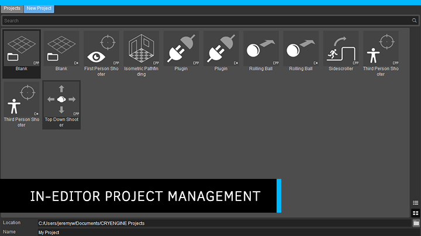
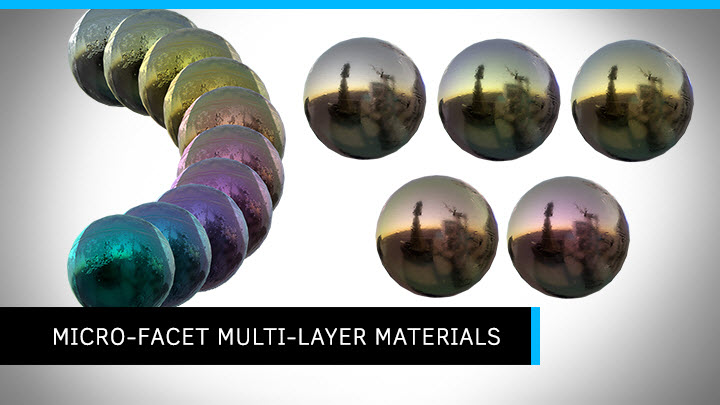
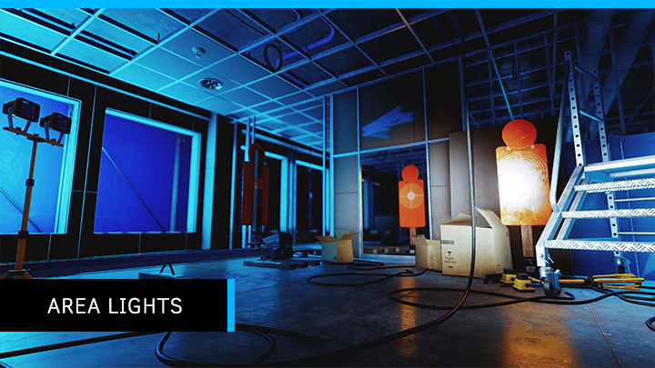
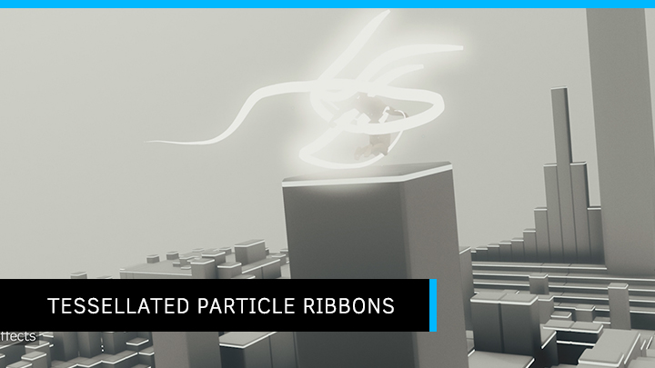
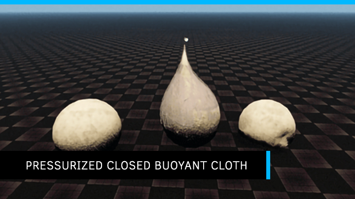
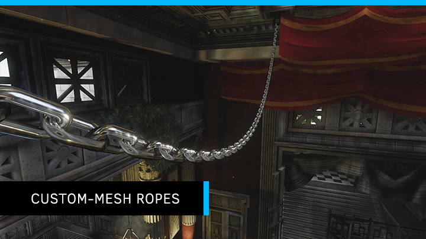
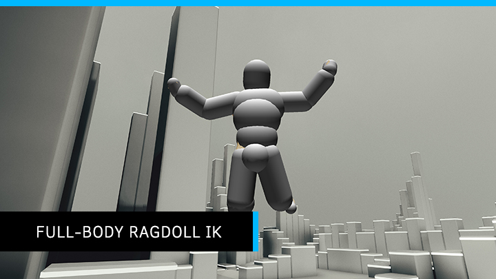
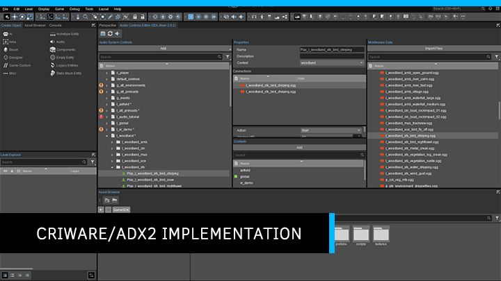
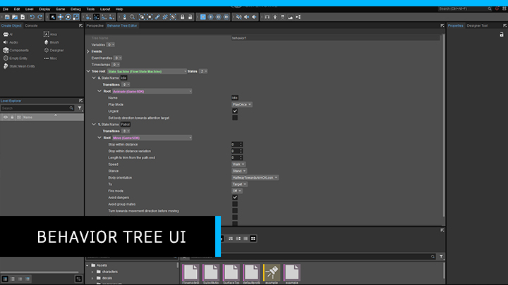
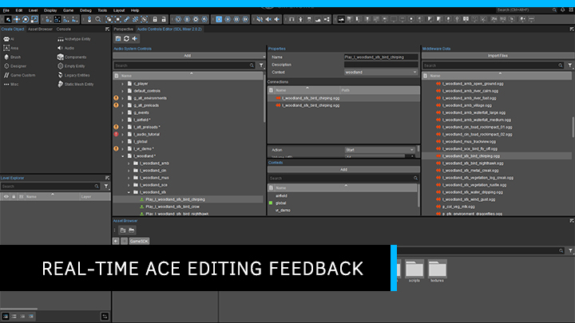

5.6 Overview
We are delighted to announce that CRYENGINE 5.6 is now available from www.cryengine.com and also via the CRYENGINE Launcher. This major release packs in over 1,000 changes and includes production-proven features which have been used to deliver Hunt: Showdown. Everyone at Crytek would like to thank the entire CRYENGINE community for all the feedback and suggestions that have helped to shape the development of this release. This Engine is for you and we couldn’t have done it without you.
CRYENGINE 5.6 is designed to put more power in your hands and make game creation quicker and easier. We’re sure you’ll agree that it marks a big step forward for the Engine. As you know, work doesn’t stop and we’re already looking at the roadmap for CRYENGINE 5.7. Make sure you keep your thoughts and feedback coming - it really does make a difference.
To celebrate the launch, we have put together a CRYENGINE 5.6 technology showcase. Check it out below;
Contributors
We would like to say a massive thank you to the following for their valuable contribution in the making of this 5.6 release of CRYENGINE.
- Joord
- ShivamMistry
- PersonWithHat
- JJMills
- xmz6666
Sections
Code Interface Changes
For more information, see the Important CRYENGINE 5.6 Data and Code Changes article.
Release Highlights
In-Editor Project Management
The Sandbox Editor now controls project creation and management, making getting started with a new CRYENGINE project faster and giving developers more flexibility with this new streamlined and improved workflow.

Micro-facet Multi-layer Materials
This new feature advances the visual reproduction of metals and gives more artistic control over the creation of a range of materials. By describing materials as a stack of layers of varying thickness, each with different optical properties, users can, for instance, model a wet surface by defining a slightly absorptive layer on top, and spatially or temporally varying the thickness of that layer.

Area Lights
Area lights deliver a better representation of how light behaves than traditional punctual light sources. CRYENGINE’s new implementation makes use of pre-computed textures, which will calculate and model area lights far more accurately. It also allows for more flexibility when defining different kinds of light shapes. As of right now, the area lights are a part of the Point Light Component, so if you have point lights in your scene, you can easily change them to area lights

Tessellated Particle Ribbons
The Render Ribbons feature has a new option called Tessellated. This enables the graphics card’s tessellation stage to smooth the joints in ribbon particles by generating new polygons in a curved shape which is also adaptive to distance. This feature benefits ribbon effects, including trails from flying objects and organic objects like worms or vines.

Inter-Entity Constraint Points Storage
This feature is designed to create gears, but also has other functions. It allows users to manually specify which entity will ‘own’ the constraint point, and since each constrained entity can have its own constraint point in place, it’s possible to create objects like belts with this feature.
Pressurized Closed Buoyant Cloth
Closed cloth shapes can now have internal pressure based on the current shape volume in this extension to the existing cloth entity.

Custom-Mesh Ropes
Ropes can now use bones and skinning and can be built from custom *.cgf meshes, repeated several times. This enables a chain ‘rope’ to be created from a single link and allows for the rapid creation of vines or complex cables that fit naturally in the environment.

Full-Body Ragdoll IK
Ragdoll IK is a physics-aware, energy-based, full-body IK, which tries to satisfy constraints imposed on the physics skeleton with minimum effort energy-wise. The effect is similar to applying physics impulses to characters, except the results are computed instantly, without the physics thread running.

CRIWARE ADX2 Implementation
CRYENGINE is audio middleware agnostic, and we’re proud to integrate support for CRIWARE ADX2, a comprehensive and easy-to-use audio system. If your team is already familiar with ADX2, the transition to CRYENGINE is simple. Discover more about CRIWARE ADX2 at https://www.criware.com/en/products/adx2.html.

Behavior Tree UI
The new Behavior Tree UI is a GUI interface which enables users to quickly create complex behavior trees for AI, bringing NPCs and enemies to life. This tool was developed by the Hunt: Showdown team, bringing yet more production-proven technology to the Engine.

Real-time ACE Editing Feedback
Users can now preview a middleware event in the right pane of the Audio Controls Editor, and without the need to firstly connect it to a corresponding trigger, so improving CRYENGINE’s audio pipeline with instant feedback.

Let Us Know
We hope you enjoy using CRYENGINE 5.6, and we look forward to your ongoing feedback. Keep your thoughts coming through the , or via Facebook, Github Issue Reporter and Twitter, or join the community and our CRYENGINE development team over on our official CRYENGINE Discord channel.
Known Issues
"Cannot generate a Visual Studio solution for projects outside the Engine installation folder when the Engine is installed in a path that contains the following characters: '[](){}#%^' due to a CMake bug."
When using the "Generate Solution" option on .cryproject files. If you encounter the error message above, then follow the work-around steps below.
Work-Around:
- With a text editor, open the file "C:\Program Files (x86)\Crytek\CRYENGINE Launcher\Crytek\CRYENGINE_5.6\Tools\CryVersionSelector\cryrun.py" (Assumes the default installation directory).
- Add the hash symbol (#) to the start of line 396.
- Save and close.
You should now be able to successfully generate solution files for your project.
- The CVar "sys_asserts" has no effect. Users will have to manually use the "Ignore" button when an Assert Dialog presents itself. NOTE: The "Ignore All" button can have undesirable side-effects.
VR: VIVE Head rotation lag when rotating using the VIVE Headset.
- CLOTH COMPONENT: Setting "0" for the Z Scale property will crash the Editor. Possibly corrupting the level.
- ACE: Saving a library, closing and then reopening the Audio Controls Editor causes a crash.
- SANDBOX: Selecting an asset in the "Create Object -> Brush" menu will cause the menu to scroll back all the way to the top.
Animation
Animation General
- New: Removed all references and dependencies to the SkeletonList.xml file and .animsettings skeleton aliases from the RC, replaced with a skeleton search.
New: Added blending between pendulum & spring attachment simulation and animation.
New: Added staticity setting for CharacterInstances - enables some additional optimizations.
New: Added CVars to configure the default memory consumption of CModificationCommandBuffer.
New: Added new character loading flags for physical proxy setup.
New: (3DEngine) Removal of static geometry (CCGFAttachment) and character instance (CSKELAttachment) attachment rendering logic from CryAnimation in favor of offloading them to the 3DEngine scene graph. This is achieved by registering such attachments as separate IBrush and ICharacterRenderNode instances, respectively.
New: (Character Tool) Shipping out support for rendering wireframe edges of character attachments.
New: Added surfacetype property to physicalized character rope attachments.
New: Support a separate set of physics proxies for ragdolls/optimized physics info memory usage.
New: Graph Dijkstra algorithm unit tests.
Refactored: Split serialization of character definition.
Refactored: Cleaned up naming and coding style for ExpandWildcards method.
Refactored: Added an enum type for an undocumented uint32 flag return type.
Refactored: Refactoring Vcloth.
Optimized: Prevent StartAnimationProcessing from starting jobs that exit immediately (in the case of culled animation updates).
Fixed: Silhouette rendering in front of objects.
Fixed: Issue with software skinning not releasing acquired IRenderMesh streams properly.
Fixed: Silhouette not affecting character attachments.
Fixed: A Vcloth bug in CClothPiece::WaitForJob() which refereed to incorrect JobManager::SJobState object when attempting to synchronize against software skinning jobs.
Fixed: Introduced missing assignment of SRendParams::pInstance unique identifier into CCharInstance::RenderCHR().
Fixed: Incorrect check for IMG loading flags.
Fixed: Removed a cycle of owning references between CSKINAttachment and IAttachmentSkin - in certain scenarios this has led to dangling attachment instances on level unload.
Fixed: Crash in cases when higher .skin LOD is not available while lower LODs exist.
Fixed: Edge cases of system.camera changes - caused by MFC tools with separate Viewports.
Fixed: Issue with the ERF_HIDDEN render node flag not being propagated by the attachment system.
Fixed: Character physics aware of entity slot offset.
Fixed: Possible cause of regressions, where in some cases FinishAnimationComputations might not be called if bImmediate is set.
Fixed: Avoid GPU readbacks from Vcloth Initialization.
Fixed: Crash related to animation jobs, i.e. removing attachments while job is running.
Fixed: Set correct Editor flags for character instance in importers DialogCAF and MainDialog. Renamed flag CA_CharacterTool to CA_CharacterAuxEditor to indicate general usage in different tools.
Fixed: Shipping out a workaround for multiple regressions caused by insufficiently robust propagation of render node state across attachment hierarchies.
Fixed: Corrected order of submitting and finishing render item lists from tools.
Fixed: Gizmos (rotate, scale) in Character Tool.
Fixed: 3D Audio in the Viewport is affected by the Character Tool - audio will be played in the wrong position if the Character Tool is running.
Fixed: (Character Tool) Anim_fx doesn't switch to audio (audio_trigger).
Fixed: (Character Tool) 'Hidden by default' infobox is missing when hiding Vcloth attachments.
Fixed: Restored character ropes 'disabling if invisible' optimization.
Fixed: Engine-side handling of 16bit (half) UVs.
Fixed: Issue where listing .i_caf files in an AnimList would generate an invalid assert when the Resource Compiler failed to create the corresponding compressed .caf. Let .i_caf files.
Fixed: Viewport issues in Mannequin - after calling Qt-dialogs from MFC.
Fixed: Added a CVar for Engine-side handling of audio animation events - historically, these have been always handled by game code. Note: this is still the default behavior to avoid breaking existing game code.
Fixed: Bug in CAnimSequence where entities that should've been pre-cached were not pre-cached.
Fixed: Crash on starting Mannequin.
Fixed: (Vcloth) Avoid integration of attached particles in sub-steps.
Fixed: Disabled Engine-side handling of audio animation events.
Fixed: (Character Tool) Added surface type (via sub-material idx) to CT-authored proxies.
Fixed: Issue with ragdoll physics geom refcounting.
Fixed: (Character Tool - Vcloth) Checkbox for NNDC switches to disabled after reloading.
Fixed: (GameSDK) Floating weapons for AI characters after players death and respawn.
Fixed: (Rendering) Compute Skinning.
Fixed: Issue loading certain types of AIM data.
Fixed: Attachments (for e.g. pistol and shotgun) are wrongly attached if compute skinning is used.
Fixed: Issue with the animation update not reusing its memory pools when no level is loaded - resulting in perpetual growth of memory usage when working with external tools such as Character Tool, Mannequin, etc.
Fixed: (Mannequin Editor) Loading another level (after loading a preview setup) causes the Editor to freeze.
Fixed: Audio event which was added to an animation in the Character Tool is not played in Editor/Game Mode.
Fixed: CppCheck errors.
Fixed: CppCheck warnings.
Tweaked: Tweaks to adhere to cppcheck.
Tweaked: Removed all instances of unused variables and removed the compiler warning suppression to prevent their reintroduction.
Tweaked: Added API examples for pose modifiers and motion parameters.
Tweaked: Added Mannequin API examples.
Tweaked: Introduced API example for ISkeletonAnim::StartAnimation.
Tweaked: Default to loading animations from *.caf.
Tweaked: Removed attachment shadow geometry merging functionality (ca_DrawAttachmentsMergedForShadows).
Character Tool
New: Removed all references to the SkeletonList and SkeletonAlias.
New: Introduced copy and paste support to Events Timeline.
Optimized: Hide physics proxies when exiting proxy edit mode.
Optimized: Renamed proxy purpose "ragdoll" -> "main physics" for disambiguation.
Fixed: Assert in attachment physics serialization.
Fixed: Solved problem where Events Timeline would not receive hotkey actions.
Fixed: Crash when opening the Character Tool.
Fixed: Bug where blendspace annotations weren't being serialized correctly.
Fixed: Attachment proxy disappearance on save, bad default values on new proxies.
Mannequin
New: Shipping out support for editing the "BlendOutDuration" fragment attribute (which controls the timing of IAction::OnActionFinished() runtime call).
Fixed: Compilation error that surfaced with the VS2019 16.1.0 update.
Fixed: A rare crash in the Mannequin Editor.
Fixed: Issue where switching layouts in Mannequin would cause a crash.
Fixed: Issue where the fragment tags file selector in the Fragment ID Editor dialog would sometimes not be populated properly, leading to an assert being triggered upon pressing 'OK'.
Fixed: UI issue where modifying the fragment tree would result in that part of the tree collapsing.
Tweaked: Shipping out several improvements to the Sequence Editor, mainly scrolling and time range adjustment related.
AI
AI System
New: Added new versions of NavMesh snapping and raycast functions that use a 'PointOnNavMesh' structure.
New: INavMeshQueryFilter::IsSampeType() is now public so it's possible to check whether two filters are of the same type.
New: (UDR) Expiration duration of live render-primitives.
New: (UDR) Update Loop.
New: (UDR) Split UDR Engine Module into Module and System.
New: (UDR) Added Timestamps and Frame Numbers.
New: Log clean up, Warning - Can't open file... /Scripts/AI.
New: Property of Navigation area for removing Inaccessible triangles of NavMeshes on level load.
New: Added support for NavMesh areas traversable by agents with lower height.
New: 'Not Triangulate' and 'AI Exclude From Trianglulation' properties renamed to 'Exclude From Navigation' and made them work with NavMeshes.
New: Added collision avoidance public interface.
New: Warning displayed when - loading a level via Launcher and when some parts of a NavMesh might be outdated.
New: CVar (ai_MNMDebugDrawTileStates) for debug drawing 'update states' of the NavMesh tiles.
New: (AISystem, Sandbox) 'Regenerate Pending Changes' option in the Sandbox Editor menu - for updating NavMesh with changes made while the regeneration was disabled.
New: Clean up, replace Plain id types (triangleId, tileId) with type-safe wrap types (TNavigationID type).
New: Create an alternative way to Update each of the AI sub-systems independently.
New: Global NavMesh filter is used when no filter is provided in navigation system functions.
New: Implement NavMesh Query Manager.
New: Added NavMesh snapping metrics which can be used in functions in Navigation System for specifying ranges for querying triangles.
New: Implement Hunt behavior tree intro CRYENGINE.
New: Prototype a comment decorator behavior tree node.
New: Make it possible to hide the behavior tree node type names in the Editor.
New: Provide more drop-down lists for Behavior Tree Editor that now uses string fields.
New: Various improvements to improve usability.
New: Refactor built-in signals.
New: Make use of refactored signals in IBT.
New: IBT Load Grunt from GameSDK tutorial.
New: Add option to hide deprecated and/or built-in signals.
New: Refactor pre-processor directives.
New: Updated Lua scripts in GameSDK to use new (refactored) signal system.
New: Support automatic migration and patching from hunt in the IBT.
New: Conditional debugging of IBT through CVars.
New: (UDR) Move into the Engine as a core module.
New: AI System global raycast queue tracks, more debug stats.
New: Marking and possibility to remove inaccessible regions in NavMesh.
New: MovementSystem: Extended the public interfaces to allow game code to implement its own movement planner (for building custom plans using its own movement blocks).
New: MovementSystem: Exposed IPlanner to CryCommon.
New: NavMesh queries can use query processing function object to process triangles when visiting them.
New: Added MNMDebugMeshBorders for debug drawing NavMesh borders.
New: Pathfinder has been modified to provide a failure reason. This failure reason is used in the PathfinderComponent to send the required signals.
New: BehaviorTree execution stack logger: now also shows each node's current status to easily spot transitions.
New: Islands connectivity is taking navigation annotations into account.
New: Debug draw functions are getting NavMesh query filter from NavigationComponent with name "MNMDebugQueryFilter".
Refactored: AI Console Variables.
Refactored: AISignal sender parameter type is changed from tAIObjectID to EntityId.
Refactored: Remove AI Object dependency from Flowgraph AI Sequences.
Refactored: Improved precision of slope parameters and NavMesh generated (based on them).
Refactored: OffMesh navigation refactoring.
Refactored: (CryAction)(GameSDK) Moved AI using deprecated AI features from CryAction to GameSDK.
Refactored: Clean/Move NavMesh Queries to Query Manager.
Refactored: CAISystem update to call private function to update each sub-system.
Refactored: NavMeshQueryFilter for the possibility to compare them.
Refactored: Moved NavMeshQueryFilters to separate headers.
Refactored: Deprecated Navigation System functions that use hard-coded ranges for querying triangles.
Refactored: NavMeshTestRaycastHit function returns ERayCastResult instead of just bool.
Refactored: Removed Smart objects dependency from OffmeshNavigationManager.
Refactored: Some reorganization of navigation headers.
Refactored: Optimized and refactored islands connectivity checking.
Refactored: All functions in Navigation System are properly taking NavMesh origin into account. Added helper function for converting coordinates from/to NavMesh space. Renamed positions parameters in NavMesh functions to localPosition.
Refactored: Added NavMesh query filter to all functions (from Navigation System) that need it.
Refactored: Removed unused CVars.
Refactored: NavMesh snapping - adding ranges to SnappingRules and using default values when ranges aren't set.
Refactored: Makes DebugHistoryManager usage optional in the AI System.
Optimized: NavMesh generation performance optimization, reducing size of spans allocation chunk.
Fixed: Crash when creating a new map (while AI fighting each other on the current map) triggered a pure function call and crash (CryAISystem.dllehaviorTree::Shoot::OnTerminate).
Fixed: Assert when enabling Physics/AI (after placing dozens of enemy and friendly AI in a navigation area) triggers an assertion failure (CollisionAvoidanceSystem.cpp.
Fixed: Incorrect NavMesh voxelization creating redundant voxels.
Fixed: (BTE) States under tree root is marked as duplicate field.
Fixed: Cuts in NavMesh when triangles with special annotation were next to tile boundary.
Fixed: Starting a game triggers an assert (CAISystemUpdate.cpp.
Fixed: Islands connectivity was wrongly updated after changing annotation of NavMesh triangles.
Fixed: Editor crashes when setting up an AI CMNMUpdatesManager::SwitchUpdateRequestState().
Fixed: MNMPathfinder requests don't get updated when there's a NavMesh regeneration.
Fixed: MNMPathfinder add comments, rename aStarOpenList and add debug info.
Fixed: Starting with CVar ai_debugDraw=1 failed with nullptr.
Fixed: NavMesh raycast wasn't always computing correct results - when the end location was on the edges of triangles.
Fixed: Puppet malfunction when jumping into game on VR_demo and then loading airfield and jumping into game twice.
Fixed: AI doesn't attack (CSignal.cpp).
Fixed: Bug that caused tree loader not to find built-in events.
Fixed: Loading process to print a message and fail when the tree is using events that are not previously declared. Note: this only happens in runtime mode and not in the Editor mode, therefore the tree can still be opened and errors fixed in the Editor.
Fixed: SendTransitionEvent to as it was before (always returns running, never succeeds or fails) to make sure that tree root never fails or succeeds.
Fixed: (Sandbox) AI movement simulation target position in Physics/AI simulation mode when snapping to terrain is enabled (snapping is ignored).
Fixed: Crash hitting AI with an axe and then hitting the ground causes a crash (CryAISystem.dll!SOBJECTSTATE::Serialize(CSerializeWrapper<ISerialize> ser)).
Fixed: Crash playing through woodland then respawning causes a crash (CryAISystem.dll!SOBJECTSTATE::Serialize(CSerializeWrapper<ISerialize> ser)).
Fixed: Crash (assert) when setting up an enemy and friendly AI in a NavMesh, jumping into game, the Engine will crash after the assert. CAISystem::SendSignal().
Fixed: nullptr crashes.
Fixed: Assert (warnings) AI doesn't attack. In addition improved loading strategy to be more tolerant and reduced log warnings.
Fixed: Bug that caused timestamps to show errors when using the exclusiveTo field.
Fixed: Bug when loading that caused half of the tree to be omitted in the Editor - when there was an error in a state machine/case priority.
Fixed: Added to code all signals coming from Lua.
Fixed: Behavior Trees now register game signals on start and de-register them on stop.
Fixed: Added Editor UDR to Sandbox.
Fixed: NavMesh raycast returning invalid result when start and end positions are on different layers.
Fixed: Compilation error in VS2017 15.7.2 (Behavior Tree Files).
Fixed: Friendly AI dies after a few seconds of enabling Physics/AI or jumping into Game Mode.
Fixed: Assert on custom level when enabling Physics/AI.
Fixed: Crash in NavMesh annotation updating with NavMesh level data mismatch.
Fixed: Array out of bounds access in MNM tile generator.
Fixed: Enabled NavMesh regeneration on all platforms.
Fixed: Added concept of Movement Plan Monitors to allow individual movement blocks to monitor for changes and custom conditions throughout the whole movement plan. FollowPath blocks now monitors for NavMesh changes by itself.
Fixed: Bug in IMNMCustomPathCostComputer::EComputationType enum values definition.
Fixed: Crash when loading Lobby with the null TPS system.
Fixed: BehaviorTree ExecutionStackFileLogger: no longer writing the trailing '\0' to the text file.
Tweaked: Spans in debug visualization of NavMesh tile generation (using MNMDebugLocator) are drawn in checker pattern.
Tweaked: Removed all instances of unused variables and removed the compiler warning suppression to prevent their reintroduction.
Tweaked: Removed all occurrences of unused variables and removed the '-Wno-unused-variable' compiler flag to protect against accidental reintroduction of such.
Tweaked: It is possible to request path-find without providing entity.
Tweaked: CAIEntityComponent is now invisible to the user.
Tweaked: Removed Helicopter Behavior tree nodes with Fly helpers.
Tweaked: Removed Hidespots.
Tweaked: Removed redundant IMNM.h header.
UQS
New: Live query history can now be serialized asynchronously via the new "UQS_DumpQueryHistoryAsync" console command.
New: Added new console command "UQS_PrintQueryHistoryStatisticsToConsole" to print information about the size and memory usage of the live and de-serialized query history.
New: Replaced all assert() calls with CRY_ASSERT() as the former might potentially not trigger in uber profile-builds.
New: Added concept of logging arbitrary messages and warnings in a live query to the history via the new IDebugMessageCollection.
New: Added new interfaces for inspecting currently running and finished queries.
Refactored: SQueryBlackboard renamed to SQueryContext to better convey its purpose.
Refactored: CQueryManager: now detects the biggest performance-offending query in case of time budget excess and will 'penalize' it by giving all other queries precedence and pausing the offender. Statisticical information now distinguishes between 'elapsed frames' and 'consumed frames' to indicate when a query was paused (due to being a performance offender).
Refactored: CVar uqs_timeBudgetExcessThresholdInPercentBeforeWarning renamed to uqs_timeBudgetExcessThresholdInPercent as it's now also used to interrupt the running queries - in case of a performance issues.
Refactored: CTimeValueUtil removed since Split() is now part of CryCommon's CTimeValue class.
Optimized: CQueryHistoryInGameGUI: Large performance improvement by no longer re-building the whole list of historic queries.
Optimized: CQuery_Regular: Phase 5 slightly optimized by copy/pop idiom of the vector of remaining working-data.
Fixed: Compilation error due to missing <Cry_Color.h> #inclusion when UQS_SCHEMATYC_SUPPORT was disabled.
Fixed: Crash in Query Manager when notifying of a finished child query.
Fixed: Editor plugins were no longer building after 32bit-support was dropped.
Fixed: Query History was no longer able to serialize the item-debug-proxies.
Fixed: History Inspector: Crash upon loading a query history when a 'live' one was already actioned.
Fixed: CVar uqs_timeBudgetExcessThreshold name confusion.
Tweaked: Query Editor: Added message boxes to ask for confirmation before deleting a query document from disk.
Tweaked: Rewrote update logic of child queries to circumvent 1-frame latencies in hierarchical queries.
Tweaked: Implemented the concept of query prioritization on top of the round-robin update mechanism.
Tweaked: Query Manager: Changed main update loop to a round-robin implementation to mitigate potential congestion and to guarantee a certain degree of responsiveness.
Tweaked: Query Manager: Relaxed detection of performance offenders (they now need to violate the time budget policy 3 times before counter measures come into force).
Tweaked: Added more performance markers.
Tweaked: QueryBlueprint names in log messages now also show up for child queries (with a suffix that makes it easy to spot the individual child).
Tweaked: Generators, Functions, Evaluators now also get access to the IQueryBlueprint they were instantiated from and to the query name for better debugging verbosity.
Tweaked: CQueryHistory: Removed m_itemDebugProxyFactory.
Tweaked: More precise information about time-budget excess.
Tweaked: CTextualQueryBlueprint: Now defaults to 1 item in the result to make it less error-prone when building new queries.
Audio
Audio General
New: Implement middleware specific callbacks.
New: Implement multi-listener support.
New: Added Audio:Parameter flownode.
New: Preview of middleware events in ACE.
New: ADX2 implementation.
New: Localization for SDL Mixer.
New: Localization for Port Audio.
New: Localization support for FMOD Studio implementation.
New: (SDL Mixer) File import for external audio files into ACE.
New: View dist ratio for clip volumes.
Refactored: Removed unused async loading of triggers.
Refactored: Clean up SDL Mixer implementation files.
Refactored: Clean up Port Audio implementation.
Refactored: Clean up Wwise implementation.
Refactored: Clean up FMOD Studio implementation.
Refactored: Audio system event triggers to be value types.
Optimized: (ACE) Optimized backup and restore of selected and expanded treeview items.
Optimized: Filtering in debug draw for AFCM and contexts.
Optimized: Removed obsolete platform properties in preload and setting controls.
Optimized: Construction of trigger instances.
Optimized: Removed obsolete standalone file feature.
Optimized: (ADX2) Handling of pending cue instances.
Optimized: Memory optimizations of STriggerInstanceState.
Optimized: (FMOD) Handling of pending event instances.
Optimized: Audio propagation processor to use less memory.
Optimized: Now do an object nullptr check before executing/setting a control, instead of per connection in impls.
Optimized: Update of active objects.
Optimized: Memory layout of audio objects and their propagation processors.
Optimized: Remove events from audio system.
Optimized: Several 'blocking' audio requests issued on level load and unload are now done in an asynchronous manner.
Optimized: Omitting data (which is only used during production) from objects in release builds.
Optimized: Made absolute and relative parameter controls as well as all internal triggers global.
Optimized: Made the global object truly global.
Optimized: Smoother scrolling and faster expanding of treeview items in ACE.
Optimized: Event Manager now stores event pointers in a vector instead of a list.
Fixed: Where localized files that were aborted during loading did not properly reset the loading flag, which in turn prevented changing the language.
Fixed: Rtpc flownode was setting its value on initialization.
Fixed: ACE could create a false control from an invalid XML tag.
Fixed: Finished signal was not sent when Trigger Component was not set to auto play.
Fixed: Destructing a Trigger Component would not stop a playing sound if auto play was not set.
Fixed: (FMOD & ADX2) Localized flag was not saved for placeholder items.
Fixed: (FMOD) Implementation initialization failed when masterbanks don't exist.
Fixed: Cppcheck error where in a class hierarchy members collided.
Fixed: Audio system did not compile if INCLUDE_AUDIO_PRODUCTION_CODE pre-processor define was unset in non-release type configurations.
Fixed: AutoPlay variable was set too late for initialization of audio Trigger Component.
Fixed: Occlusion values didn't update when trigger was executed on an audio object.
Fixed: Crash where the audio system crashed on invalid event impl data.
Fixed: SDL Mixer implementation now reports an error if a channel couldn't get played.
Fixed: Crash where invalid default controls were accessed if the middleware didn't provide a setup for them.
Fixed: Don't delete listeners and objects during impl release, but rather during destruction of their respective Managers - this fixes a crash when middleware(s) were swapped out.
Fixed: Crash Wwise shutdown crash, where an AK_EndOfEvent callback accessed invalid data - with this change the now obsolete CryAudio::Impl::IImpl::OnBeforeShutDown interface method has been removed.
Fixed: (FMOD) Sounds could not be played if they were in the masterbank.
Fixed: Absolute and relative object velocities not being updated when position optimization was turned on.
Fixed: A non-thread-safe member variable of audio objects was accessed in a multithreaded fashion, this is now not the case and the member variable is accessed by the main audio thread only.
Fixed: Set Rtcp parameter in Audio Component at the correct proxy before triggering.
Fixed: Wwise implementation did not load the convolution reverb plugin properly.
Fixed: Audio listeners now update their name if the owning entity's name was changed.
Fixed: Crashes and memory tramples happening when running the Port Audio implementation.
Fixed: Wwise's global audio object wasn't properly released.
Tweaked: Updated to ADX2 SDK 2.19.00.
Tweaked: Updated to FMOD Studio 2.00.03.
Tweaked: Updated to Oculus spatializer 1.39.0.
Tweaked: Updated to Wwise SDK v2019.1.2.
Tweaked: ADX2 implement multi platform support.
Tweaked: Marked Audio:Rtpc flownode as obsolete.
Tweaked: Added Audio:SwitchState flownode.
Tweaked: Marked Audio:Switch flownode as obsolete.
Tweaked: Added SwitchState Component.
Tweaked: Replaced scopes with contexts. Note: Multiple contexts can be active at the same time.
Tweaked: Added console commands s_ActivateContext and s_DeactivateContext.
Tweaked: Added s_DrawDebug u to show active contexts.
Tweaked: Added CVar s_PoolAllocationMode.
Tweaked: Renamed CVar s_AudioImplName to s_ImplName.
Tweaked: Object name can be used to filter debug draw for position spheres, distance and occlusion info.
Tweaked: Renamed CVar s_AudioObjectPoolSize to s_ObjectPoolSize.
Tweaked: Renamed CVar s_HideInactiveAudioObjects to s_HideInactiveObjects.
Tweaked: (ACE) Added file import for system controls panel and connections panel.
Tweaked: Renamed CVar s_DrawAudioDebug to s_DrawDebug.
Tweaked: Added s_DrawDebug option 'l' to toggle drawing of occlusion collision spheres.
Tweaked: Changed s_DrawDebug option 'Draw global object info'. from 'I' to 'm'.
Tweaked: Changed s_DrawDebug option 'Draw middleware specific info for active audio objects' from 'm' to 'n'.
Tweaked: (ACE) Added support for executing modified triggers.
Tweaked: (ACE) Added option to execute trigger connections in the connections panel.
Tweaked: Removed AFCM size limit except for Xbox One.
Tweaked: CVar s_FileCacheManagerSize is now Xbox One exclusive.
Tweaked: Added CVar s_TriggerInstancePoolSize.
Tweaked: Renamed CVar s_SetGlobalParameter to s_SetParameterGlobally.
Tweaked: Renamed CVar s_SetGlobalSwitchState to s_SetSwitchStateGlobally.
Tweaked: Added s_DrawAudioDebug 'l' to draw debug info of global object.
Tweaked: Added CVar s_OcclusionInitialRayCastMode to define how many rays are used for the first occlusion check after executing a trigger.
Tweaked: Renamed CVar s_ListenerOcclusionPlaneSize to s_OcclusionListenerPlaneSize.
Tweaked: Renamed CVar s_AudioObjectsRayType to s_OcclusionGlobalType.
Tweaked: Renamed CVar s_AccumulateOcclusion to s_OcclusionAccumulate.
Tweaked: Renamed CVar s_SetFullOcclusionOnMaxHits to s_OcclusionSetFullOnMaxHits.
Tweaked: Removed unused CVar s_FullObstructionMaxDistance.
Tweaked: Set ACE file version to 4. Mark libraries as modified if their file version is lower than the current ACE version.
Tweaked: Re-trigger controls after refreshing the audio system.
Tweaked: Due to the resource hungry nature of the audio occlusion feature, added CMake option to allow users to disable it if they don't use it.
Tweaked: Added info in debug draw if an object is to be released.
Tweaked: Introduced a CVar to manipulate the speaker channel setup in Wwise.
Tweaked: Removed CVar s_FmodSecondaryPoolSize.
Tweaked: Added option to set the occlusion ray offset per audio object in the Occlusion Component. Removed CVar s_OcclusionRayLengthOffset.
Tweaked: Added flownode Audio:DefaultTrigger.
Tweaked: Added Default Trigger Component.
Tweaked: Removed the redundant 'Audio' prefix from several audio data structures.
Tweaked: Added CVars s_LoadRequest and s_UnloadRequest to load/unload preload requests.
Tweaked: ADX2 implementation added 'Setting' control, component and flownode to load/unload DSP Bus Settings.
Tweaked: Removed the not needed ATL.h and ATL.cpp and moved their content to AudioSystem.h and AudioSystem.cpp.
Tweaked: Exposed AutoPlay variable in properties and removed obsolete SetAutoPlay node of Audio Trigger Component.
Tweaked: Implement streaming for FMOD Studio.
Tweaked: Removed no longer required includes from CryAudioSystem's stdafx.h and moved remainders to Common.h - this fixes issues with the UnitTest system including the CryAudioSystem). Further, have split data from Common.h into newly introduced Managers.h and DebugColor.h.
Tweaked: Removed numerous no longer required/obsolete includes from the audio system.
Tweaked: Removed absolute and relative velocity tracking switches and added Velocity Tracking Component as a substitute.
Tweaked: Removed the occlusion type switch and introduced a dedicated interface method on objects to set occlusion.
Tweaked: Removed no longer required ATLUtils.h.
Tweaked: Made all Managers and unique control containers global.
Tweaked: Fixed incorrect logging if a parameter or trigger wasn't found and it was either set or executed on an object.
Tweaked: Moved the global system pointer to Common.h.
Tweaked: Decreased audio system creation time by preparing the system in an asynchronous manner.
Tweaked: Removed the system event listener from CryAudioSystem.cpp and moved event cases to the already existing system event listener in AudioSystem.cpp.
Tweaked: Removed unused return types from object interface methods.
Tweaked: Implement additional CVars for Wwise init settings.
Tweaked: Audio Listener Component received the parent entity's name (this confused people), so it has been renamed to just Audio Listener. However, the underlying listener object still holds the following naming format for debugging reasons audio_listener_<entityname>_<entityId>.
Tweaked: Removed Switch Component.
DRS (Dynamic Response System)
Fixed: When DRS is not used, could not load dialog file gamek02\Libs\DynamicResponseSystem\DialogLines/dialoglines.dialog (not loading initial dialog when drs_dataPath is empty).
Tweaked: Removed all occurrences of unused variables and removed the '-Wno-unused-variable' compiler flag to protect against accidental reintroduction of such.
Core/System
Engine General
New: SmallFunction flat callable wrapper class.
New: UIFramework now has an exclusive listener which receives layout events first and can decide to abort broadcasting.
New: stl::void_t and stl::is_detected.
New: Added stl::optional.
Refactored: Removed eKI_XI_Connect and eKI_XI_Disconnect - instead use eKI_SYS_Connect and eKI_SYS_Disconnect.
Refactored: SFunctor removal plus code improvements.
Fixed: deviceNames array size.
Fixed: Dangling pointers re. console commands causing crash on exit.
Fixed: Update CDurangoInputDevice::m_deviceId on game-pad reconnection.
Fixed: Wrong data type being used to store thread id's.
Fixed: Refcounting mismatch in certain cases of SamplePhysEnvironment.
Fixed: C++17 compilation errors.
Fixed: Prevent nullptr access crash when issuing assert.
Fixed: Yasli bug that fails to detect the compiler version - causing crash when getting the type name string.
Fixed: A leak for SmallFunction when assigning a raw function pointer or reference to a non-empty SmallFunction.
Tweaked: Code standard compliance: interfaces should be structs.
Tweaked: MSVC enabling error: 4101 - unreferenced local variable.
Tweaked: MSVC enabling error: 4189 - local variable is initialized but not referenced.
Tweaked: Removed unused variables.
Tweaked: Merged clean up from //ce/task_sandbox_color_grading: removed unnecessary semicolons, added missed virtual dtor, #pragma once and removed old comments.
Tweaked: Added missed virtual dtors, removed unnecessary semicolons, spellchecks, #pragma once instead of c-guards.
Tweaked: Removed all instances of unused variables and removed the compiler warning suppression to prevent their reintroduction.
Tweaked: Added missing virtual dtor, spellchecks, removed C-style guards, removed double declarations.
Tweaked: Clean up - #pragma once instead of guards, spellchecks and redundant header comments removed.
Tweaked: Changed the default value of camera near plane distance from 0.25f to 0.1f.
Tweaked: Clean up - extra semicolons removed, spellchecks and declarations without implementations removed.
Tweaked: Removed all occurrences of unused variables and removed the '-Wno-unused-variable' compiler flag to protect against accidental reintroduction of such.
Tweaked: Made the CCryName CNameTable threadsafe.
Tweaked: Rectified VS2017 15.8 compatibility.
Tweaked: Added more unit tests covering SmallFunction features.
Tweaked: Rectified markdown formatting of FAQ.md.
Tweaked: All -Wswitch and -Wreorder warnings.
Tweaked: Usage of max.
Tweaked: Prevent freeing empty string header - as static memory cannot be freed (Linux-GCC warning).
Tweaked: Removed texture based Sky box flownode.
Tweaked: Removed script for downloading SDKs - this is now handled directly by CMake.
Common
New: Added xmodule_ptr, an alias of unique pointer with polymorphic deleter (meant for usage by cross-module resources). For ease of use also added a make_xmodule factory function.
New: Clean up CryCommon header inclusions.
New: CryAPIExamples module to compile Doxygen snippets.
Refactored: Make SFileVersion's array protected.
Refactored: Support constexpr SFileVersion.
Refactored: Added CTimeValue user defined literals.
Refactored: Added Doxygen internal markers to support hiding complex types from technical documentation.
Optimized: Support restricted references on MSVC.
Optimized: Threading: Minor CryFastSemaphore optimization.
Fixed: String removed from interface (that is in CryCommon folder).
Fixed: Added correct escaping to texture debug strings - %ENGINE% was causing problems with the c-style string interpolation (#542).
Fixed: Changed report mode to "assert" of vsprintf call when using MSVC - to prevent silent failures when interpolation parameters receive invalid data (#542).
Fixed: SFileVersion::operator> was implemented as operator>=.
Fixed: Transparent object rendering.
Fixed: Invalid memory access to removed surface type names.
Tweaked: Removed all instances of unused variables and removed the compiler warning suppression to prevent their reintroduction.
Tweaked: Clean up leaky inclusions in platform.h.
Tweaked: Removed all occurrences of unused variables and removed the '-Wno-unused-variable' compiler flag to protect against accidental reintroduction of such.
Tweaked: Added meta-tests to ensure CryGUID can be created at compile time.
Tweaked: Removed non-existing files.
Tweaked: Changed local player entity id to 2 - ensuring that by default entity id >3 and above are all available.
Tweaked: Added 64bit atomic increment (needed for atomic time-value accumulation).
Tweaked: Added regression unit test for DynArray constructor with initializer lists.
Tweaked: Revert a failing unit test case for ToUnixPath where it doesn't reflect the function's contract.
Tweaked: Moved Mannequin interfaces to CryCommon for Doxygen support.
Tweaked: Added default values to the SFogVolumeProperties structure.
Tweaked: IStatObj not using correct Doxygen style comments.
Tweaked: INetContext, IRenderer and IPhysicalWorld not having Doxygen pages generated.
System
New: Expose ISO 639-1 code of the active language.
New: Added sys_bp_frames_required_label to BootProfiler.
New: Disabled ThreadIsAlive checks on SCE - as the SDK does not provide any means to probe if a thread is alive.
New: Improved FrameProfiler memory tracking modes. Profile 9 now tracks accumulated memory per function, profile 10 tracks delta memory. CryMemoryGetThreadAllocatedSize() returns thread-local memory counter for accurate tracking. Display both positive and negative memory values and sort by abs value.
New: Added CVar 'memReplayRecordCallstacks' to allow disabling callstack recording.
New: Show number of allocations and average size in context tree view.
New: Added runtime CVar overriding to allow having & running multiple projects in the same solution without having to recompile.
New: Compiled Resource Cache support in CryPak.
New: (Linux) Detect if an instance of the application is already running and create a new logfile.
New: CVar for initial window size ratio relative to monitor resolution.
New: (JobSystem) Regression feature test for a JobSystem crash when turned off (sys_job_system_enable 0).
New: CryPak support for Compiled Asset Cache.
New: Allow plugin loading from a global registry.
New: Added TCVar<T> wrapper.
New: CVar's can be limited to a range or a fixed set of values.
New: JobSystem unit tests.
New: Added CTimeValue: Split().
New: Update to SDL 2.0.7.
New: Allow overriding CVar default values from game code.
Refactored: Clean up plugin loading code.
Refactored: Simplify SimpleThreadBackoff.
Refactored: Backoff more defensively - to avoid too aggressive a spin lock in high contention scenarios.
Refactored: Moved registering of physics CVar's from Systems to Physics.
Refactored: Clean up ISystem.h interface dependencies.
Refactored: Remove 32-bit support.
Refactored: Remove Cry_platform_{32/64}bit macros - we assume and now require 64-bit support.
Refactored: (JobSystem) Remove old lambda job implementation and switch to the unified lambda job.
Refactored: Replace threadlocal with C++11 thread_local - all platforms (Win, Linux, iOS, Mac, Android, Xbox, Orbis) have now unlocked the support in the relevant compilers (MSVC, Clang, GCC).
Refactored: Remove unused fallback backend from JobSystem.
Refactored: (JobSystem) Refactor job delegate and job declaration, reduce boilerplate code and unify lambda job with normal job interfaces.
Refactored: Don't differentiate between int and float in CVar overrides.
Refactored: (JobSystem) Rename 'sys_job_system_active_wait_enabled' to 'sys_job_system_worker_boost_enabled'.
Refactored: (JobSystem) Reduce temp worker dependency on the job state and simply active and deactivate an extra worker if needed.
Refactored: (JobSystem) Greatly increase the job queue size for each prio (this will consume ~4mb more).
Refactored: (JobSystem) Add Assert when job queue size is not sufficient.
Refactored: (Windows only) Store and expose OS and CPU information - was only logged before.
Optimized: Integrate MemReplay improvements for Xbox.
Optimized: Added Windows allocation hooks.
Optimized: Reduce overhead of Memstat_Context by writing static context names only once.
Optimized: Replaced complex SProfilerThreads structure and per-thread CFrameProfilers with simple thread-local profile stack and shared CFrameProfilers. Now displays multi-threaded profilers' thread name as 'multi' and now tracks actual profiler overhead in CFrameProfilerSection. Removed inaccurate overhead estimation - greatly reduced overhead when not profiling by early outing if CFrameProfilerSection.
Optimized: Removed outdated Main and RSX columns in context tree view.
Optimized: Reduced number of kernel-calls per-frame.
Optimized: CVar registration macros expanding to forced in-lines (resulting in extremely long build times for CVar registration functions due to attempts at inlining hundreds of function calls).
Optimized: Avoid interlocking between FOpen/FClose and other file operations on files inside *.pak archives.
Optimized: Ensure that code checking gEnv->IsEditor() is optimized.
Optimized: Ensure that code checking gEnv->IsClient() is optimized for dedicated server.
Optimized: (JobSystem) Added CVar sys_job_system_active_wait_enabled (default: enabled).
Optimized: Spawn an extra JobSystem worker thread when waiting for a job state on Main or Render Threads.
Fixed: sys_spec value override (for consoles) not being set in the CVar. Updated sys_spec description.
Fixed: Log backup assert on Durango and refactor log path handling code.
Fixed: *.cfg file search not looking in the Engine folder.
Fixed: (ASAN) alloc-dealloc-mismatch in CryPak.
Fixed: Removed dysfunctional command memResetAllocs.
Fixed: Time demo playback for V4 file format files, fixed profile system deadlock during playback.
Fixed: (JobSystem) A potential race condition and dead lock.
Fixed: Crash accessing Memory Manager when memreplay detours enabled - due to static initialization order.
Fixed: Plugin load order (so statically linked plugins still follow the order specified in the cryproject).
Fixed: Crash on multiple calls to ISystem::Quit.
Fixed: CVar overrides for const float CVars.
Fixed: Crash after loading woodlands on Xbox One.
Fixed: Asserts on setting sys_firstlaunch.
Fixed: Wrong fatal error.
Fixed: Reference CVar override template overload resolution failure.
Fixed: Durango release compilation - allowed *.dmp in release configuration for Durango.
Fixed: Crash .dmp output for Xbox.
Fixed: 'Exec' CVar does not execute the CVars in its *.cfg file.
Fixed: XConsole includes for non PCH.
Fixed: An invalid string bug for debug call stack.
Fixed: Shutdown crash related to CVar name. For optimization switched CVar container from std::map to std::unordered_map. Refactored CXConsole iterators and code style. Fixed renderer CVarUpdateRecorder to use case insensitive CVar names.
Fixed: Remove #ifdef _dll causing CreateSystemInterface() to not be exported on Linux.
Fixed: Failing assertions caused by mismatching CVar type access.
Fixed: (JobSystem) Bug where jobs are not immediately called (when the JobSystem is disabled).
Fixed: (JobSystem) JobSystem filter not working properly.
Fixed: In AI/Physics mode, RenderBegin was called twice - incrementing FrameId, but Render only once, causing improper particle video buffer access. Now RenderBegin is only called once.
Fixed: Monolithic build.
Fixed: CVar change callback dangling index bug.
Fixed: sys_keyboard_break to pseudo-crash with dump even if no debugger is attached.
Fixed: (JobSystem) A race condition when shutting down Job Manager.
Fixed: Compilation with Not_Use_Cry_Memory_Manager active.
Fixed: (JobSystem) A shutdown crash for JobSystem unit test.
Fixed: (JobSystem) Shutdown bug for thread backend helper workers.
Fixed: (JobSystem) Shutdown bug for blocking backend threads.
Fixed: Resolution AutoDetect now uses the correct monitor and monitor size.
Fixed: (Global UI) Interaction of the UI elements are misplaced (don't match with cursor position) when the resolution is set to 1920x1200.
Fixed: CryMathText.Vector tests by re-initializing random generator each run and adjusting tolerances.
Fixed: (Screenshot Grabber) 3 race conditions and allow multiple consumers.
Fixed: Thaw Render Thread and do not enforce exclusive log access for crash screenshot.
Fixed: Use ::PostMessage instead of ::ShowWindow illegaly from non-owning thread for window minimization.
Fixed: Inability to use 'exec' command from .cryproject file.
Fixed: Crash handler added ILog::GetFilePath, changed ILog::GetFileName to return file name instead of path.
Fixed: Log files being created in the Engine root instead of Project Directory.
Fixed: INumberVector.NormalizeSafe assignment to this requires cast to final type.
Fixed: Ensure system clock calls to timeBeginPeriod and timeEndPeriod match.
Fixed: Windows path not being retrieved correctly.
Fixed: Boot profiler missing last stage of level load due to listening to the incorrect system even for level load end.
Fixed: DynArray initalizer_list ctor.
Fixed: (Client) Crash can sometimes occur on session connect.
Fixed: (K02 Localization) [Error] <Localization> No localization files found.
Fixed: (PS4) Startup issue - disable plugin load from disk if shared libraries are unsupported.
Fixed: (JobSystem) Race condition where lambda constructor and destructor were executed from multiple threads - leaving the lambda in an invalid state.
Fixed: CXmlNode shutdown crash that fails a unit test.
Fixed: Mouse cursor visible on alt tab. Fixed double cursor visible on startup.
Fixed: Visual Studio compilation with the new/permissive compile option.
Fixed: (Schematyc) (Xbox One) Log file backup.
Fixed: Alt tab mouse cursor window lock.
Fixed: Invalid memory access to removed CVar name.
Fixed: Detect up to 64 CPUs for any 64-bit platform (not just Windows).
Fixed: Use shutdown before close when stopping RemoteConsoleServer thread.
Fixed: Looking up CVars with "?something" showed non-whitelisted CVars.
Fixed: CVars that could be changed by Game Project in Debug/Profile and not existing in release are incorrectly marked as VF_CHEAT.
Fixed: CVar Whitelist not working.
Fixed: DebugCallstack crash on Windows dedicated server.
Fixed: Log files not being stored in .cryproject folder (when running project from a directory other than the Engine).
Fixed: CRYENGINE compilation with C++17 Visual Studio compiler.
Fixed: No-uber compilation (stdafx.h include in DiskProfilerWindowsSpecific.cpp).
Tweaked: Save replay recordings into the Project Directory, rather than the Engine root. Can be turned off by CVar memReplaySaveToProjectDirectory.
Tweaked: Added memreplay markers for jobs.
Tweaked: Enable MemReplay recording on Linux.
Tweaked: (Win32) No need to alternate methods in backoff lock (since XP Sleep(0) has the behavior required).
Tweaked: Added max polygons and drawcalls CVars for display Info.
Tweaked: Added position offset for software mouse cursor to support different icon style on Xbox (where position should be center point).
Tweaked: Reduce log file buffer size from 2MB to 256KB.
Tweaked: Make CDurangoLogThread platform independent (log_UseLogThread on by default on consoles only).
Tweaked: Removed all instances of unused variables and removed the compiler warning suppression to prevent their reintroduction.
Tweaked: Disabled memory profiling by default in FrameProfileSystem.
Tweaked: Improved system last error message (always print the error number along with the error message).
Tweaked: Make floating point exception (FPE) support optional via CMake option and USE_FPE define.
Tweaked: Remove unnecessary FPE code.
Tweaked: Removed all occurrences of unused variables and removed the '-Wno-unused-variable' compiler flag to protect against accidental reintroduction of such.
Tweaked: Optimize ConsoleHelperGen categories.
Tweaked: Added profile marker in CSystem::PrePhysicsUpdate().
Tweaked: (JobSystem) Removed unnecessary inclusions.
Tweaked: (sys_spec) Only limit the global sys_spec CVar to platform values (1-4 on PC, special values on other platforms) and let individual sys_spec_* configuration files be more flexible with these values (required for the latest changes in how vram is calculated for use in the texture pool).
Tweaked: Apply override keyword on virtual method in CXmlBinaryDataWriterFile and update variable names to the coding standard.
Tweaked: Simplified console and CVar header dependencies.
Tweaked: Clarified ICVar::Set(const char*) && ICVar::SetFromString usage assert.
Tweaked: (JobSystem) Job Manager init and shutdown (stress) unit test.
Tweaked: (JobSystem) Reset init flag after shutdown.
Tweaked: (JobSystem) Fixed job callback const correctness and other standard conformance.
Tweaked: (JobSystem) Disabled profile maker to avoid spamming profile 1.
Tweaked: Added test command for loading a level.
Tweaked: Introduce CMake option OPTION_REMOTE_CONSOLE to control availability of the remote console.
Tweaked: Introduced sys_bp_level_load_include_first_frame CVar to include the first frame's profiling events into level load profiling (to catch FG misc:start triggers and more specifically to catch game code authored layer switches).
Tweaked: Use 'isnan' instead of redefining it to '_isnan', since the former is always available.
Tweaked: When outputting error log without symbols, print module+offset instead of raw addresses.
Tweaked: Fixed a failing unit test for ArchiveHost SerializeJson where the test wrongly assumed the result is a null-terminated string.
Tweaked: Restore gEnv->noAssertDialog Boolean to suppress showing of the assert dialog box while keeping the rest of the assert handling intact.
Tweaked: Clean up TConsoleVariable since most of it's functionality is already in XConsoleVariable.
Entity System
New: Added CVar to en/disable proximity trigger system and partition grid.
New: Added a flag for custom ViewDistRatio on entity slot level.
New: Added es_logAreaDebug to dump debug info into log.
New: Added scoped layer set switch to allow for finer grain control of layer activations and simplify Flowgraph handling of such matters.
New: Added feature test to validate entity layers correctly being loaded in Launcher.
New: Added salt buffer array and entity iterator unit tests.
New: Added support for Entity Components in Flowgraph.
New: Added debug drawing for Entity Components, hierarchies and links.
New: Added es_profileComponentUpdates=3 option for profiling entity event costs on a per-frame basis.ntity System.
Refactored: Remove separation of static (loaded from level) and dynamic entity identifiers, using the full entity id space for both.
Refactored: All debug draw CVars into a single CVar to improve usability.
Refactored: Debug functionality will no longer be compiled into release builds.
Refactored: Change IEntityComponent::GetEventMask return type to use CEnumFlags for type safety.
Refactored: Add support for increasing number of bits used for entity index - instead of 50/50 split between index and salt in identifier. Allows for easy tweaking of maximum entity count for a project.
Refactored: Timer events to be unique per component instead of per entity - ensures that timer identifiers can be made unique from game code and eliminates the need for in-Engine iteration on map to find a unique identifier.
Refactored: Add experimental constant Entity Event Listener storage (disabled by default).
Refactored: CEntityPhysics and CEntityRender to receive events through direct calls (instead of adding 30+ listeners for each entity in the world).
Optimized: Change delayed cloth attachment to first use OnRender and only switch to timer if rendermesh still hasn't been streamed in.
Optimized: Re-implement support for tracking max used entity index - eliminates the need to iterate all 65k entities when sending many events.
Optimized: Remove O(N) back to front static entity identifier path - now always uses the O(1) path, excluding reserving of entity ids.
Optimized: Load parameter storage not being reserved during level XML parsing (instead reallocating vector multiple times).
Optimized: Remove redundant look up for entity layers in CEntitySystem::EnableDefaultLayers.
Optimized: Fix unnecessary copy of Event Listener set when doing binary search on sets.
Optimized: Save 64 bytes per entity instance in the world.
Optimized: Speed up CEntityPhysics::OnTimer when timer has to be re-added, then re-use same id.
Fixed: Entity Component created by its interface doesn't have properties serialized in Sandbox.
Fixed: Bug with cloth delayed attachment.
Fixed: Stop at local grids when computing parent for attachment (i.e. the topmost physicalized parent).
Fixed: Add additional checks for CVar es_UseProximityTriggerSystem.
Fixed: LoadGeometry working incorrectly when a compound statobj already exists in slot 0.
Fixed: Possible crash by physicalizing entity slot.
Fixed: LightProbes not recognized as regular deferred lights (just because their texture was missing).
Fixed: Static entity network identifiers mismatching when entities failed to spawn or were skipped - resulting in failed network connections.
Fixed: Warning for failed entity load never being output.
Fixed: Case where entities would not be created from level.
Fixed: CEntitySystem::GetEntityFromID not correctly supporting extending entity index bit count.
Fixed: Loading screen not ticking during entity spawning from disk.
Fixed: Exported entities (in layers) hidden by the "Loaded in Game" option still being unhidden on level load in pure game mode.
Fixed: Incorrect copying of flags when moving physics to a different entity.
Fixed: Component doesn't get instantiated when created with base type id.
Fixed: In-game entities being removed too early when exiting Sandbox Editor Game Mode.
Fixed: (Animation) Character physics ownership wrt deletion.
Fixed: Timer crash after save game deserialization - due to timer listener not being re-set.
Fixed: Removed unnecessary assert on proxy serialization.
Fixed: Re-physicalization of linked objects.
Fixed: Loading custom map triggers assertion (AreaProxy.cpp).
Fixed: Saving custom map triggers assertion (AreaProxy.cpp).
Tweaked: Improve es_layerdebuginfo to show more layer entries on screen and reorganize debug entries for better overview.
Tweaked: Remove all occurrences of unused variables and removed the '-Wno-unused-variable' compiler flag to protect against accidental reintroduction of such.
Tweaked: Entity iterator implementation (storing direct iterator to entity array instead of index).
Tweaked: Remove Entity_Flag_Never_Network_Static - no longer needed as we correctly identify items loaded from level, instead of assuming that anything spawned during load time is static.
Tweaked: Fix a failing feature test.
Tweaked: Add profile labels for default layer activation.
Tweaked: Remove unused Entity Events.
Tweaked: Add API examples for Preview Rendering.
Tweaked: Introduce API examples for IEntity::Load* functions.
Default Entities
New: Ported LocalGrid Entity to a Schematyc Component (enable grids by default).
Fixed: Possible nullptr access in the Advanced Animation Component.
Fixed: Right shoulder button doesn't work.
Fixed: Some default values of RigidBody Component.
Tweaked: Exposed max time step and sleep speed in RigidBody Component.
Tweaked: Removed all occurrences of unused variables and removed the '-Wno-unused-variable' compiler flag to protect against accidental reintroduction of such.
Tweaked: Add missing shadow settings to Light Components.
WAF
New: Check if device is plugged in prior to installation.
New: Uninstall package prior to installation - if same package with different signature is already present.
Refactored: Sync plugins and 3rd Party libs.
Refactored: (Win) Update WAF related files.
Refactored: Fix VS solution generation.
Optimized: Avoid root cry_waf.exe invocation when compiling from VS and use cry_waf.exe in Code/Tool/... instead.
Fixed: QT compilation to allow replacing "\\" with "/".
Fixed: Fix SWIG compilation to allow replacing "\\" with "/".
Fixed: Handle incredibuild inability to process "\\" in strings when using response files.
Fixed: Bug incredibuild not able to parse clang.exe commands correctly.
Tweaked: Sync WAF with CMake.
Tweaked: Set minimum Android SDK platform version to 24.
Tweaked: Update supported Windows SDKs.
Tweaked: Remove hardcoded SDL2Ext from WAF.
Tweaked: Sync *.waf_files.
Tweaked: Update *.waf_files to follow CMakeList.txt file order.
Tweaked: (Android) Add Sysincpaths to env to ensure system includes are placed after Engine and project includes.
Tweaked: (IB) Clang builds no longer require a dev tools acceleration licence.
Tweaked: Update WAF projects.
CMake
New: Use gcc from bootstrap.
New: Use a bootstrapped ninja binary on Linux.
New: Use bootstrapped Clang.
New: Use a CMake include in tools on Linux.
New: Added Option_Release_Logging.
New: Upgrade to CMake 3.14.5.
New: Added VC++ 2017 support to scripts.
New: Hunt monolithic build, fix LTCG option and added monolithic Engine with game as dll option (for Hunt). Removed UQS_xxx_shareable projects (shared project generated if needed).
New: (CMake, Renderer) Including DXC option in CMake when DX12 and vk are the target dlls. Also, copying the compiler file to the bin folder.
New: Added the option for profile-guided optimization.
New: Replace ../../SDKs to ${SDK_DIR} in all CMake files.
New: Support for specifying Linux Clang compiler to be taken from the bootstrap folder.
New: Support building API examples without the Engine for auto compilation.
Refactored: Don't force C standard version for *.c files.
Refactored: Clean up PS4 toolchain executable and include paths.
Refactored: Significantly simplify Android setup for Ninja builds and use the correct CMake variables.
Fixed: Option Engine not working with projects outside of the Engine root folder.
Fixed: Compilation for project templates.
Fixed: Xbox One so that correct include and library paths are being setup.
Fixed: Consoles can run bootstrap before setting themselves up.
Fixed: PS4 uses the correct SDK path during configure and generation steps.
Fixed: Variable name mismatch in Xbox toolchain files.
Fixed: Compilation with OpenSSL.
Fixed: RTTI-related crash due to inconsistent compilation options.
Fixed: C files are now compiled with C11 standard instead of forcing them to c++ compilation.
Fixed: Durango monolithic, with game, as dll building.
Fixed: Linking error to DXC.
Fixed: Monolithic builds when a lib is linked into a shared lib and a dll.
Fixed: LTCG. Did not define /GL for compiled object files.
Fixed: Added /OPT:REF and /OPF:ICF for release builds.
Tweaked: Make profile and release use their own output folders.
Tweaked: Set import library (lib&ilk) directory for the executable (Launcher) project back to default so it outputs to the solution directory and not the bin.
Tweaked: Updated minimum required version from 3.6.2 to 3.14.5 (CMake).
Tweaked: Show normal text for enabling PCH message (rather than a warning text).
Tweaked: Enable precompiled header for unity build and use PCH for Sandbox moc files.
Tweaked: Clean up Clang compilation settings file.
Tweaked: Fix build warnings that arose from specifying conflicting options.
Tweaked: CMakeList.txt files to point to *.waf_files to allow WAF conversion scripts.
Tweaked: Fix minor errors in CMakeLists.txt files.
Tweaked: Allow Engine directory to be overridden in projects (to allow scripted external builds).
Tweaked: Switch default Windows SDK to 10.0.16299.0.
Tweaked: Ensure VS2017 will force/permissive (if actual Windows SDK is too old).
Tweaked: Rename "WIN32" to "WINDOWS" for symmetry with other platforms.
Action General
- New: Support custom TimeDemo implementation.
- New: Debug history levels drawing and a fix for for line drawing.
- New: Time-sliced level loading (to let server process channel context establishment tasks and allow client to load the level earlier).
- New: Added new direction types to orient MFX particle effects along object orientation, object velocity or joint orientation.
- Refactored: (CryAction, DialogSystem) DialogSystem moved from CryAction to GameSDK.
- Refactored: Fixes to IGameFramework to allow for custom GamerFramework and custom GameContext.
- Optimized: Fix usage of level svogi.pak in release configuration.
- Fixed: Game Volume Manager not considering baked objects for entity id resolving.
- Fixed: Crash or hang during loading outdated level format.
- Fixed: Assert triggering on print screen.
- Fixed: Remove GameObject dependency from CActionMap::ReleaseFilteredActions.
- Fixed: De-registration of vehicle system CVars.
- Fixed: Crashes in establishment tasks due to the destroyed game context during the game shutdown.
- Fixed: CVars not de-registered on shutdown.
- Fixed: Invalid particle file path (spaces at end because of XML).
- Fixed: Multiple loading of mission XML.
- Fixed: Clean up of time-sliced level loading state on level load failure.
- Fixed: Creation of GameRules on connecting client in multiplayer.
- Fixed: Invalid access to the deleted memory of CVars.
- Tweaked: Removed all instances of unused variables and removed the compiler warning suppression to prevent their reintroduction.
- Tweaked: cppcheck warnings about member variables not initialized in constructor.
- Tweaked: Removed all occurrences of unused variables and removed the '-Wno-unused-variable' compiler flag to protect against accidental reintroduction of such.
Flowgraph
Fixed: More robust camera proxy position update (allow Physics:Params nodes to be triggered by non-0 in-place inputs).
Fixed: Issues with set physics params nodes - old params not working with schematyc ents, constraint frames not vectors on new params).
Fixed: Incorrect parameters passed to Entity_Event_Script_Event.
Fixed: PlayAnimation node ignores StayOnLastFrame option.
Tweaked: Removed all occurrences of unused variables and removed the '-Wno-unused-variable' compiler flag to protect against accidental reintroduction of such.
TimeDemo
Tweaked: Allow recording of time demos for games not using the Actor system.
Movie System
Fixed: Crash in EntityNode delete on PS4.
Fixed: Crash when loading levels without the renderer being present.
Tweaked: Removed all occurrences of unused variables and removed the '-Wno-unused-variable' compiler flag to protect against accidental reintroduction of such.
Schematyc
- New: Added Water Volume Component.
- New: Added Physics Particle Component.
- New: Added Ragdoll Component.
- New: Added Environmental Cloth Component.
- New: (Schematyc Legacy Editor) Improve link selection and deletion.
- New: Schematyc statemachines of a schematyc object can have remote authority.
- Optimized: (Constraints) Exposed 'helper' entity id - added link-based entity referencing.
- Optimized: Changed SampleRigidbodyActor to use the existing physics poststep event instead of its own callback.
- Optimized: Schematyc timer queries by using the TimerId as a direct index.
- Optimized: Clarified mass property description for scaled objects.
- Fixed: cppcheck error memleakOnRealloc.
- Fixed: Moved ReflectType to headers on certain Physics Components.
- Fixed: Crash in dependency graph - selecting something from the search list and closing the window causes a force quit and a crash.
- Fixed: Crash Substance Editor crashes when closing substance archive edit window.
- Fixed: Schematyc settings are loaded twice in the Sandbox Editor and overridden to incorrect values.
- Fixed: Asserts due to the missing method overrides in CResourceCollectorArchive.
- Fixed: (Schematyc Legacy Editor) Editor is not working as intended - cannot add components or actions.
- Fixed: (Schematyc Legacy Editor) Schematyc node filter does not finish the current search when confirming fast with 'Enter' and causes the last node selected to be added.
- Fixed: Invalid file accesses when loading *.cgf file.
- Fixed: Entity class selector showing invisible/hidden classes.
- Fixed: Crash due to CRelevanceGrid::m_entityToGridCellIndexLookup not cleaned up on level load.
- Fixed: (XML Reader Warning) Can't open file (gamek02/cryschematycsettings/log_settings.sc_settings).
- Fixed: Crash on application shutdown.
- Tweaked: Removed all occurrences of unused variables and removed the '-Wno-unused-variable' compiler flag to protect against accidental reintroduction of such.
- Tweaked: ClassMemberDesc extra getter.
Templates
Fixed: Inability to setup templates for Multiplayer mode without the user making large changes and match rolling ball network setup with other templates.
Fixed: Issue in the First Person template where the character would permanently turn.
Fixed: Linux compilation by adding target guards around ncurses and using CRYENGINE_DIR in the toolchain file.
Tweaked: Clean up code for clarity.
Tweaked: Removed unused variables.
Tweaked: Compilation fix for Linux.
Core Systems
- New: Allow live switching of profilers through the command 'profiler'.
- New: Added support for PIX profiler on Windows.
- New: Rewrite of the profiling system to have a unified interface and reduce the macro clutter.
- New: Added unit test project for Sandbox sample plugin.
- New: CryTest Sandbox plugin.
- New: Added Audio unit test project.
- New: Cry3DEngine unit test project.
- New: CryAnimation unit test project.
- New: CryCommon unit test(s) migration to the new framework.
- New: Google test integration.
- Refactored: Reduce locally suppressed Clang compiler warnings for CrySystem and unit test projects.
- Refactored: Replaced Loading_Time_Profile_Section macros with Cry_Profile_Function and Cry_Profile_Section.
- Refactored: Replaced Cry_Profile_Region macros with Cry_Profile_Section.
- Refactored: Changed CVar sys_job_system_profiler to only show job related information - instead of also including main and Render Thread profiling information.
- Refactored: Clean up remaining code, script and console commands that referred to the old unit test system crytest.
- Refactored: Add crash handling and temporary test result for CryTest, add test name and auto complete for console command "crytest".
- Refactored: Support function comparison.
- Refactored: CryUnitTest support message output when test fails.
- Refactored: CrySystem serialization unit tests.
- Refactored: Unit test Require macro supports logical && and || operators in the expression.
- Fixed: Code that caused the truncation from 'double' to 'f32' warning.
- Fixed: Unsafe usage of cry_strcpy and cry_strcat in unit tests.
- Fixed: Compilation issues with GCC 9.1.
- Fixed: Compilation errors uncovered by Clang 8.
- Fixed: Compilation of _reference_target_no_vtable.
- Fixed: Init profile system before filesystem - as filesystem is already using profile markers.
- Fixed: Shutdown crashes in release and debug configurations.
- Fixed: Suppress Clang warning locally for Orbis.
- Tweaked: Make CryDebugBreak() a macro to break at the place it's called.
- Tweaked: Modified the profile_filterSubsystem command to allow easier exclusive profiling.
- Tweaked: Restore proper error output for invalid parameters.
- Tweaked: Add documentation for cry_strcpy and cry_strcat.
- Tweaked: Threadid_Null to threadID and made it a constexpr.
- Tweaked: Remove a failing test case which violates the premise of the API.
- Tweaked: Add parameter check to Cry_Profile macros.
- Tweaked: Updated Linux to use Clang8.
- Tweaked: Add blocking backend information to sys_job_system_profiler display.
- Tweaked: Round time scale of job profiler to multiples of 5ms for better readability.
- Tweaked: Show finish times of main and Render Thread in job profiler.
- Tweaked: Remove asserts specific code from release build configuration.
- Tweaked: Google unit test version update, C++ 17 support and Clang warning suppression.
- Tweaked: Fix up memreplay marker categories.
- Tweaked: Cross-platform implementation to convert error codes to strings.
- Tweaked: Rename CryTest Runner to Test Runner and move into Tools/Advanced menu.
- Tweaked: Migrate certain remaining CryTests to unit tests, re-enable tests.
- Tweaked: Compile out CryTest framework in release build.
- Tweaked: For better clarity improve error report for incomplete tests.
- Tweaked: Temporarily disable unit test system for Android - to prevent compilation error before proper support is provided.
- Tweaked: Compile-time comparison operator validation for better compilation error output messages.
- Tweaked: Improve floating point error output messages.
- Tweaked: Improve CMake error report when gtest is not found from bootstrap.
- Tweaked: Adjust unit test class naming to avoid name conflicts with existing classes.
- Tweaked: Remove boost remainders from CryAction.
- Tweaked: Remove outdated containers HeapQueue, HeapPriorityQueue and CStackContainer.
- Tweaked: Remove outdated InplaceFactory types.
Graphics and Rendering
Renderer General
- New: Added instance rendering to SCompiledRenderPrimitive.
- New: Added GS_BLSRC_SRCALPHA_A_ONE blend state.
- New: Reusing existing vertex layout - if trying to create a vertex layout with description that already exists.
- New: Make Skybox streamable.
- New: Replaced Texture-based Skybox by Material-based Skybox.
- New: (Renderer, Sandbox) Expose Angle/Opacity/Color/Intensity of the skybox to Sky-materials and Environment presets.
- New: Implemented a technique to render Area Lights using Linearly Transformed Cosines (LTC).
- New: (Renderer, Shaders) Added overdraw-complexities debug mode.
- New: (Renderer, Vulkan) Allow use of out-of-order rasterization on AMD if available (no client added).
- New: Multi-layered microfacet materials and thin-film interference.
- New: DXC v005.
- New: Added Discard API.
- New: (Renderer, Shaders) Added tesselation support to Zprepass.
- New: (Renderer, Shaders) Add Zprepass support to hair.
- New: Added Zprepass which contains complete depth.
- New: Silhouettes can output as solid fill mode by setting alpha channel to 0 (per object).
- New: Added new blend states to allow a "replace alpha" operation on dual source blending.
- New: Added a shader flag to enable pso creation of dual source blending with alpha replace.
- New: Introduced a CVar that forces the shader cache to be cleared when a new game version is detected.
- New: Added inline shader resource support.
- New: Added CVar to switch depth output of local light shadow maps from linear to perspective z/w depth.
- New: (Renderer, DX12) Added SM6.0 DXC for DX12.
- New: Multiple modes for refraction resolve.
- New: (Renderer, DX11) Added DX11 device, fences, scheduler and heap.
- New: Added frameID to groups in the RenderPipelineProfiler / PipelineProfiler - can now return detailed frame info stats.
- New: Profile section to detect GetOrCreateInputLayout's shader reflection request.
- New: (NVAPI Only) Retrieve and expose driver version information.
- New: Added DXGI memory statistics to DX11.
- Refactored: (Renderer, Water) Reworked detection's regarding water-rendering.
- Refactored: Removed SSkinningData::pAsyncDataJobs (unused).
- Refactored: A mechanism to solve permanent render object race conditions. Also protects renderobject matrix, ambient color and bending information from a race condition.
- Refactored: Renamed SetAndBuild to Update.
- Refactored: Moved remaining renderer resources to the graphics pipeline.
- Refactored: Removed nCounter from all pre-cache calls and reworked pre-cache bodies.
- Refactored: Changed SkyType to be default vs. low-spec (instead of procedural vs. image).
- Refactored: Dropped unused variable from CShaderResources.
- Refactored: Changed area-based tiling adjustments to mipFactor (by max-tiling which is more conservative).
- Refactored: Slimmed down GraphicsPipeline by moving code to its base class.
- Refactored: Moved graphics pipeline essential textures from RendererResources to their own pipeline.
- Refactored: Clean up of CDeferredShading Remove dead code, remove unused CVars r_DeferredShadingStencilPrepass, r_DeferredShadingScissor, r_DeferredShadingDepthBoundsTest, r_DeferredShadingAmbient. Remove mention of non-existing CVar r_DeferredShadingIndexedAmbient from multiplayer_console.cfg.
- Refactored: Add CPermanentRenderObject.AddRenderItem - moving code from CRenderView.AddRenderItem.
- Refactored: Fixed compile time error in DX12.
- Refactored: Minor clean up on PostEffects.
- Refactored: Move CRenderObject.ParticleObjFlags into regular ERenderObjectFlags (now that the latter is 64-bit).
- Refactored: Remove unused member in CRenderMesh.
- Refactored: The graphics pipeline is no longer a singular entity, it can now be instantiated for each Viewport/special purposes (cubemap, screenshot etc.).
- Refactored: Change the way sky parameters are submitted from 3D Engine.
- Refactored: Change AABB functions to use AABBs instead of 2 Vec3s.
- Refactored: Remove shadow-mapping code (use SDynTexture-pools).
- Refactored: Made nearest shadowmap a dynamic resource.
- Refactored: Moved static HMAO resources into the HMAO stage.
- Refactored: Corrected some stats in r_stats 1.
- Refactored: Remove incorrect light limit/check.
- Refactored: Convert some scalars to type-safe enums.
- Refactored: Remove extra message-pump handler.
- Refactored: Remove extra sys_maxFPS enforcer.
- Refactored: Remove old non-functional device-removal checker.
- Refactored: Remove full-screen preemption functionality.
- Refactored: PostEffect-sync now in sync-listener frame-work, and execute only on frame-to-frame boundaries.
- Refactored: Keep batchflags, objflags and elmflags from racing between MT and RT.
- Refactored: Improve sorting algorithms/keys for render-lists.
- Refactored: Add missing BBox-calculation for some custom render-elements.
- Refactored: Provide more natural virtual function fallback implementation to calculate plane/center/bbox for render-elements.
- Refactored: Remove false decal invalidation trigger.
- Refactored: Remove unused shader token SkinPass and dependencies FB_SKIN and EFSLIST_SKIN.
- Refactored: Remove unused batch flag FB_MULTILAYERS and dependencies.
- Refactored: Add auxiliary stat objects list to render view.
- Refactored: Add GetReprojection function to render view.
- Refactored: Add asserts to find nullptr indexStream.
- Refactored: Remove render node's tempdata locks.
- Refactored: Include DXC when USE_DXC is defined in CMake. Also add USE_DXC pre-processor definition.
- Refactored: Mark CVars for saving and restarting.
- Refactored: Removed bogus CVars, grouped others by topic.
- Refactored: Rename s_ptexBackBuffer to s_ptexDisplayTarget.
- Refactored: Provide 10bits precision for LDR posts.
- Refactored: (Renderer, Xbox) Fix wrongly placed preprocessor define.
- Refactored: (Renderer, Xbox) Fix missing include.
- Refactored: Clean up HDR/LDR/Display-pipeline(s).
- Refactored: Clean up ParticleBufferSet and use frame id.
- Refactored: Made data-pointers "const" across the board.
- Refactored: (Sandbox) ShaderRenderFlags are now set to the passInfo (instead of being passed to EF_StartEf / EF_EndEf3D).
- Refactored: Set the texture copy resource mapping to revert to the previous state - was causing validation layer errors on Vulkan (was corrupting the image layouts that were previously set).
- Refactored: Code refactoring to merge two branches into one in CSceneGBufferStage::ExecuteDepthPrepass.
- Refactored: Transparent render item list into above-water transparent and below-water transparent.
- Refactored: Cleaned up constant buffer slots and reflection CVars.
- Refactored: Removed reverse-z CVar.
- Refactored: Fix Statistics code.
- Refactored: Store transformed AABBs of the render element for permanent and temporary render objects.
- Refactored: (Particles) Pass particles' AABBs to CREParticle via jobs.
- Refactored: Remove all resource tracking on the high level.
- Refactored: SceneRenderPass profiling.
- Refactored: Remove reserved stencil value for MSAA. Sort clip volumes by view distance before adding to renderer (to reduce visual impact when max clip volume count is exceeded).
- Refactored: Storing detailed profiler stats now double buffered (instead of temporary to avoid race condition). Removed the need to access using frameID from the outside.
- Refactored: Use correct FrameID for Oculus.
- Refactored: Shader modifications to support the new HLSL to SPIR-V shader compilers for Vulkan.
- Refactored: Rename ColorMask::Count to GS_NOCOLMASK_COUNT (to prevent it being a globally defined symbol with that name).
- Refactored: Store and expose GPU information that was only logged before.
- Refactored: Remove displayContextHandle and replace it with a type coherent key.
- Refactored: (Renderer, Xbox) Prevent access to DXGI 1.4 header.
- Optimized: (Renderer, Xbox) Enabled immediate submission queue.
- Optimized: Reduce water surface anisotropy samples.
- Optimized: Use a 2-channel texture for edge-data in SMAA (removed clear omission).
- Optimized: Use 2-channel texture for EyeOverlay.
- Optimized: (Renderer, DX12) Enable fast-clear for maskable resources.
- Optimized: Prevent re-creating correctly sized swap-chains when deferred in the RT.
- Optimized: (Renderer, DX12) Make transition-merging the default.
- Optimized: Move the SSDO Clear() call to Update() in SSDO.
- Optimized: Use discard() for masking out sky-pixels in SSDO.
- Optimized: Use 8x8 mini-texture when SSDO is off.
- Optimized: Use discard() instead of branch for masking out sky-pixels in SSR.
- Optimized: Optimized TiledShading (-128 instructions, 64 VGPRs, -4% performance).
- Optimized: Removed unused HMAO resource-bindings.
- Optimized: Merge depth linearization and device-depth copy.
- Optimized: Make r_usezpass switchable at runtime (depth write can be turned off in Zpass when Zprepass is used).
- Optimized: Execute as little (re)size-detection code as possible.
- Optimized: Fix permanent uncached pass-recreation in the render-pipeline.
- Optimized: Do not render temporary objects to cached shadow maps every frame.
- Optimized: Improved HDR shader-functions.
- Optimized: Fix edge-case of non-delayed resource-cache eviction when releasing resources already "unoccupied" on the GPU (leads to no recycling and maximum allocation-cost).
- Optimized: Remove as many clients of PtexBackBuffer as possible.
- Optimized: Allow precision reduction for SMAA 2TX (no alpha).
- Optimized: Reduce flare-resources to the minimum size necessary.
- Optimized: Skip inactive optics-elements before calculating visibility.
- Optimized: Reduce clipvolume-resources to the minimum size necessary.
- Optimized: Reduce snow/rain-resources to the minimum size necessary.
- Optimized: Reduce Volumetric/Fog resources to the minimum size necessary.
- Optimized: Allow down-grading of displayable HDR-targets to R11G11B10F (r_HDXTexFormats=0).
- Optimized: Allow VolumetricFog formats be toggled by r_HDXTexFormats.
- Optimized: Topologically sort transparent items, injecting the minimum refraction resolve passes required.
- Optimized: Fix the clear-values to be correct.
- Optimized: Enable permanent objects for refractive objects and use the tighter AABB for resolve passes.
- Optimized: Use only as many backbuffers as configured latency (instead of max. for reduced memory consumption).
- Optimized: Make resources which are temporal (AddRef/Release within a frame) available to recycling immediately after release (no race possible).
- Optimized: Fix profile labeling to properly display wait time on Render Thread (instead of loading system textures).
- Optimized: CResourceBindingInvalidator: O(1) RemoveInvalidateCallbacks() instead of linear time and a single pass InvalidateDeviceResource().
- Optimized: Tell DXGI to reserve 7/8 of video memory for our application.
- Fixed: (Durango) Compile issue.
- Fixed: Use the correct and updated texture samplers in shadowmap passes.
- Fixed: Data race when different threads create a rasterizer state.
- Fixed: (RenderDll, CrySystem) Global UI - Cursor may get stuck in previous client window dimensions after changing the resolution.
- Fixed: Crash when using 'Save Level Statistics'.
- Fixed: Wrong width on PrevBackBuffer texture on resize of PostAAStage.
- Fixed: SMAA dropping precision when blending.
- Fixed: Primitive type of AADebug mode.
- Fixed: (Renderer, Xbox, DX12) compilation issues.
- Fixed: The Cover Surface helper is not being rendered (due the transform matrix pointer value changing).
- Fixed: SSDOHalfRes=3 temporary resource having no alpha-channel.
- Fixed: Added a missing synchronization step to CMotionBlur::SetupObject() (mitigates a data race which causes various visual glitches when software skinning is used).
- Fixed: Moving EF_Init outside CGraphicsPipelineResources::Init() and bringing back EF_Init() in RT_Init() (which is required for Engine initialization).
- Fixed: Initialize SVOGI instance before graphics pipelines (pipelines might require data from SVOGI).
- Fixed: Crash on chain load and shutdown.
- Fixed: Crash by making sure the LinearDepthFixup texture is released/created safely during runtime.
- Fixed: Permanent render objects not having their ShaderItem's preprocess flags set.
- Fixed: (DX12) Shader reflection was using the wrong interface.
- Fixed: Shadow flickering issue.
- Fixed: Cubemap generation not rendering the sky.
- Fixed: Unconditional resize bug in GraphicsPipelineResources.
- Fixed: (Renderer, DX11, Vulkan) Revert broken Forward-Stage update-resources (in update-phase only).
- Fixed: (Renderer, DX12) Fixed Eye-overlay pass invocation.
- Fixed: Eye-shader failing to compile.
- Fixed: (Renderer, DX12) Wrong range for particle clears.
- Fixed: (Renderer, DX12) Added missing depth-target transition to DEPTH_WRITE/READ.
- Fixed: (Renderer, DX12) Wrong pass used for Zprepassed forward elements.
- Fixed: (Renderer, DX12) Fixed zero area clears in nested Scaleform rendering.
- Fixed: Cubemap generation rendering setup.
- Fixed: Issue where the SLensFlareProperties went out of scope and became invalid on the Render Thread.
- Fixed: Potential crash due to missing unique texture identifier.
- Fixed: Transfer Ocean/Caustics/Sky/Rain/Snow information in a threadsafe manner from main to Render Thread.
- Fixed: An iterative mip-factor calculation (reducing mip-factor with every next sub-material).
- Fixed: Removed double update for rain occluders.
- Fixed: Added the Sky-stage (unconditionally) to a pipeline (can dynamically turn active).
- Fixed: Use ID3D11Reflection for DXBC and ID3D12Reflection for DXIL.
- Fixed: Incorrect set slots.
- Fixed: Overflow of available time-stamp groups.
- Fixed: Added explicit forward shaded texture slot binding for area light LTC textures.
- Fixed: Compilation and runtime DirectX errors.
- Fixed: Invalid Light Entity render filter.
- Fixed: (Renderer, DX11) Correct IDXGIAdapter::CheckInterfaceSupport (DXGI exception).
- Fixed: (Renderer, DX12) Repair DX12_Assert/Error.
- Fixed: Don't ask for [0,0] Swap-Chain creation (DXGI exception).
- Fixed: Flipped parameter order (DXGI exception).
- Fixed: ShadowMap PSO compilation with correct formats.
- Fixed: Stretch region pass bug.
- Fixed: Rendermesh needs to be locked for thread access during CRenderMesh::UpdateUVCoordsAdjacency.
- Fixed: Prevent constant buffer update when primitive/compute pass compilation fails (as in this case the Constant Manager is in an undefined state).
- Fixed: Missing declared variable when SSR is turned off.
- Fixed: Visual studio 2019 compilation/crash.
- Fixed: Pre-processor vs. assert usage conflicts.
- Fixed: (Renderer, DX12, Durango) linker error.
- Fixed: Crash in postprocess due to context being set to null.
- Fixed: Null-check VolumetricFog stage when setting Environment Probe 1.
- Fixed: Release graphic pipelines on unload and shutdown.
- Fixed: RendElements textures leak.
- Fixed: Removed false assert from UtilityPass (since a null render view can be valid in pure game when no scene is loaded).
- Fixed: Cubemap generation assert due to stencilMaskRef not being reset for every cubeface pass.
- Fixed: Ocean/sky rendering when fog is enabled.
- Fixed: Missing device texture when capturing screenshots with Statoscope.
- Fixed: Durango and Orbis compilation issue.
- Fixed: (Renderer, Particles) Fixed fail/not-yet-ready condition for compiled particle draws.
- Fixed: Cubemap generation issue.
- Fixed: Crashes during Vulkan device shutdown.
- Fixed: DeviceResource leaking.
- Fixed: (GNM) Cubemap streaming for PS4 (by removing the limitation that the texture slice sizes should vary linearly).
- Fixed: (GNM) Volumetric fog particle injection.
- Fixed: (GNM) Dual source blending.
- Fixed: (GNM) Jobified draw issues on PS4.
- Fixed: (GNM) Mipmap generation on GNM (caused by incorrect address computation of render targets and padding of the texture).
- Fixed: (GNM) Enable deferred decals on PS4.
- Fixed: (GNM) Implement missing DX12_COPY_CONCURRENT_MARKER flag for texture copies on GNM.
- Fixed: Added missing prepare output resources to primitive pass.
- Fixed: EncodeCustomDistanceSortingValue(): Handle case when renderobject has no render node.
- Fixed: CSkyLightManager crash when running dedicated server.
- Fixed: Clear GBuffer targets when GBuffer debug CVar is set.
- Fixed: CFlareSoftOcclusionQuery::UpdateCachedResults() wrong stride.
- Fixed: Sanity clamp emittance when emittance map uses an alpha channel.
- Fixed: Remove e_debugDraw from IsStatObjBufferRenderTasksAllowed() check.
- Fixed: Convert tangent frame in matrix form to quaternion.
- Fixed: Invalid texture crash and burn bug.
- Fixed: RootOpticsElement: Set the current graphics pipeline render view when called from main thread.
- Fixed: sGetIrregKernel function (was getting the shader quality from an incorrect source).
- Fixed: (Sky) Crash and artifacts in stars rendering.
- Fixed: Skybox should not be rendered for secondary Viewports.
- Fixed: (DX12) Crash when erasing an end iterator.
- Fixed: Assert due to unequal dimensions of depth and color textures during initialization of shadow maps (during Shadowmap initialization, the texture is only known to declare the right format for the depth buffers. Later, the depth buffers are allocated from pool and these textures are not used).
- Fixed: Compile issue in Sky.cpp on Durango.
- Fixed: Crash in sky rendering when chain-loading levels with different sky settings.
- Fixed: Distance Clouds not to rendering.
- Fixed: Take e_Clouds CVar into account when rendering clouds.
- Fixed: Removed GPUPin from texture-updates (as these don't access the surface directly and there is no native tiling support for generic uploads).
- Fixed: Invalid matrices in CRenderView.Clear.
- Fixed: Crash in CShadowMapStage on client launch.
- Fixed: Undefined behavior in renderer debug function.
- Fixed: Texture streaming issue on PS4 (due to removing the linear slice alignment path).
- Fixed: Incorrect texture-name.
- Fixed: Incorrect depth texture being returned from heightmap.
- Fixed: nullptr crash on Sandbox Editor launch.
- Fixed: Renderthread doesn't terminate on quit.
- Fixed: Removed twice used profile label on the same hierarchical level.
- Fixed: To prevent GBuffer overlay objects to end up in forward pass.
- Fixed: Assert and potential crash when inputting a renderer CVar that requires execution on the Render Thread due to deprecated function use.
- Fixed: Video memory occupation display.
- Fixed: Allow opaque materials (with emittance) to be rendered both deferred and forward.
- Fixed: Compile error in ShadowBlur shader.
- Fixed: Potential memory corruption in DeviceObjectHelpers.
- Fixed: Call CVar change before Update().
- Fixed: Crash when resource-sets fail and shader-reflection is requested.
- Fixed: Undo a changelist (was causing missing objects).
- Fixed: Compile problem on PS4 regarding ClipVolumes.
- Fixed: Shadow cache bug (when camera partially leaves valid shadow cache area).
- Fixed: A compile time pre-processor bug.
- Fixed: TiledLightVolume selection.
- Fixed: Begin/End profile labels probed outside the Frame boundaries.
- Fixed: (Renderer, Xbox) Fixed missing Specular-ESRAM copy when SSDO is off.
- Fixed: (Renderer, Aux) Fixed large allocation.
- Fixed: Z-writing label for profiler.
- Fixed: Prevent pipeline-profiler to indefinitely pause when splash-screen doesn't happen.
- Fixed: Incorrect debug name assignment.
- Fixed: Repaired video playback.
- Fixed: (Renderer, Streaming) FrameID wrap-around (causing missing meshes and asserts).
- Fixed: (Renderer, Streaming) Tiling mode size calculation.
- Fixed: Wrong assert when adding lights.
- Fixed: (Environment Editor) Filters 'grain' is not working. Grain value has no visual change in Viewport.
- Fixed: Made r_resizableWindowruntime changeable.
- Fixed: A data race between message-pump and Render Thread.
- Fixed: Incorrect execution branch (causing terrain/road problems).
- Fixed: Scene pass profiler labeling and setup.
- Fixed: Revived color scheme being displayed when r_TexelsPerMeter is enabled.
- Fixed: Shadow cache mechanism to detect failed draws.
- Fixed: Shader compiler error reporting on DXC and HLSLCC.
- Fixed: Forward only shading path (forward shadow resource bindings were overwriting forward opaque resource bindings on slot t24 etc.).
- Fixed: RenderThread only callability of ReleaseDevicetexture.
- Fixed: Added Sky-list to render view management.
- Fixed: SkyBox/SkyHDR shader compile errors.
- Fixed: SInputLayoutCompositionDescriptor: (comparison operator ignoring a state).
- Fixed: SDeleteNonePoolRenderObjs: (fix wrong end index).
- Fixed: Highlighted objects that have the ALWAYS_VISIBLE render flag now have a custom sort that makes them render on top of other highlighted objects.
- Fixed: WaterVolume reflections not reflecting post-water elements (use last frame).
- Fixed: Incorrect dither pattern generation.
- Fixed: WaterVolume tracing ray direction detection (for border-fadeouts).
- Fixed: Depth test not being configured for WaterVolumes.
- Fixed: Reordering of SPerInstanceShaderData to be in line with non-instanced data structure.
- Fixed: WaterVolumes re-enable distance check for near clip technique.
- Fixed: Double releasing of destroyed texture.
- Fixed: Tweak cgf streaming logic.
- Fixed: Roads blend in with terrain.
- Fixed: MAX_CLIPVOLUMES masking.
- Fixed: Remove stale StencilRef reservations.
- Fixed: Move distance clouds into a new list "Sky" and correct draw order for blended sky elements.
- Fixed: Changed r_HDRTexFormat to a non const CVar.
- Fixed: C++17 compilation error.
- Fixed: Add compile time configurable delay before releasing unused PSOs.
- Fixed: Faulty PSO deferred release logic.
- Fixed: Edge case where deletion of PSOs was not deferred if they were allocated and released in the same frame.
- Fixed: CShaderMan::mfReloadAllShaders now gets passed the correct currentFrameID.
- Fixed: CRenderer::EF_SetShaderQuality call to RT_SetShaderQuality now has FlushAndWait condition.
- Fixed: Crash/freeze for objects with an assigned Dyn2D Texture.
- Fixed: Correctly set s_ptexCurLumTexture resource.
- Fixed: (Renderer, Win32) Incorrect calling convention for function table.
- Fixed: Water reflection generation not using depth buffer.
- Fixed: Water caustics generation not using depth buffer.
- Fixed: Repaired Vulkan function logging.
- Fixed: Linking error when USE_DXC is enabled (off by default).
- Fixed: DXGI-API violation when transitioning into/out of fullscreen.
- Fixed: Shader compilation issues on PS4. Glass@GlassPS(%DEPTH_FOG)(%_RT_FOG|%_RT_QUALITY|%_RT_TILED_SHADING), Watervolume@WaterReflPS(%SSREFL|%FLOW|%SPECULAR_MAP)(%_RT_COMPUTE_SKINNING|%_RT_SAMPLE4), Watervolume@WaterReflPS(%SSREFL|%SUN_SPECULAR)(%_RT_COMPUTE_SKINNING|%_RT_SAMPLE4).
- Fixed: DesignerObject::Serialize() using hex-formatted XML extraction.
- Fixed: Gamma/contrast/brightness.
- Fixed: Incorrect passed screen space reflection buffer.
- Fixed: Possible crash when pCompiledObject is nullptr.
- Fixed: Incorrect handling of clear flag with progressive rendering passes.
- Fixed: Incorrect detection of PostPresent().
- Fixed: Race condition on pRenderObject→m_pCompiledObject.
- Fixed: Tiled lights disappearing (due to missing linear buffer offset to access the shader info > 32 lights per tile).
- Fixed: Tiled lights will now correctly skip if count is greater than their defined limit.
- Fixed: Shutdown crash in debug configuration when releasing dummy textures.
- Fixed: Ensure r_GraphicsPipelineMobile CVar is correctly initialized under all circumstances.
- Fixed: Prevent timestamp index from going out of range.
- Fixed: Conservative depth compilation error in shadow gen.
- Fixed: Mobile pipeline fixes and improvements. Compile time selection of available rendering pipelines. Added limited support for particle rendering. Prepare support for enabling additional features in forward rendering.
- Fixed: Added assert to ExecuteRenderThreadCommand.
- Fixed: Revert skinning buffer writeout as a renderthread command.
- Fixed: Handle particles AABB with min>max.
- Fixed: Added new stencil flag (to mark objects to ignore decal projection).
- Fixed: Added missing locks to renderthread command buffer.
- Fixed: PSO pool growing unbounded.
- Fixed: DepthReadBack: Correctly omit when pass is dirty.
- Fixed: Too many rendertarget(s) specified in Clear().
- Fixed: (Renderer, DX11) API violation (abandoning query data).
- Fixed: Update job AABB from Particle Job Manager.
- Fixed: Added render flag (to set stencil for exclusion of terrain layer blending on objects).
- Fixed: Drawing of sub-ranges in multithreaded drawing.
- Fixed: (Xbox One) Startup crash, r_ShaderTarget not initialized on console.
- Fixed: Allow recursive release of render nodes.
- Fixed: Scaleform memory leak.
- Fixed: Move GPU Particles update into Update() instead of Execute().
- Fixed: The out of bounds writing issue which was causing a crash.
- Fixed: (Xbox One) DurangoGPUMemoryAllocator (to allocate and grow properly).
- Fixed: (Xbox One) Resources being freed while they are still pinned.
- Fixed: Missing return in NCryDX11::CDevice::CheckFeatureSupport().
- Fixed: Ensure EFSLIST_TRANSP_NEAREST objects are only drawn once.
- Fixed: Missing information in water volume reflections.
- Fixed: CreateInPlaceTexture2D crash on load.
- Fixed: Concurrent Render Thread command submission.
- Fixed: GetDebugName platform IFDEF (compilation for Durango).
- Fixed: CTexture name CRC clash.
- Fixed: Forward eye ao overlay using wrong rendertarget.
- Fixed: Skinned ropes after compute skinning changes.
- Fixed: Managed resource memory leak.
- Fixed: Cubemap generation (premature failing due to DevTexture.)
- Fixed: Wait for particle compute jobs before compiling particle render items.
- Fixed: Allow dynamic growth of the particle buffer sets.
- Fixed: Added better handling for running out of constant buffer memory.
- Fixed: Proper safety check for TerrainSectorTextureInfo pointer in instance buffer update.
- Fixed: Timestamps taken in RenderThread.
- Fixed: Glass/refractive geometry rendering in secondary Viewports (e.g. Character Tool).
- Fixed: Environment Probe Components not generating cubemaps.
- Fixed: Particles for Xbox One. Change CParticleBuffer to use 32bit Index buffer on Console.
- Fixed: (VR) Force consumers to call prepare frame to initiate stereo rendering.
- Fixed: (VR) Wrong depth texture used for Sky pass.
- Fixed: Performance drop issue when the screen space reflection is enabled.
- Fixed: Streaming would never complete when generating cubemaps.
- Fixed: Crash during renderer shutdown/release of RenderMeshes.
- Fixed: Deactivated ripple generation using black normal map (using signed format).
- Fixed: Change GetTexturesStreamPoolSize to return a size_t to avoid integer overflow.
- Fixed: 3D label drawing used to debug AI functionality.
- Fixed: (Character Tool) Transform gizmo is now rendered after grid (instead of before).
- Fixed: (Tiled Shading) Cubemaps come first, then sun, then the rest.
- Fixed: (Renderer, DX12) Possible object leaks when root signatures fail to compile.
- Fixed: GBuffer rendering called from secondary Viewports.
- Fixed: Crash when resizing the display context where the ZBuffer texture during GBufferMinimal pass was being set while still invalidated.
- Fixed: Use the tighter AABB for renderItems sorted by distance (only works for temporary objects).
- Fixed: Uninitialized batchflags when allocating render views.
- Fixed: Statistics accumulated twice when frames stall on GPU.
- Fixed: Data race when tracking multi-threaded sections (data has bleed into overlaid profile sections).
- Fixed: Missing GPU timestamps to measure multi-threaded renderpasses.
- Fixed: CPU/GPU time smoothing when sections appear for a single frame only.
- Fixed: Texture upload CPU cost calculation.
- Fixed: Frame timing mismatch in regards to profile sections (they pointed to data from different frames).
- Fixed: (Renderer, DX12) Fixed time stamp issue due to the wrong command list.
- Fixed: For time smoothing use the same weight for sections and summaries (otherwise you could get >100% times in r_profiler 1).
- Fixed: (Renderer, DX12) Drop Tearing flag when Test flag is used on Present() (incompatible flags.
- Fixed: Bugs in ChangeOutputIfNecessary() regarding swap chain recreation.
- Fixed: Let the GPU run dry before recreating swap chains (convention is to allow immediate deletion of held swap chain resources).
- Fixed: (Sky) Do a full update when updating for the first time.
- Fixed: (Renderer, Vulkan) Resource assignment when substituting resources.
- Fixed: Raw offset calculation for views when the number of elements is 1.
- Fixed: (Renderer, 3D Hud) Removed jitter from HUD positioning when AA is used.
- Fixed: (Renderer, Caustics) Moved light volume calculation before caustics (caustics need it).
- Fixed: Memory leaks.
- Fixed: Shader cache: mfGetCacheItem (open disk cache file if not already open).
- Fixed: Prevent spurious wake up on stop renderer at frame end condition.
- Fixed: Structured buffers being cleared with Int/Float.
- Fixed: Dirty input checks on various primitive passes.
- Fixed: Crash on calling UploadToVideoMemory() with no texture data and bAsyncDevTexCreation=true.
- Fixed: Disable LOD dissolve for cubemap generation. Clean up CVar overrides for cubemap generation.
- Fixed: Wait for streaming jobs to finish when generating cubemaps.
- Fixed: Minimal forward emissive objects blending with background.
- Fixed: Forward minimal emissive rendering.
- Fixed: Scenepass profile labels.
- Fixed: Refractive brushes.
- Fixed: Inject partial resolve passes between refractive render items.
- Fixed: Sorting order for permanent render objects (fixes transparent forward pass).
- Fixed: Pre-cache level shaders and generate hardware instances during pre-cache.
- Fixed: Release VK swap chain and surface correctly.
- Fixed: UIFlashElement logic.
- Fixed: AI skin is not rendered.
- Fixed: (Renderer, Scaleform) Fixed ref-counting of used depth stencil/render target resources.
- Fixed: (Shader Parser) Added annotations to textures and remove old samplers parsing pipeline.
- Fixed: Water shader recursive rendering initiation.
- Fixed: Render view usage mode switching in stereo.
- Fixed: Resize Display Context before inspecting it.
- Fixed: AA jitter calculation per rendered RT_RenderScene.
- Fixed: r_GraphicsPipelineMobile x (loop progression and sampling function).
- Fixed: Better v-sync toggling.
- Fixed: Setting the global aux geometry command buffer when changing the aux geometry command buffer collector.
- Fixed: Rewrite asymmetric frustum generations for stereo.
- Fixed: Shader reflection memory leak (it was causing crash in Vulkan after calling r_reloadshader 1 a few times).
- Fixed: Ocean reflections (causing red flickering on Xbox). Added pipeline stage update filtering.
- Fixed: (DX12) Lost device state when transitioning into fullscreen from windowed and minimized state.
- Fixed: Crash when deleting water volumes because of immediate release of CRElement.
- Fixed: Shader pre-cache ignores everything but vertex and pixel shaders.
- Fixed: (Xbox One) Fix D3D memory leak.
- Fixed: Incorrect shadowCacheLod indexing.
- Fixed: Integer overflow for texture stream pool size (when >= 2048 MB).
- Fixed: Aux rendering on Durango.
- Fixed: Invalid memory read of TiledLightShadeInfo.
- Fixed: (DX12) DownloadToStagingResource/UploadFromStagingResource.
- Fixed: Skybox settings (multiplier, stretching, angle) not working.
- Fixed: Character attachments disappearing due to too early IB/VB stream check before it was created.
- Fixed: Case where alt-tabbing to another window (while starting the application) would show a stretched window despite Windows disallowing window focus. Now correctly minimizes the window if focus was not allowed to be switched letting the user go back to fullscreen when they are done with current work.
- Fixed: Memory leak of CRenderMesh::m_pCacheUVs.
- Fixed: (Renderer) Game crash in CRenderDisplayContext::SetFullscreenState when starting the game in fullscreen.
- Fixed: Fixes aux rendering lag and flickering issue in Character Tool.
- Fixed: (DX12) FillDescriptorBlock() overwriting destination descriptor with each chunk. Fix DX12 device release.
- Tweaked: Remove unnecessary clears in post-AA (saves ~0.5ms on the base Xbox).
- Tweaked: Disable grain in the shader when the strength value is 0.
- Tweaked: Reduce anisotropy sample count for water volume reflection.
- Tweaked: Improve jittering artifacts.
- Tweaked: (Renderer, Shaders) Removed sRGB en/decoding from AA.
- Tweaked: (Renderer, DX12) Made a wait-for-resource-unuse which is as tight as possible (to make swap-chain resizing less blocking in the Sandbox Editor, otherwise resizing non-interactive swap-chains blocks all other swap-chains, including the main one).
- Tweaked: Make the Sky stage have IsStageActive.
- Tweaked: Add memreplay marker to aux.
- Tweaked: Fix compilation when aux is disabled.
- Tweaked: Remove difference between buffer and Texture SRVs.
- Tweaked: Tweaked MemReplay setup.
- Tweaked: (Renderer, Durango) Better allocation of fail asserts.
- Tweaked: Remove c-guards, empty files, extra semicolons, spellchecks.
- Tweaked: Pragma once instead of guards, spellchecks, removed old comments and extra semicolons. Removed member function declarations without implementation.
- Tweaked: Removed all instances of unused variables and removed the compiler warning suppression to prevent their reintroduction.
- Tweaked: (GNM) Remove WaitForGraphicsWrites sync (making all the syncs surface addresses independent).
- Tweaked: Expose DeviceBufferPoolStats through IRenderer::EF_Query.
- Tweaked: Add Durango texture pool overflow allocation tracking and r_debuginfo information.
- Tweaked: (Xbox One) Texture pool overflow allocations (removed). Texture pools on both X and non-X set to 1024MB.
- Tweaked: (Xbox One) RenderMeshPool not properly cleaning up (reduce mesh pool size from 400MB to 16MB).
- Tweaked: (System) Fix SCOPED_ALLOW_FILE_ACCESS_FROM_THIS_THREAD() used by sys_pakloginvalidfileaccess to work in release_profiling.
- Tweaked: (Xbox One) Change steamauth to not apply in release on Xbox.
- Tweaked: (Xbox One) Add sys_spec_* CVar groups for Xbox One and Xbox OneX.
- Tweaked: (Xbox One) Fix texture streaming not respecting pool size.
- Tweaked: Clear dangling pointers to render view in ShadowMapStage.
- Tweaked: Registered some unlabeled times into r_profiler 1 labels.
- Tweaked: (Renderer, Durango) Fixed wrong type in std::max.
- Tweaked: Removed old console specific texture pool calculation.
- Tweaked: CCVarUpdateRecorder missed support for int64 CVars.
- Tweaked: Made font texture creation/update non-blocking.
- Tweaked: Clean up and reduce CPU overhead in ClipVolumes and VolumetricFog/Fog.
- Tweaked: Flush all profile labels to GPU after Frame Boundary (or a bubble is measured when GPU is fast).
- Tweaked: Remove static shared utility passes.
- Tweaked: Remove unused CVar.
- Tweaked: (Renderer, Durango) Disable NUI reservation.
- Tweaked: (Renderer, Durango) Downscale rendering when system reservation kicks in.
- Tweaked: Mask alpha writes when a texture with the alpha channel is used, but not the alpha-channel itself (when not used).
- Tweaked: Make linearize depth after Zprepass.
- Tweaked: Improved gamma ramp switch when windowed.
- Tweaked: Add thread access tracking to IRenderNode.
- Tweaked: Clean up of stage activations and stage profile labels.
- Tweaked: Divert all objects using DistanceCloud shaders to EFSLIST_SKY.
- Tweaked: Reintroduce 'old' smoothness model back into water volumes.
- Tweaked: Water Volume defaults for better out of the box compatibility.
- Tweaked: Divert all objects using Sky/SkyHDR shaders to the SkyPass and skip rendering the object.
- Tweaked: Integrate background replacement directly into SkyPass.
- Tweaked: Clean up render node deletion logic.
- Tweaked: Clean up CRenderObject ctors.
- Tweaked: Make gamma tables non-modifying.
- Tweaked: Merge SSR with WVSSR.
- Tweaked: Ensure assert is redefined as CRY_ASSERT after library inclusion.
- Tweaked: Use half resolution as caustics resolution to facilitate down scaling.
- Tweaked: Removed color export from ClipVolumePass (DX12 performance warning).
- Tweaked: Make the grain CVar a modulator instead of a indicator.
- Tweaked: Provide more names for native resources.
- Tweaked: Added assert() and early out when rendering to a nullptr render target.
- Tweaked: Allow up grading of temporary HDR targets to R16G16B16A16F (r_HDXTexFormats=2).
- Tweaked: (Resolve) Resolve screen space area to be larger than minimum.
- Tweaked: PrepareParticleRenderObjects: Revert manual job state toggling.
- Tweaked: (Renderer, DX11) Report leaking objects before device destruction.
- Tweaked: cgf streaming parameters.
- Tweaked: Suppress SetPrivateData() warnings.
- Tweaked: Correct mip upload assert.
- Tweaked: Drop particle draws and buffer binds if particle buffer was misused.
- Tweaked: Remove FlushAndWait where possible.
- Tweaked: Change CryLogAlways to CryWarning.
- Tweaked: SceneForward: Tweak parameters.
- Tweaked: DrawToCommandList() takes a command list explicitly.
- Tweaked: Add multi-threaded timings to r_profiler=2 (non-additive, for inspection).
- Tweaked: Draw resolve passes debug rects.
- Tweaked: (Renderer, Vulkan) Execute TickDestruction() before GarbeCollect() (views hold ref-counts on resources).
- Tweaked: Remove unused global textures.
- Tweaked: (Render View) Clean up.
- Tweaked: (Renderer, DX11) Add NO_OVERWRITE mode to constant buffer updates when available under 11.0/1.
- Tweaked: (Renderer, Xbox, DX12) make DX12 compile with XDK.
- Tweaked: (Renderer, Flash) Render flash DynTextures before rendering, not after.
- Tweaked: Set clear value of initial exposure to 1.0f (neutral) so as to not interfere with auto-eye-adaption in the first frames.
- Tweaked: (Shader Cache) Check lookup data on cache activation.
- Tweaked: (VK) Rename m_RenderTargetCount for consistency.
- Tweaked: Rename InputChanged to IsDirty and remove no longer required checks.
- Tweaked: Log mfPrecacheAllCombinations() requests.
- Tweaked: Safety check for potentially empty vector. The release compilation does not crash, but the debug will raise asserts.
- Tweaked: Extend Statoscope logging of GPU timing (group 'i') to include all data from r_profiler 1.
- Tweaked: (DX12) Omit state tracking on graphics queue when D3D11_COPY_NO_OVERWRITE_CONC is set.
- Tweaked: Improved messaging when specifying a UI element in a material that is invalid.
- Tweaked: Fixed false assert() in flash loading.
- Tweaked: Slightly better scope labels for SRenderThread commands.
- Tweaked: Rename r_disableResizableWindow to r_resizableWindow.
- Tweaked: Remove DXOrbis backend.
- Tweaked: Remove DXGL backend.
SVOGI
- Fixed: Added an option to disable custom shading for translucent geometry such as grass.
Vulkan
- New: (Vulkan, Mobile) New DXC shader compiler, has been added for processing shader compilation requests coming from Android devices. Use V3 for PC.
- New: Added GLSLang remote shader compiler support.
- New: Updated DXC shader compiler.
- New: (Vulkan, Android) Support for Vulkan validation layer on Android.
- New: Added Vulkan revert state (after copying an image) support.
- New: Vulkan renderer for the Sandbox. NOTE: This is enabled, but it may not work.
- New: HLSLcc local shader compilation.
- New: Annotating HLSL shader to include resource layout descriptors.
- New: Local shader compilation on Windows platform.
- Refactored: Update DXC shader compiler used for mobile.
- Refactored: Update DXC. The new version has a flag which reciprocates SV_Position.w after reading from stage input in PS.
- Refactored: Using sscanf instead of sscanf_s (causing crash on Android).
- Refactored: Set DXC as the default Vulkan shader compiler.
- Refactored: Register encoded layout for a resource set (only when it is not registered already).
- Refactored: Support for DXC and GLSLANG HLSL to SPIR-V compilers and compiler switching feature.
- Refactored: Support for using new SPIRV-Cross.
- Refactored: Adjustments to support shader cache generation and remote shader compiler with the new shader compiler.
- Refactored: Change the swap chain's color buffer format from RGBA to BGRA.
- Refactored: SVOGI's Full resolution kernels are now utilized for Vulkan.
- Fixed: Validation layer errors related to streamed in material resources (which were not having the right layout transitions).
- Fixed: Issue that some queue flag permutations were not mapped correctly.
- Fixed: Linux_x64_gcc_release compilation errors.
- Fixed: Add support for Vulkan 1.1.
- Fixed: Check layer provided Vulkan extensions (in addition to device implicit extensions).
- Fixed: Implement GetDebugName and ClearDebugName.
- Fixed: Validation layer errors. Particle issue was caused because particle shadows rt flag was set, but the resources were not in resource layout and were not bound. Another other issue was SSkinExtraBlendWeights struct alignment issue (since the struct was containing uint2 memberbut the alignment needed to be 8).
- Fixed: Crash the DXC shader compiler during compilation.
- Fixed: Compilation error, no member named 'strcmp' in namespace.
- Fixed: Defer pipeline destruction for compute PSOs.
- Fixed: Crash on startup (defer pipeline destroying).
- Fixed: The number of backbuffers returned by the swap chain is not the same as was asked for.
- Fixed: Correct the condition used to calculate device staging memory types.
- Fixed: Android crash due to null output.
- Fixed: Set the shader optimization level for DXC to level 3.
- Fixed: Game Launcher crash on start.
- Tweaked: Wparentheses warnings encountered when compiling CryRenderVulkan.
- Tweaked: Fix all overloaded virtual, unused lambda capture, and self-assign errors in CryRenderVulkan.
- Tweaked: Fix instances of narrowing, either by using a more appropriate type/constant or by static_cast.
- Tweaked: Compile Vulkan renderer on Linux using GCC.
- Tweaked: Compile Vulkan renderer on Linux using Clang.
3D Engine
- New: Added active probe count to r_displayinfo which is now excluded from DLight count.
- New: Load CStatObjs asynchronously through the stream engine.
- New: Color coded e_debugdraw modes now display a color scheme as a UI element.
- New: Added a unified function to invalidate permanent render objects and recreate shader resource pipeline caches to the 3D Engine.
- New: Allow multiple bones per rope segment *.cgf.
- New: Rope node improvements - skinning, custom segment meshes.
- New: (Renderer) SVO traced sun shadows may now include shadow from terrain heightmap (new ShadowsFromHeightmap parameter in GI experimental UI).
- New: (Renderer) Experimental simplified specular lighting solution (within GI system) providing low-cost specular without SVO tracing and without requirement of environment probes (new param SpecularFromDiffuse in GI experimental UI).
- Refactored: Fixed warning which not seen/reported in trybuild.
- Refactored: Made Cullmask a type that can be changed (non-fundamental types can be used).
- Refactored: Clean up of Shadow_Renderer (removal of atomics and redundant members).
- Refactored: Removed deprecated CVar e_sleep.
- Refactored: Removed unused Matrix34 argument in PrecacheStatObj and related functions.
- Refactored: Marked functions override (to detect interface mismatches).
- Refactored: Add description for e_dynamiclights.
- Refactored: Split e_dynamiclights 2 to just show regular lights (2) and environment probes (3).
- Refactored: Remove DoWorkDuringOcclusionJobs support (no longer required).
- Refactored: Clean up CTerrain class. Removed CHeightMap base class (which accessed CTerrain in most functions via global variable). Resolved inconsistent use of int and uint indices (now use int).
- Refactored: Particle system unit tests.
- Optimized: Improve traversal (pre-spliced, non/hidden/hidden lists).
- Optimized: Improved inefficient smart-pointer management.
- Optimized: Made some functions const for thread safety.
- Optimized: Improve traversal (pre-fetch, use final types instead of interface, use filters).
- Optimized: Make render nodes final.
- Optimized: CheckOcclusion job to spawn a new job per potential occluder (rather than waiting for work and blocking a JobSystem worker while doing so).
- Optimized: Optimize light collection access.
- Optimized: Optimize light traversal.
- Optimized: Add moveable brushes and decals to threaded rendering.
- Optimized: Don't use single physics part with rayproxy setup for default + obstruct proxy pairs if they are not parts of compound objects.
- Optimized: Avoid blocking main thread to create terrain textures during level loading.
- Optimized: One pass scene graph traversal (removed old unused code paths, removed e_OnePassOctreeTraversal).
- Optimized: Reduce size of IRenderNode datastructure.
- Optimized: Change foliage activation (by bullets) to check entry hits instead of exit (to support primitives and other cases with no exit).
- Fixed: Race condition between post-write jobs and main thread accessing shadow frusta.
- Fixed: Removed environment pre-set version.
- Fixed: Environment pre-sets of version 2 are now properly parsed.
- Fixed: (Animation) Issue with multiple render nodes ending up referencing the same character instance when swapping attachments.
- Fixed: (CryAnimation) Added missing functionality (that was missing after moving attachments from CryAnimation to IBrush rendering path).
- Fixed: Added missing vertex color support for ropes with cgf segments, support initial mesh segment rotation.
- Fixed: Crash on saving heightmap.
- Fixed: Incorrect voxelization of multi sub-object meshes.
- Fixed: Volumetric soft bodies sync with rendermesh.
- Fixed: Force renderobject invalidation on cloth update.
- Fixed: Aux rendering with e_cameraFreeze.
- Fixed: Leak in terrain loading.
- Fixed: Render mesh leak in cgf streaming.
- Fixed: Crash that occurs when triggering a minimap capture (due to invalid graphicspipelinekey).
- Fixed: Fog volumes not updating when changing their scale.
- Fixed: Particle textures leak.
- Fixed: Cloud textures leak.
- Fixed: Uninitialized data in Particle System.
- Fixed: Undefined behavior in VisibleRenderNodeManager.
- Fixed: Removed double delete code and a forced delete.
- Fixed: Custom coll_type from one physics proxy were sometimes applied to all.
- Fixed: Scaling on physicalized decals.
- Fixed: (3D Engine, Renderer) Bone mapping init/update race.
- Fixed: Crash in terrain system.
- Fixed: Brush physics scale changing on SetMatrix.
- Fixed: Added missing persistent data dirtification when dissolving.
- Fixed: Default zoom factor initialization.
- Fixed: Unintended wait while Render Thread pre-caching postponed textures during level loading.
- Fixed: Flickering occlusion jobs.
- Fixed: Make sure that terrain sectors are only refreshed for actual terrain materials.
- Fixed: Avoid loading *.cgfm files during the *.cgf pre-caching phase.
- Fixed: Removed faulty check for duplicates (causing false positives due to race condition).
- Fixed: Potential divide by 0 warning when building in monolithic with LTCG.
- Fixed: Added missing lock in OnRenderNodeDeleted() method.
- Fixed: Compute rain parameters for main Viewport only.
- Fixed: Do not defer render node deletion on level unload and shutdown.
- Fixed: Server crashes when loading new level.
- Fixed: Character render nodes not getting the first OnVisible notification.
- Fixed: (QT UI, Renderer) Reintroduced e_screenshot and minimap feature.
- Fixed: Dangling pointers to IRenderNode's in visible SRenderNodeTempData's.
- Fixed: Removed false assert.
- Fixed: Restored shadow casting from terrain.
- Fixed: Typo in some GI CVar names.
- Fixed: GI voxelization of unnecessary hidden objects in case of offline SVO.
- Fixed: Invalid memory read in CSvoEnv::Render().
- Fixed: Removed the limitation that Entities can't be deleted when their TempData is referenced.
- Fixed: Rendering multiple Viewports invalidating all persistent render node data (by switching render resolution).
- Fixed: Clip volumes update for render nodes.
- Fixed: Clip volumes for fog volumes.
- Tweaked: Balance shadow rendering request in the face of overflowing the number of supportable lights (see Cullmask).
- Tweaked: (Animation) Extended support for precise camera space rendering to character attachment hierarchies.
- Tweaked: Remove AABB tree assert.
- Tweaked: cpp check warnings.
- Tweaked: Clean up removed c-guards, unnecessary semicolons, spell checks and obsolete comments.
- Tweaked: Removed unused variables.
- Tweaked: Allow activation of SVOGI on all platforms (it's not always on, but can always be activated).
- Tweaked: Encode distance as sortable half float (sort has only 16bit).
- Tweaked: Removed all occurrences of unused variables and removed the '-Wno-unused-variable' compiler flag to protect against accidental reintroduction of such.
- Tweaked: Spawn worker when main thread is waiting on occlusion jobs.
- Tweaked: Debug draw modes that output silhouettes (now output as filled flat color instead of outlines).
Particles
- New: Added spawner stats.
- New: Opaque particles cast shadows (based on Appearance:Opacity option).
- New: (PFX2) Now obeys the CVars that enable particle features.
- New: Mesh particles can cast shadows, with option RenderMeshes.CastShadows. Moved ParticleManager.FinishParticleRenderTasks (which submits mesh renders) before shadow pass in 3D Engine.
- New: Tessellation on ribbons. Altered computation of ribbon Y axis (must be half segment length) to support tessellation.
- New: Implemented opaque particles. If feature Appearance.Opacity.BlendMode == Opaque, then render particles in the Zprepass and forward opaque passes are with depth buffering. Still use current particle lighting with light volumes, no deferred shading yet. Updated Render functions to provide needed resources to particles in the new passes. Added ParticleZPrepassPS shader function and technique.
- New: Added Priority() to CParticleFeature, so dependent features are initialized in the proper order.
- New: Allow ordered distribution as an alternative to random in several location features. Allow random distribution on Location:Beam. Added new SpawnID modifier domain for ordered distribution on any mod param.
- New: Added effect tree editing mode. Added signals to sync between tree and graph views. Merged CEffectAsset and CEffectAssetModel classes to simplify code.
- New: Implemented undo for all tree commands. Expanded IParticles functions to support getting and setting component positions.
- New: Efficient collision testing for LocationOmni.
- New: Added Fill Cost parameter to sprites and ribbons. Adjusted fade-out slope to be more gentle.
- New: Feature SecondGenOnCollision can now restrict which surface types spawn child particles.
- New: Enhanced grouping capabilities in new ActivateRandom feature (now supports all possibilities of old SecondGen features).
- New: Pre-compute effect timings for stability, equilibrium and death.
- New: Added screen fill stats.
- New: Replaced SecondGen features (on parents) with child features (on children who decide when they activate). Replaced SecondGen "Random" parameters with new ComponentActivateRandom feature. Added AddSubInstances and CullSubInstances features. Removed KillParticles feature. Parent relationship is now explicitly serialized. Added component to component node linking in Particle Editor.
- New: SpawnCount now has option for Max or Total particles emitted.
- Refactored: Added ComponentParams.keepParentsAlive to preserve parent particles while children are alive. Expired parent particles moved to non-active region of Container. Option also preserves spawners through the life of their particles.
- Refactored: Separated Container, RemoveElements and MakeSwapIds functions.
- Refactored: RenderObjects are now managed by ComponentRuntimes, not Emitters, and are allocated dynamically rather than pre-allocated to handle multiple shadow views.
- Refactored: Removed additional smart_ptr<IMaterial> reference in runtime structures.
- Refactored: Moved SAddParticlesToSceneJob to CREParticle.h. Removed SAddParticlesToSceneJob.{aabb and nCustomTexId}, now set these in CREParticle directly from 3D Engine.
- Refactored: FOB_LIGHTVOLUME and lightVolume contents must both be set to enable light volumes.
- Refactored: Combined feature Appearance.Blending and Appearance.SoftIntersect into Appearance.Opacity, as they are closely related. Changed AlphaTest Vec2 params to Range. BlendMode == Opaque disables alpha blending, Opacity.value just controls alpha test.
- Refactored: Per-spawner data now handled the same as per-particle data, with EParticleDataType declarations and a separate container for spawner data. Spawners are now removed on death. Restarts now handled by adding new spawners. Renamed meaningless "instance" identifiers to "spawner".
- Refactored: Added general Feature.GetDynamicData function (replacing specific functions).
- Refactored: Added SChaosKeyN and SOrderKeyN for generating tuples of values. Removed SChaosKey.RandCircle() etc. Added SCircleDistributor and CirclePoint() etc. Simplified PFX2 SSE conversion functions.
- Refactored: APIs for adding subinstances and particles now similar.
- Refactored: Big refactoring of Modifier code, fixing several bugs, expanding orthoganality and consolidating similar code.
- Refactored: Partially merged PFX1 and PFX2 Particle Managers (simplifying usage in 3D Engine). IParticleManager forward calls to IParticleSystem. Removed unused IParticleEffectIterator.
- Optimized: Moved some Effect summary data to Emitter (more accurate since it sums only active components), MainPreUpdate and RenderDeferred lists, environment flags, timings.
- Optimized: Reduced struct memory by using SmallDynArrays.
- Optimized: Only load meshes and materials for active components (saves up to 20 MB). Share materials created for same texture (saves 1 MB).
- Optimized: Effect memory optimizations (reduced ~25%). Replaced local DynArrays with HeapArrays. Free HeapArray pages between levels. Replaced some std::vectors with SmallDynArrays. Reduced sizes of ParamMod modifiers, Feature Dispatchers, Component Data offsets. Added several profile markers for "profile 9" memory tracking, enabled only during development.
- Optimized: Emitter.CheckUpdated is now only called during editing.
- Optimized: Use computed rather than stored SpawnID for ordered particle data initialization.
- Optimized: Replace fixed memory pool for PFX1 with standard per-class pools (zero startup usage and arbitrarily growable). Removed CVar e_ParticlesPoolSize. Removed unused "Reset" functions in HeapAllocator.
- Optimized: LightSource now updates emitter bounds with actual light bounds instead of max. Removed no longer required ComponentParams members.
- Optimized: Reimplemented Location:Omni feature. No more wrapping (which had artifacts) (now removes particles from and randomly inserts particles into view volume, based on camera and particle motion). Vectorized Omni particle functions, added approx cube root function. Added PreRun and Kill feature functions.
- Optimized: Reduced memory for particle data (by 8 MB). Particle data now allocated in one big block per container, reducing number of allocs and eliminating arrays of pointers.
- Optimized: Emitters now properly react to physics area updates. Moved physics area update management from ParticleManager to PhysEnviron, now shared by PFX1 and PFX2. Removed obsolete PhysAreaChangeProxy code. Removed obsolete EffectIterator.
- Optimized: Greatly improved Feature Collision accuracy, fixing many bugs. Greatly reduced RWI calls by doing multi-frame look ahead RWIs and detecting particle stops. Replaced e_ParticlesObjectCollisions with e_ParticlesCollisions controlling all collision options.
- Optimized: Faster terrain height queries. Optimised CTerrain functions with SSE, added GetNormalAndZ function for single points and quads. FeatureProject now queries height only, when normal not required. Added HighAccuracy option for quad queries, else single point query.
- Optimized: More DeferredRender scheduling optimization.
- Optimized: Use EDataDomain flags for both ParticleDataTypes and IParamModContext (eliminating IParamModContext struct and several virtual functions).
- Optimized: Removed unnecessary SUpdateContext, replaced it and other signatures consistently with CParticleComponentRuntime&. Added convenience functions to CParticleComponentRuntime. (Makes it easier to unify particle and sub-emitter data in next step).
- Optimized: Sped up job scheduling. Use faster test for prioritizing visible emitters. Don't update unseen stable emitters (when e_ParticlesThread = 4, now default). Added emitter and effect time variables to track emitter stable state, affected by entity or attribute values. Non-updated emitters use maximum stable bounding box. Refactored stats to be correct even without emitter updates. Fixed some related bugs.
- Optimized: Implemented fill area limiting for PFX2. e_ParticlesMaxScreenFill sets maximum number of screens drawn.
- Optimized: Test emitter water intersection before submitting RenderObjects, reducing their count.
- Optimized: Improved job scheduling and synchronization. e_ParticlesThread = 2 lets update jobs sync later and allows ComputeVertices to perform update itself rather than waiting. e_ParticlesThread = 3 reschedules emitter jobs by visibility and gives ComputeVertices priority.
- Optimized: Moved some bounds computation to main thread for consistency, simplified expansion function.
- Fixed: RenderRibbons now preserve parent particles, using their SpawnID for ribbon grouping rather than separate RibbonId. For option connectToParent, parent particle position is now preserved through life of ribbon.
- Fixed: Ribbon connection errors.
- Fixed: Replaced static effect STimingParams with GetDynamicData types. Timings are now correct for emitter attributes, etc.
- Fixed: Errors in SpawnCount computation.
- Fixed: Accumulate stats for non-updated emitters.
- Fixed: When running emitters are edited, changing a component's parent restarts the component.
- Fixed: Crash when editing area shapes with particle attachment.
- Fixed: (Sandbox Editor) Crash in Editor graph view (when deleting a component) node array now matches effect components.
- Fixed: Crash caused by new rendering code. Light volume and fog volume IDs now both consistently use 0 as invalid index.
- Fixed: Near view objects also use FOB_AFTER_WATER flag (fixing un-rendered components).
- Fixed: Opaque Zbuffered particles are disabled if r_UseZPass < 2.
- Fixed: Particles render in near view when render node ERF_FOB_NEAREST flag is set.
- Fixed: Errors with SpawnID mod domain. Now use int modulus to avoid float imprecision.
- Fixed: Initialize Random field before PreInitParticles.
- Fixed: Domain "Id Modulus" parameter no longer appears in UI when irrelevant.
- Fixed: Black ribbon segments with pure alpha clip.
- Fixed: Call EF_GetParticleListAndBatchFlags regardless of whether the particle is added to the render view.
- Fixed: (Particles, Shaders) Add cubemap streaming clamps to particle's cubemap lookup.
- Fixed: Black squares on Xbox. Skip degenerate ribbon elements in rendering.
- Fixed: Crash when editing running effects.
- Fixed: Crashes and errors in LocationOmni and SpawnDensity features. Refactored PreRun method to be more reliable using temporary ComponentRuntime.
- Fixed: Crash and missing textures after sys_spec change.
- Fixed: Bugs in handling of infinite particle lifetimes. LocationOmni PreRun data now saved as per-spawner data (not as feature member). PreRun step now runs after first spawners are created and retains spawners.
- Fixed: Automatically disable all child components when parent is disabled.
- Fixed: Deletion of ref-counted assets. Ensure that materials and meshes that were loaded during startup are reloaded on entering level.
- Fixed: Issue where all effects loaded at startup were removed on first level load. Added CVar e_ParticlesPrecacheAssets to set maximum streaming priority for particle textures and meshes on load. Default = 1.
- Fixed: PoolCommonAllocator was trying to delete a statically allocated object.
- Fixed: Bug from previous submission that rendered invalid particle elements.
- Fixed: Potential invalid array access in ParticleJobManager. Fixed compiler warning for dummy CParticleJobManager.SDeferredRender constructor.
- Fixed: Emitter component sorting. Added flag to use RenderObject distance instead of RenderElem bb distance. Store feature sort bias in RenderObject.Sort field. Apply automatic sort bias based on component order.
- Fixed: Changed Effect.GetEditVersion algorithm. Emitters now updated reliably when components are deleted.
- Fixed: GPU emitters now stop when deleted.
- Fixed: GPU particles use accurate emitter update time.
- Fixed: Restored default component template for new effects. Fixed some advanced component templates. Removed non-functional advanced/default template. Fixed code which rendered ribbons without alpha and that failed to apply motion to immortal particles.
- Fixed: Max particle counts now retrieved via GetDynamicData, now accurate per-emitter (not per-effect). Adjusted TimingParams computation order to be feature order independent.
- Fixed: Failure to update particles in some situations where stability time was set too early. Stability time is now increased by current frame time.
- Fixed: Editing spawn features (e.g. particle count) now updates emitters immediately.
- Fixed: Crash in GPU particles (caused by too small buffer allocation).
- Fixed: Editing param values with hidden defaults (e.g. ActivateRandom.Group, attributes) now works correctly. Restored soft max values to numeric fields.
- Fixed: Deleting top level components no longer causes crash. Editing an effect across level loads no longer creates a duplicate effect.
- Fixed: ParticleSystem.IsRuntime check. Fixing false "runtime access" message. Disabled components no longer affect effect timings. Fixed ParamMod.GetValues domain checking.
- Fixed: Tree editing fixes.
- Fixed: Restored Component.defaultFeatures member. Fixing occasional duplicated features when editing.
- Fixed: GPU particles not dying correctly. Fixed CPU/GPU particle stats. Removed redundant EmitterStats data.
- Fixed: Light particles not always rendering because of skipped bounds calculation.
- Fixed: LocationOmni issues, Crash due to instances of Omni feature sharing the same data. Particle count was determined only during PreRun stage and never updated from Spawn features. Refactored particle spawn + init stages to allow initialization of particle data from Spawn functions.
- Fixed: Convert deprecated CVar to fix log spam.
- Fixed: Wavicle Editor fixes.
- Fixed: Prevent setting GPU component as parent.
- Fixed: Prevent cycles in node graph connections. Update effect on re-parenting.
- Fixed: SecondGen feature conversion eliminates duplicate children.
- Fixed: Effects are compiled and updated after relevant editing changes.
- Fixed: Support visibility toggle for non-sprite rendering.
- Fixed: New effect is created with default features.
- Fixed: Prevent Editor and particle system loading duplicate effects from the same asset.
- Fixed: Crash when deleting components in Editor. Component ids now updated correctly.
- Fixed: Infinite linked list error in PFX1. WorldPhysEnviron now updates again if any emitters generate forces. Removed assert that WorldPhysEnviron is always up to date (it won't be for force generating emitters).
- Fixed: BindToCamera feature. Made it apply to particle orientation as well.
- Fixed: Stop and start particle audio when emitter hidden. Also cache proxy name in effect for simplicity.
- Fixed: Child:OnCollide can now filter (based on multiple Surfaces). Ensure Surface Type enum is now registered when serialized from any feature.
- Fixed: Calculations for water side culling.
- Fixed: Particle decals fade with distance. Share distance fade logic between sprites and decals.
- Fixed: Crash on disabling size feature.
- Fixed: Particles with identical ages sort based on SpawnID or SpawnFraction. Made SpawnFraction computation more consistent.
- Fixed: Location:Beam and emitter target functions.
- Fixed: UpdateStreamingPriority now takes zooming into account.
- Fixed: Bugs in emitter activation/deactivation. ParamMod value range computation. SpawnDistance subinstance initialization. FeatureCollision looping limit.
- Fixed: Data access bugs. SUseData is now shared allowing previous and current version comparison.
- Fixed: Mesh particles now properly use sub-objects even if RenderMeshes not yet loaded. Deferred RenderMesh check to rendering phase.
- Fixed: More accurate water volume intersection tests (preventing unnecessary rendering of BeforeWater passes). Use emitter underwater status to determine render passes. Fixed fade function for particles near water surface and ensure alpha goes to 0 (rcp_fast).
- Fixed: Improper definition of TParticleCounts (which prevented some stats from displaying).
- Fixed: Added additional asserts and checks to ensure proper video memory access.
- Fixed: SpawnFraction now properly goes from 0 to 1.
- Fixed: ActivateIf component now reliably prevents spawning.
- Fixed: LocationCircle/Sphere now uses radius properly. Spawn only modifiers are now properly added to init modifier list.
- Fixed: Shutdown crash related to IParticleSystem destruction. Don't call pPhysicalWorld->RayWorldIntersection when only testing terrain.
- Fixed: Particle templates with invalid SecondGen feature.
- Fixed: Errors with modifiers from recent submission. Streamlined modifier code, removing unneeded base class.
- Fixed: Don't mark emitters dead while still updating.
- Fixed: Further fix for invisible oil pools (prematurely "stable").
- Fixed: Invalid (zero) bounding box warnings. Removed no longer required maxBounds.
- Fixed: Dangling pointer crash when editing parameters.
- Fixed: FeatureSpawn version incompatibility bug.
- Fixed: (PS4) Bind constant buffers for GPU particle feature update pass via descriptor set to prevent exceeding binding count limit (currently only 4 bindings allowed).
- Fixed: Imposed more collision iteration limits on particles (fixing stalls).
- Fixed: Emitters with instant immortal particles never updated, due to incorrect "stable" test.
- Fixed: Invalid float values in padded particle data. CopyData now copies padded data and age values are clamped to non-zero.
- Fixed: Issue with emitters. EntitySlot.bRegisteredRenderNode is consistently set.
- Fixed: Inconsistent entity code (un-hiding emitters works properly.
- Fixed: Added nullptr check to CharInstance.GetRandomPoints.
- Fixed: Further fixes for discarding changes in Particle Editor.
- Fixed: Serialization fixes. Consistently serialize all Param values, including if default. Increased archive version number, based on new Child features. Added error messages for unsupported version numbers and nonexistent features.
- Fixed: Particles with 0 lifetime not dying. Fixed div-zero in RenderRibbons axis computation. Fixed erroneous conversion of FeatureSecondGen random child selection. Fixed conversion of PFX1 tail parameter to use new child feature.
- Fixed: Editing effects updates existing emitters. Editor uses standard particle system to load effects (instead of creating a duplicate).
- Fixed: Properly de-register emitters when resetting them during sys_spec change.
- Fixed: Crash when editing effects destroyed by child hierarchy.
- Fixed: Crash when adding new components to running effect.
- Fixed: Crash on adding invalid child feature to emitter features. Refactored feature registration to remove invalid features from emitter features list.
- Fixed: Issues in PFX1 conversion. Fixed TValue serialization to remove improper zeroing of not found values (caused ViewDistanceMultiplier to always be 0). Updated for new child features. Added default SortMode. Reduced intermediate XML attributes.
- Fixed: Default Sprite Component had all lighting values = 0.
- Fixed: Invalid lifetime values, invalid init values in padded particle data.
- Fixed: MoveRelEmitter to work with long update times. Use sub-frame parent orientation and require fewer calculations.
- Fixed: Instances of GetRandomPoints returning bad values when meshes not present.
- Fixed: Ribbon ConnectToOrigin option.
- Fixed: SubInstance being initialized before emitter attributes and features are set. Runtime creation is deferred until next Update. SubInstance creation is now performed in Update jobs.
- Fixed: Editing effects now properly updates emitters.
- Fixed: Crash caused by improper destruction order.
- Fixed: Restarting of inactive emitters on sys_spec change.
- Fixed: Release all emitters in ClearRenderResources.
- Fixed: Properly recreate RenderObjects on sys-spec change (fixing crash).
- Fixed: Only create RenderObjects as needed.
- Fixed: Drag was ignored with some feature settings.
- Fixed: Potential null access in anim attachments.
- Tweaked: In debug mode, streams are arrays with count for better debugging. Added debug mode e_ParticlesDebug a+, which sets all emitters inactive on load.
- Tweaked: More useful information in effect bounding box debug display. Documented unconverted PFX1 params.
- Tweaked: Removed obsolete Particles/Parent/timer.pfx (no effect template is needed to create child effects).
- Tweaked: E_ParticlesDebug u+ now disables CameraDistance modifiers (only for PerInstance params).
Plugins
- Fixed: Rendering of Environment Probe Component Entity preview.
- Tweaked: Enable compilation of CryOpenVR, CryPerceptionSystem and CryUserAnalytics on Linux.
- Tweaked: Remove RedShell plugin.
PS4 Renderer
- Fixed: Compile issues in CREParticle.
- Fixed: A deadlock in GnmDevice batch submission.
- Fixed: Remove orbis specific path in ClipVolumes as GNM now supports 3D render targets.
- Fixed: Do not bind null-resources.
- Fixed: Increase scratch page count.
- Fixed: Order of stages in PSO creation functions.
- Fixed: Texture loading of non-tiled textures.
- Fixed: Issue in GnmHeap (computed the wrong physical address when it exceeded 32bits).
- Fixed: Maximum direct memory size computation.
- Fixed: Compile error in FogVolume shader.
- Fixed: Issue in GNM cache tracker when resolving CB/DB sync requests.
- Fixed: Hide the splash screen at the startup.
- Fixed: GNM_VALIDATE_EXPR_LEVEL to always execute the expression.
- Fixed: Compile issues regarding cache tracker changes.
- Fixed: Implement missing substitute resource for GNM (caused flickering).
- Fixed: Issue in the way GNM cache tracker timestamp advanced (caused missed syncs).
- Fixed: Remove unused depth and render targets.
- Fixed: Compile issue in the tiledshading shader.
- Fixed: Issue in pipeline state setter (out of sync with render pass state).
- Fixed: Compile error in Hair shader on GNM.
- Fixed: Disable validation in release builds.
- Fixed: Stencil clear command.
- Fixed: Incorrect texture format mapping.
- Fixed: Incorrect texture creation flag in clip volumes.
- Tweaked: Enable texture streaming.
- Tweaked: Disable volumetric fog particle injection (for the time being).
C#
C#. Core
- New: Improved output of C# compiler errors in the C# output window.
- New: Added Timer, Animation and Area events to the Entity Component.
- New: Added AnimationEvent struct.
- New: Added Entity Flags and an option to adjust them on the entity.
- Refactored: Moved EntityId to the CryEngine namespace instead of CryEngine.EntitySystem.
- Refactored: Matrix3x3, Matrix3x4 and Matrix4x4 now only provide access to the values by index (instead of direct access to the values).
- Fixed: (UI) Doesn't work for asset files.
- Fixed: Saving a script file in VS triggers multiple compilation runs.
- Fixed: (UI Sandbox Editor) C# Output window opens every time the Editor is started.
- Tweaked: Added extra constructors for Vector3 and Vector4 to easier create new values from Vector3 and Vector2 values.
- Tweaked: Minor performance improvements to Clamp and Lerp methods of MathHelpers.
CryMonoBridge
- Tweaked: Removed all instances of unused variables and removed the compiler warning suppression to prevent their reintroduction.
Physics
Physics
- New: Support energy based full body IK for ragdolls using Physics Tool.
- New: Added optional dynamic object mass decay to improve stack robustness.
- New: Support closed pressurized cloth (e.g. balloons).
- New: Support featherstone mode for unattached ragdolls.
- New: Added a flag for unconditionally piercing rwi ray.
- New: Added a second Multiple Thread (MT) 'slot' for external world queries to reduce contention.
- New: Added ground collider info to the living entity snapshot.
- New: Support double buffering for entity coordinates (sync'd to the main thread).
- New: Added EventPhysWorldStepStart.
- Refactored: Rename Physics Serializer to avoid name clash in monolithic build.
- Refactored: Physics debugger compilation after Editor interface refactoring.
- Refactored: VS2017 compilation.
- Refactored: Add description to some interface functions.
- Optimized: Don't include areas with 0 density and resistance in CheckAreas output.
- Optimized: Ensure spheres have higher priority than capsules (when choosing primitive approximation).
- Optimized: Remove special treatment for external slot 0 (full entity list at the expense of extra locks).
- Optimized: Support pierceable terrain and water hits with rwi_max_piercing flag.
- Optimized: Earlier exit for cases when all pierceable slots are used up.
- Optimized: Tweaked default ground ray in PE_WALKING_RIGID.
- Optimized: Physical entity id management.
- Optimized: (AI System) Suppress redundant physics bbox update events (when AI system doesn't need them).
- Optimized: Include 0 mass non-static objects in ent_only_flagged world steps.
- Optimized: Apply position immediately in snapshot reading for custom step living entities.
- Optimized: Added more info to living entity snapshot.
- Optimized: Set default gravity to realistic -9.81 in the Engine config.
- Fixed: Bug in physics area debug draw.
- Fixed: Potential deadlock on entity setpos.
- Fixed: Bug in the energy based IK solver.
- Fixed: Clean up local grid references in hidden entities.
- Fixed: Problem with triggers (or other pure placeholders) having incorrect simclass in grid thunks.
- Fixed: Some issues with re-attachment after cloth slicing.
- Fixed: Tweaked default intersection params for non-swept PrimitiveWorldIntersection checks.
- Fixed: Water area hits reporting 0 pCollider.
- Fixed: Potential slowdown when moving inside geom_no_cll_response parts.
- Fixed: Tweaked degeneracy check in Boolean2d.
- Fixed: Further potential problems with >8 physics thread slots.
- Fixed: Capped mass decay values for large depths to avoid degenerate masses.
- Fixed: Inconsistencies in 0 mass articulated ent rotation.
- Fixed: Constraint improvements. Added "fixed frame" constraints for gears, fixed damping on point constraints, refactored serialization and replication.
- Fixed: Issue with MAX_TOT_THREADS exceeding 8.
- Fixed: Support up to 16 physics + ext thread slots.
- Fixed: Protection against singularity in contact matrices on attached characters in featherstone mode.
- Fixed: Only apply early exit on pierceable hits filled for rwi_max_piercing rays.
- Fixed: Always check penetrations on forced living entity rotation if it has auxiliary collidable parts.
- Fixed: Issue with the new physics id allocation.
- Fixed: Small articulated ent fixes (detached featherstone step and collision masking).
- Fixed: Force a single sync for render mesh when a cloth is reset and remains inactive.
- Fixed: Issue with multithreaded rwi called before physics thread runs.
- Fixed: Correctly support more cases of non-uniform scaling (part rotation, skewing, box to mesh conversion when necessary).
- Fixed: Mat substitution for ray hits with sf_important filtering.
- Fixed: Incorrect per-node bounds in trimesh terrain intersection.
- Fixed: Invalid implementation of SMemSerializer::BeginOptionalGroup() (causing wrong ground collider set on living entities and causing out of bounds memory access).
- Fixed: 0 ptr check in dummy snapshot serialization.
- Fixed: Problems with multiple external MT slots.
- Fixed: Change explosion exposure ratio for entities that are fully outside, but passed the original bbox query from 1 to 0.
- Fixed: Typo in using hashes for raytracing feasibility check.
- Fixed: Uninitialized value of pe_params_pos::doubleBufCoords.
- Fixed: Prevent use of MARK_UNUSED() on unsupported types.
- Fixed: Issue with multiple MT slots for external callers.
- Fixed: Physics debugger fixes for multiple external MT slots.
- Fixed: Prevent cloth from falling asleep (if affected by environmental wind).
- Fixed: Collision issue with boxes perfectly aligned with terrain.
- Fixed: Improved/fixed ragdoll simulation in joint based step mode.
- Fixed: More fixes to second MT slot for external world queries (allow more than 2 external slots).
- Fixed: More robust handling of living entity assignments to threads in case of huge/broken bboxes.
- Fixed: MT slots list management.
- Fixed: Non-uniform scaling for entities with dynamic (i.e. not owned by anyone else) geometries.
- Fixed: Ropes not reacting to explosions.
- Fixed: Particle velocity on client during network serialization (wasn't set to 0 when particle on the server wasn't awake).
- Fixed: Second MT slot, GEA list reusage fix, fix for areas ignoring status_addref_geoms.
- Fixed: Issue with custom world step interfering with external GEA requests, plus an issue with concurrent external PWI.
- Fixed: Make particles recognize geom_no_coll_response flag.
- Fixed: Assert caused by mismatch of BeginOptionalGroup/EndGroup in living entity serialization.
- Fixed: Particles water gravity was overwritten by an areas gravity.
- Fixed: Broken articulated entity constraints.
- Fixed: Penetration depth issue with aligned cylinder cap - tri surface.
- Fixed: Check for 0 bvtree in mesh GetMemoryStatistics.
- Tweaked: Removed all occurrences of unused variables and removed the '-Wno-unused-variable' compiler flag to protect against accidental reintroduction of such.
- Tweaked: Don't lock CPhysicalWorld::TimeStep when undertaking custom timestep.
Network
Network
- New: Fetch SecureDeviceAssociationTemplate at CryNetwork initialization time.
- New: Added CNG AES-CBC and SHA256-HMAC support.
- New: Added TomCrypt AES-CBC and SHA256-HMAC support.
- New: Changed NetProfileTokens service to provide cryptographic tokes to the connection.
- New: Added HMAC checks to connection setup messages.
- New: Added HMAC verification to transport messages.
- New: Added HMAC verification to Disconnect and DisconnectAck messages.
- New: Separate single encryption secret/IV into input and output secrets/IVs.
- New: Added OPTION_CRYNETWORK_GENERATE_ENCRYPTION_KEYS to disable auto-generation of keys and DH key exchange.
- New: Added encryption of connectionString.
- New: Added OPTION_CRYNETWORK_SUPPORT_GAME_QUERY.
- New: Allow to set message sequence number start.
- New: Better control over context establishment logging.
- New: Simplifed allocation of netIDs in case if arith stream is used.
- New: DeepBandwidthToExcel. Added optional aggregation of serialization impact (by message and by aspect).
- New: DeepBandwidthToExcel. Added win_x64 build configuration, replace binary in P4.
- Refactored: Introduce ChannelSecurity::CCipher and ChannelSecurity::CHmac.
- Refactored: Move creation of channel ciphers earlier into CNetNub::ProcessKeyExchange.
- Refactored: Move connectionString from eH_ConnectionSetup to eH_ConnectionSetup_KeyExchange_1 message.
- Refactored: Remove unused eH_AlreadyConnecting.
- Refactored: ISerialize::EnumValue will only accept real enum as input. ISerialize::IntegerWithRangeValue is introduced to keep the previous behavior (only serializing a small range out of the integer value).
- Fixed: Network error code translation on Orbis.
- Fixed: (ASAN) alloc-dealloc mismatch in CngCrypto, TomCryptCrypto and NetNub.
- Fixed: Sequence number parser preventing connection recovery after prolonged packet drop (in some cases).
- Fixed: Local connection failure after using net security profile token.
- Fixed: Support wrapping of packet sequence numbers.
- Fixed: Crash on dedicated server when activating net_channelstats.
- Fixed: Broken output of net_channelstats report.
- Fixed: Bandwidth calculation in CPacketRateCalculator.
- Fixed: Write/read mismatch in Int64Policy (in cases when value is too big for error distribution encoding).
- Fixed: Corrupted aspect serialization in release configuration.
- Fixed: Crash in CNetNub::ProcessLanQuery.
- Fixed: Compilation error in win64_release.
- Fixed: Protocol errors caused by differences in entity static id between clients and a server.
- Fixed: Possible crash that could happen during level unload (if global NetContext pointer was null).
- Fixed: Context view establisher superseding on loading singleplayer levels.
- Fixed: Removal of local datagram socket and Manager.
- Fixed: Missing RMI Invoke wrapper method (to support eRMI_ToOwnClient RMI type).
- Fixed: COwnChannelCompressionPolicy to properly initialize child policies.
- Tweaked: Fix log spam about dummy HMAC token.
- Tweaked: cppcheck warnings.
- Tweaked: Show bandwidth stats of net_channelstats in bits/sec instead of bytes/sec for easier comparison with total bandwidth stats reported by net_debugInfo.
- Tweaked: Remove all instances of unused variables and removed the compiler warning suppression to prevent their reintroduction.
- Tweaked: Removed all occurrences of unused variables and removed the '-Wno-unused-variable' compiler flag to protect against accidental reintroduction of such.
- Tweaked: Change serialization of static entity identifiers over the network to not rely on EntityId format.
- Tweaked: Add asserts in serialization chunk builder to detect BeginOptionalGroup/EndGroup mismatch.
- Tweaked: Allow to tweak Memento bucket allocator size from project defines.
- Tweaked: Document INetChannel.
Lobby
- Fixed: Assert() instead of crash with access violation.
- Tweaked: Remove all instances of unused variables and removed the compiler warning suppression to prevent their reintroduction.
- Tweaked: Removed all occurrences of unused variables and removed the '-Wno-unused-variable' compiler flag to protect against accidental reintroduction of such.
Project System
Projects
- Fixed: Possible out of bounds error due to missing zero termination.
- Tweaked: Version to 4 (automatically migrate to new key value pair syntax).
CryVersionSelector
- New: Plugin registry handling.
- Refactored: Use directory deployment to speed up project context menu interactions. Remove Win32 configurations. Improve spelling.
- Tweaked: Store level textures in Textures.pak.
- Tweaked: When generating projects, suppress warnings for Clang and GCC.
- Tweaked: Shorten rcjob filenames and use 'Assets' as the default directory.
Sandbox
Editor General
- New: (3D Engine, Renderer, Shaders) Added channel mask for terrain color application.
- New: Migrate python from 2.7.10 to 3.7.3.
- New: Fixed missing default probe cubemap by adding it to Engine assets.
- New: Implemented a testing module that checks the result of undo/redo operations (operations to test are performed in python scripts). State of objects before and after script execution is serialized and compared for consistency.
- New: Asset Browser empty selection context menu.
- New: Reworked lighting and added cubemap/tiled shading support in the Character Tool.
- New: (Asset Browser) Now always visible.
- New: (Asset Browser) Hide/Dim folders (that don't contain assets) filtered out by an active filter or "open asset" dialog.
- New: Allow snap to objects to snap to frozen objects.
- New: Provide a method of accessing create project tab from cmdline params.
- New: Asset Editors can open an instance of the Asset Browser dockable widget. The Asset Browser widget class is an Asset Browser wrapper that encapsulates logic to communicate with the owner-editor.
- New: Instant editing is transformed to sync selection feature (with this iteration sync selection is always turned on).
- New: Asset types are pre-filtered to show assets contextual to the Editor the Asset Browser was opened from.
- New: Improved control over the default layout definition, by means of providing access to an instance of an Asset Browser widget, to which other widgets can dock.
- New: Double click on the LMB or hitting Enter closes the currently selected asset in the owner-editor and opens the asset in a new instance of the Asset Editor. The Asset Browser of the newly opened Editor scrolls to the asset. Does nothing if the Editor does not support the Editor sessions and the user refused to discard unsaved changes.
- New: The filtering system should only display attributes having meaning to the context of supported asset types.
- New: The type attribute filter of the Asset Browser displays only supported asset types.
- New: Asset Browser widget saves and restores state.
- New: Embeded Asset Browser should not lose focus on sync selection.
- New: Set the default view for embedded Asset Browser to recursive thumbnails.
- New: Added "general.toggle_sync_selection" command.
- New: Upgrade to Qt 5.12.3. Update of GammaRay.
- New: Upgrade to Qt 5.12.3. CMake changes.
- New: Providing default personalization with the Engine.
- New: Update to use our own docking system and adapt internal state.
- New: Editor styling for all panels in default layout.
- New: Remove minimum distance between vertices when creating shapes.
- New: Added toolbar areas for Editors. Areas support hosting toolbars of context driven actions for each Editor type. The user can drag and drop toolbars from one area to the other. Users will be able to create both fixed and expanding spacers which also support drag & drop functionality. Toolbar areas are loaded/saved with layouts.
- New: Added Editor support for toggling adaptive layouts. Toolbars accommodate to the available space for a given Editor (based on it's default and current orientation).
- New: (Asset Browser) Set consistent margins for assets/folders.
- New: (Asset Browser) Make the label in the thumbnail view consume two lines.
- New: (Asset Browser) Set proper hover and select state for assets.
- New: (Project Manager) Added a way to create/open a project from the Sandbox.
- New: Added a remember my choice option to Project Manager on opening the Sandbox without a project path.
- New: Added EditorToolBarArea to help with Editor specific toolbar management.
- New: Each Editor now tracks all commands added to it's menu. Editing a toolbar for that Editor will use this to provide context as to what the user can add actions for.
- New: Added signal to CAbstractMenu that fires every time an action is added to a menu or any sub-menus.
- New: Expose a way of registering commands without functor.
- New: Added default handlers for general lock, hide, rename in CEditor.
- New: Added commands for showing in Explorer, copy name, copy path.
- New: Added default handling of hierarchical commands. Added general commands for refresh, import, hide/unhide children, lock/unlock children.
- New: Refactor AbstractMenu to support both adding and creating new command actions.
- New: Added a way of finding a command action in a CAbstractMenu.
- New: Created commands for all Asset Browser behavior.
- New: Added Level Explorer tinted lock icon. Also, modified current lock icons used in the Editor.
- New: All possible actions in the Level Explorer are now commands, only remaining actions not driven by commands are only those that would require custom commands (currently unsupported).
- New: Reworked most of the command handlers so they can work with multiple selection.
- New: Now Editor specific toolbars are created with actions already mapped to the Editor. In this way we can make sure to update an action's state only once to reflect it everywhere it's used.
- New: Ctrl+Shift+LMB for shape objects in "Edit Mode" snaps selected point to terrain/geometry.
- New: Provide a way of distinguishing between file dependencies and derived files.
- New: Updated visual styling for toolbars and toolbar customization.
- New: Default Environment Asset File.
- New: Automatic recursive search in the Asset Browser.
- New: Migrate Environment Editor to use Asset System.
- New: New Environment Asset type has been added.
- New: Automatic conversion of old XML preset files to the new Environment Assets.
- New: The old Environment Editor has been converted to an Asset Editor that allows to open multiple instances.
- New: (VCS) Managing work files. Added a filter for assets that use (associated with) particular work file. Added version control commands for work files. Introduces new command "Remove local files" to VCS. Pending changes can now also display work files. The same class is used now for tracking source files and work files. New Asset Browser filter for assets associated with a work file. Added key bindings for VCS commands.
- New: Added signals to the toolbar customization dialog (to be used when adding/modifying/removing toolbars).
- New: Added migration step to toolbar service where it'll move toolbars from one dir to another and update all toolbars to latest version.
- New: Added functionality to move or copy files, directories and directory contents to file utils.
- New: Added GammaRay for Qt 5.12.
- New: Deleted GammaRay for Qt 5.6.
- New: (QT) Migrate to 5.12 LTS plus newest bundled PyQt.
- New: Added column to show linked object/bone in Level Explorer.
- New: (Project Management) Walk path to find cryproject.
- New: (Project Management) Deleting file after movement to //data/SDK/CryENGINE/main/GameSDK.cryproject.
- New: Added a right click context menu entry to select all prefab instances of type "t". Also added a prefab.select_all_instances_of_type console command for the same purpose. Prefab Manager now has a function to select all instances of a prefab type and a function to find all CPrefabItems in a selection.
- New: Substance texture assets refer *.tif files as source.
- New: Snap spline points to terrain and objects.
- New: Added NeedAreaProxy property to GameVolumes.
- New: Instant Editing to switch quicker between particles.
- New: (Project Manager) Added existing and delete projects option.
- New: Project Browser can now act as a window.
- New: (Asset Browser) Managing work files option.
- New: Duplicate assets within the Editor.
- New: (UI) Allow a search for shortcuts in "Keyboard shortcuts" window.
- New: Clean up Sandbox pre-compiled header inclusions.
- New: Added support for drag & drop between different Level Explorer instances.
- New: Can run Sandbox without a cryproject.
- New: Added support to quickly select objects inside of deep closed hierarchies.
- New: Resolve case inconsistency in Level Folder when dealing with paths.
- New: Multiple picks enabled in Entity Pick Tool.
- New: Level Explorer quick access bar for switching view modes and toggling sync selection.
- New: All asset dialogs can be open at the previous used location for the specific asset type.
- New: Use prefab type as base for a prefab object name.
- New: Can now confirm asset creation by clicking on empty area of Asset Browser.
- New: Exposing serialization of project structures for Sandbox Project Selector.
- New: Added shortcuts for changing between terrain sculpting tools. Switching between different terrain tools should now switch the Terrain Editor to the correct tab.
- New: Build time improvements by adjusting pre-compiled header.
- New: Names inside C++ and C# Game Templates have no "Game Template" or "Template" in their name.
- New: (Asset Browser) Apply background to all assets/folders.
- New: Update asset system to align it with the CryPak behavior (in non case preserving mode).
- New: MinSpec removed from prefabs and groups. New SerializeGeneralVisualProperties serialization function. Removed property reset in archive as it's now by default.
- New: Make shortcut bar in Asset Browser react to size of said panel.
- New: Added a "star" and "modified" icon to asset thumbnail in thumbnail view.
- New: Added event to QToolWindowArea to handle drag on all the tool windows of the area. Removed redundant code from startDrag and added offset from mouse in startDrag.
- New: Added "Recursive View" and "Show Folder Tree" to shortcut bar.
- New: Added command for opening the layer switch dialog when there's a valid selection.
- New: Prefabs and group drag & drop safety checks (to avoid circular referencing of prefabs on AddMember).
- New: (Terrain Editor) Able to now change the order of the terrain layer in the Terrain Editor by dragging.
- New: (Terrain Editor) Expand "Create Layer" function in the paint layer context menu.
- New: Console command prefab.update_all_prefabs to update a prefab file to latest version. Added a function in the Asset Manager to iterate over all assets of a certain type.
- New: Prevent generation of cryasset files in levels folder. With this change TextureCompiler of RenderDll never generates cryasset files. Sandbox tracks changes of the dds files and generates appropriate cryasset files if necessary.
- New: Component count/feature count details for particles listed in the Asset Browser.
- New: Level dialog should use Asset Browser picker.
- New: Export level.pak XML files as binary XML.
- New: QAdvancedTreeView expands items when hovered with drag & drop event.
- New: (Terrain Editor) Renaming and rearranging of paint related functions.
- New: Added "Move to Top"/"Move to Bottom" functions to the paint layer context menu.
- New: Moved all saving functionality related to terrain into terrain layer in Level Explorer.
- New: (Helpers) Rework: 1. Per Viewport H-Button control. 2. All Helpers settings consolidated into 2 menus (global and per-Viewport).
- New: Added checkbox in Sandbox to enable objects to ignore decal projection.
- New: Renamed "Add Filter" to "Add Criterion". Added "Save/Load Filter" text to the floppy disk button/icon. Added option to clear the current filter criteria.
- New: Added entity flag checkbox to set "ignore terrain layer blending".
- New: Copying //ce/task_git_integration to main (//ce/main). Perforce integration plugin. Abstract interface for different version control systems. New icons in Asset Browser showing VCS status of assets. Tray icon (upper right corner) that opens VCS window.
VCS Task Manager that executes tasks in sequential order on dedicated thread. Deletion of assets handled only by Asset Manager. - New: Update Particle Editor to support the new instant editing workflow.
- New: Filter dependencies context menu in the Asset Browser.
- New: Created a basic infrastructure for separating editing state and the Asset Editor (by introducing the concept of an editing session).
- New: Update Material Editor to follow the new asset editing workflow.
- New: Instant editing toggle button.
- New: "Swap Prefabs..." added in CPrefabObject context menu to allow swapping of prefab assets in an object.
- New: Asset Browser drag & drop support from LevelExplorer, AssetConverters, Asset Browser fixes on drag tooltip not being cleared correctly.
- New: New tool menu for every Editor, shortcut for 'focus on layer', tool window grab position fixes.
- New: 'Sync Material' in 3Ds Max to work with the new Material Editor.
- New: Removing autogenerating of cryassets for XML and Lua files.
- New: Added clear button to console history context menu.
- New: Prefab names support having blank spaces.
- New: GeometryCache importer.
- New: Move prefabs to Asset System.
- New: Migration from old prefab libraries to new asset based prefabs.
- New: Replaced EAttributeType enum to IAttributeType interface.
- New: Asset usage counter now listed as a detail column in the Asset Browser.
- New: Prefabs can only be placed from the Asset Browser.
- New: Backup prefab libraries.
- New: Users are now able to set Terrain Tool brush hardness when pressing the Alt key + left mouse button and moving the mouse up and down. Also, added sensitivity options for both hardness and radius - these are changeable by holding Alt+Scrolling.
- New: Added support for dragging material from Asset Browser onto objects in the scene.
- New: Added support for dragging characters from Asset Browser into scene.
- New: Color objects in level explorer.
- New: Refactored object notifications so they're fired consistently both in the Object Manager and on the affected object.
- New: Select an asset in the Asset Browser, show and have it selected in the Explorer.
- New: Allow to deactivate a previously activated filter.
- New: Quick filters on right click on filter button.
- New: "Display Info" button. Changed state behavior from cycling to Low/Medium/High + on/off (similar to toggle snapping buttons).
- New: Entity selection in Viewport from Track View if "Sync Selection" is on.
- New: Invert camera pan.
- New: Allow Environment Wind Flowgraph node to also change wind and breeze parameters.
- New: Implemented Asset Browser thumbnail view categorization.
- New: Sorting objects in Vegetation Tool.
- New: Added a user confirmation dialog to give control over the process of updating levels to the new level format.
- New: Command line argument-level, loads specified map on Sandbox startup.
- Refactored: (Editor Framework) Refactor existing users of command system to use new way of registering/handling commands.
- Refactored: (Level Editor) Rotation actions refactor.
- Refactored: Removed private implementation of IsAsset() and ToAsset() of the Asset Browser in favor of the CAssetModel.
- Refactored: Registration of commands on a widget from other objects (plugins). Implemented command registry that allows assigning permissions and priorities to handlers.
- Refactored: Moved toolbar related code into a ToolBar sub-folder in EditorFramework and renamed files and classes to remove 'Editor' prefix.
- Refactored: Improve look up mechanism for triggered command. Created CommandRegistry class that allows assigning string IDs (command names) to a callable with any number and types of arguments. Execution of the commands is carried out by passing a string containing the command's id and space-separated argument. Every argument is to be parsed by a corresponding type and passed to registered end callable. Created a new EditorWidget class that encapsulates command registry and serves as main class responsible for handling actions commands and events for Editors. Made Level Explorer and Asset Browser use this functionality and therefore removed old manual checking of command IDs from customEvent().
- Refactored: Remove drop command model in favor of moving the functionality to live under CommandModel.
- Refactored: Renamed CommandModel to CCommandModel so it adheres to the coding standard.
- Refactored: Added initialize method to IPane and CDockableEditor (that gets called after construction).
- Refactored: Moved logic in charge of creating and managing the filter menu out of each Editor and into the filtering panel.
- Refactored: Changed general commands to use the new macro for commands (that just forward the registered command to keyboard focus).
- Refactored: Removed unused level.isolate_visibility and editability commands in favor of keeping the more general and context sensitive general.isolate_locked and general.isolate_visibility.
- Refactored: Added general commands for reload, isolate locked and isolate visibility actions.
- Refactored: MenuDesc in CEditor now creates command actions rather than using global state.
- Refactored: Added command for making the selected layer, the active layer. Also added commands to toggle layer properties.
- Refactored: Removed QtMainFrame dependency from QMainToolBarManager creation of toolbars. Can now create toolbars for any Editor. Editors must now make sure to load it's required toolbars.
- Refactored: Renamed QToolBarManager to CEditorToolBarService. Also moved to EditorCommon project to soon be used by CEditor.
- Refactored: Moved CCustomCommand to EditorCommon as a dependency of CEditorToolBarService.
- Refactored: Moved all command related files to be under a Commands folder in EditorCommon (keeps things cleaner in the root folder and consistent with EditorQt layout).
- Refactored: Moved QToolBarCreator from EditorQt to EditorCommon. As collateral, all dependencies were also moved as a part of this (CommandModel, CVarListDockable, QCommandAction).
- Refactored: Moved toolbar service from QtMainFrame to IEditor to match other existing systems.
- Refactored: Removed tracking of loaded toolbar descriptors from toolbar service. Toolbar service should no longer hold any data, now responsible for initially loading toolbar descriptors, creating final toolbars and providing general information of the system.
- Refactored: Removed list of open sub-panels from Editors.
- Refactored: Removed members from group.
- Refactored: Removed OnAttached and DetachThis. As a result, BindToParent has also been removed since Entities no longer need to bind to parents, the bind on linking, not parenting. Removed unused undo from entity object undos.
- Refactored: Now asserting in attach/detach add/remove member in BaseObject, rather than having an empty implementation. Calling these functions has been unsupported and it should be made clearly visible. This will continued to be cleaned up in the future.
- Refactored: FilePathUtil.h/cpp are divided into PathUtils.h/cpp and FileUtils.h/cpp. It does not have functional changes.
- Refactored: Changed default value in Sandbox for IgnoreTerrainLayerBlending to false instead of true.
- Refactored: Changed default value in Sandbox for IgnoreDecalBlending to false instead of true.
- Refactored: (3D Engine) Changed render flag to uint64 as defined in the Renderer.
- Refactored: Moved snapping options to SnappingPreferences (this will be deprecated in the future).
- Refactored: Replaced Edit Tool changed global event. Cleaned up handlers. Handlers now using signal in shared Level Editor state.
- Refactored: Moved Edit Tool concept from IEditor to LevelEditorSharedState. Removed events regarding this in favor of using signals.
- Refactored: Added activate function on Edit Tool that is called whenever the tool is finally set as the active tool.
- Refactored: Moved PickObjectTool to EditorCommon.
- Refactored: Moved ObjectMode Tool to EditorCommon. Also moved DeepSelection and SubObjectSelectionReferenceFrameCalculator. Added the ability to register ObjectMode SubTools from any plugin, currently only the sub-tool is the AIMoveTool living in Sandbox project.
- Refactored: Added highlight drawing code to CBaseObject so it can be overridden. This code used to live in CObjectMode but was not extendable.
- Refactored: Added required interface functions to ISelectionGroup.
- Refactored: Moved selected region concept to Level Editor shared state.
- Refactored: Camera tags system now has proper commands. Moved camera tag system to it's own file.
- Refactored: Grouping & ungrouping actions now defined outside of ui_action module.
- Refactored: Updated python scripts in Editor folder to use new commands.
- Refactored: Added VoxelizationMapBorder GI parameter into level settings UI.
- Optimized: Allow physics state saving for ropes.
- Optimized: Added more useful ranges to the Rope Tool's params.
- Optimized: Improved performance (drastically) when helpers are rendered for certain object types.
- Optimized: Some default Rope Tool params.
- Fixed: (Designer Objects) Removed flickering on creation/modification, correct shadows while rendering.
- Fixed: Changed behavior for combo boxes, now options cannot be selected by holding the mouse and releasing on the desired option. This makes it more consistent with these type of controls in other applications.
- Fixed: Removed PropertyRowStringValue as it is unused and triggering a row duplication assert. Fixed includes namespaces in PropertyRowMenuComboBox, moved asserts from PropertyRowResourceSelector constructor to setValueAndContext as they were checking for IEditor which is initialized later and used only in setValueAndContext.
- Fixed: sys_MaxFps not applying to Sandbox Viewport.
- Fixed: Upgrade to Qt 5.12.3, excluding old d3dcompiler distribution from Qt.
- Fixed: Sky Box naming inconsistency.
- Fixed: Asset Editor won't be un-minimized when opening the asset again from Asset Browser.
- Fixed: (Xbox One) Spelling corrections to Xbox One in all instances within the Sandbox Editor.
- Fixed: Removed wrong usage of iterators in attach undo and added checks for empty GUID arrays. Changed undo object 'new' to make sure the object being undone exists (and invalidate redo if it doesn't).
- Fixed: Sorting the "Console Variables" list by Value and Type triggers asserts.
- Fixed: Crash scrolling down the Console Variables list triggers a rarely visible assert and permanently freezes the Editor.
- Fixed: Lens Flares on components now update when changed.
- Fixed: Crash Deleting a painted Terrain Layer causes a Crash (Sandbox.exe!QTerrainLayerPanel::SetLayer).
- Fixed: HDR debug being displayed in the minimap.
- Fixed: Added scan and fix commands to detect and remove highpart ids duplication in prefab item child objects. Changed Asset Manager to have an unordered map for GUID -> asset mapping instead of resort on Find and update all the related models. Added commands to find out the number of objects and the number of objects of a specific type in a level.
- Fixed: Use highlight instead of aux to draw selection preview.
- Fixed: (Environment Editor - Curve) Some variables have no gray field indicating min/max allowed values.
- Fixed: (Environment Editor - UI) Panels closed and reopened via right-click context menu and hamburger menu display no data.
- Fixed: Exporting Console Variables results triggers assertion warning CVarListDockable.cpp/ L.707.
- Fixed: Importing CVars triggers an assertion failure (XConsoleVariable.h | L 227).
- Fixed: Parental link/unlink isn't serialized as level changes.
- Fixed: Changing values in Material Editor via 'Arrow Down' button will change it on mouse click and on mouse release.
- Fixed: "Import" and "Save All" buttons highlight incorrectly (based on the Asset Browser selection).
- Fixed: The filter criteria parameters drop-down is not updated properly when the filter attribute changes.
- Fixed: Crash on "simulate objects" for brushes/designer objects.
- Fixed: Entity links on Editor side are also removed (CEntityObject::RemoveAllEntityLinks) after Entity system side entity is deleted.
- Fixed: Crash fixed issue where a GetPrefab call was made without checking for prefab object existence. Change warning message on CanAddMember fail in AttachObjectToPrefab (previous version was incorrect).
- Fixed: Crash resetting Level Settings layout crashed the Editor.
- Fixed: Removed leak in LevelSettingsEditor after reset layout.
- Fixed: Using 'Save as' for an FBX Animation does not create a file in the destination folder.
- Fixed: To avoid issues with CFormWidget not being freed in move operations, m_rows is now a vector of unique pointers. Added a RowIndexAtPosition function to return the index into the m_rows array of a row at a specific position in the window.
- Fixed: Chain loading from a new level to a modified airfield map causes crash.
- Fixed: Crash on creating a new folder via File -> New Level (after creating a New Level).
- Fixed: Crashing when importing new assets/folders to the root folders of the Editor.
- Fixed: (Character Tool) Don't show 'Expand All' & 'Collapse All' in context menu for assets.
- Fixed: (Environment Editor) Scrubbing TOT in Curve panel was not updating the values in real time.
- Fixed: (Environment Editor) Change a curve deselects the Sun Color variable.
- Fixed: (Environment Editor) Adjusting values in the variables panel (arrows not working). Some (unused/invalid) signals removed.
- Fixed: (Level Editor) Performance drops drastically on rotation of an asset.
- Fixed: NC error "Failed to save asset" when trying to save particles. Failure in CCryPak::MakeDir may occur if the path is relative to the asset directory since internally the path is not always resolved with AdjustFileName.
- Fixed: Crashing on start of the Character Tool.
- Fixed: (UI) Global freeze.
- Fixed: (FBX: Import) Importing an FBX file into the FBX Mesh Importer only works in certain window sizes.
- Fixed: Cpp_check warning fixes.
- Fixed: 'Max Notification Count' can be set to a negative value.
- Fixed: Crash after using Undo in the Environment Editor (EditorCommon.dll!PropertyTree::revert()).
- Fixed: (Environment Editor) Doesn't save the UI state when closing and reopening.
- Fixed: (Environment Editor) Crash loading a preset in the Environment Editor, resetting the layout and then clicking "Close" in the hamburger menu triggers crash (TryCloseAsset()).
- Fixed: (Environment Editor) Opening, loading environment, resetting layout and closing the Editor causes a crash.
- Fixed: (Environment Editor) After a layout reset all panels will be empty.
- Fixed: (Environment Editor) Editor is missing the color gradient bar.
- Fixed: (Environment Editor) Incorrect "Current" time displayed in specific positions in the Editor's timeline.
- Fixed: Shortcuts not showing in context menus and hamburger menus.
- Fixed: Issues with main window menu commands not triggering. Also fixed issue where commands weren't handled by Qt for being 'ambiguous' (by having a shortcut override handler in CEditorWidget).
- Fixed: Axis raycasting is only colliding with terrain.
- Fixed: Project Manager cannot open projects if build path contains space.
- Fixed: Exporting an object from the Editor as FBX splits it at its UV seams.
- Fixed: Creating and then deleting a folder in the Asset Browser leaves an empty space.
- Fixed: Fixed wording in close command action.
- Fixed: Updated CAbstractMenu warning to be more descriptive about what command was not found.
- Fixed: Removed 'F2' as way of toggling the quick Asset Browser. This shortcut is commonly used for renaming (it's now default for general.rename).
- Fixed: Isolate locking and visibility for objects ( where it was previously impossible to remove isolated state).
- Fixed: Show/hide of toolbars in new Editor toolbar area.
- Fixed: Issue where actions wouldn't execute with a shortcut, because Qt couldn't figure out which action it should execute. Apparently every single action was being added to the Editor's main window and therefore context was unclear. Additionally all actions are now created with Qt::WidgetWithChildrenShortcut as the shortcut context, rather than Qt::WindowShortcut which was causing additional issues in the same regard.
- Fixed: Placing a brush and entities leave extra shadow on the terrain.
- Fixed: Infinite loop when deselecting the empty entry in QMenuComboBox.
- Fixed: When drag & dropping a file into the Asset Browser, the source file in Windows Explorer will be deleted.
- Fixed: Issue where Engine default keybinds were never loaded from the Editor directory. Also updated selection.go_to command to not use deprecated version.
- Fixed: Entity saved state not working in AI/Physics mode.
- Fixed: (UI) An object's geometry is not taken into account when replacing a road's spline via Shift + Control + LMB.
- Fixed: Issue where instant editing would change the name of the wrong tab when it's Editor was docked alongside other panels.
- Fixed: Copy & paste issue where objects weren't properly selected after pasting. Removed LoadObjects from IObjectManager and exposed clearer CreateObjectsAndSelect which guarantees that objects are loaded, unique names are generated and selected. Updated uses of LoadObjects to use this function instead, guaranteeing a consistent user experience.
- Fixed: Now it's possible to move an asset to a folder and then go back to the previous folder.
- Fixed: Frozen objects can be manipulated in the properties menu if double clicked in the Level Explorer.
- Fixed: Non-uber build resolved string serialization as Bool.
- Fixed: Asset selection window cannot rename folder properly.
- Fixed: Exported and then imported *.obj files are misplaced.
- Fixed: 'Export Selected Objects' as FBX does not export mesh correctly when using <Y is up> option.
- Fixed: Window minimization from maximized state via LMB on a top pixel row of a tool/main window. Double maximize behavior removal for tool/main window on a monitor without taskbar.
- Fixed: Issue with toLocal8Bit triggered by 5.12 upgrade in QCommandAction, tag system, terrain texture export, Personalization Manager, notification center impl, particle dialog, object tree widget, object create tree widget and open pane commands in Qt main frame.
- Fixed: Input is buggy when Editor is launched via Renderdoc.
- Fixed: Added shiboken2.pyd python library to win_x64 folder in order to have GUI controls inside of python console.
- Fixed: Shiboken2 auto generated wrappers compilation fixes and clean up.
- Fixed: Proper plugins deploy for QtWebEngine.
- Fixed: QPropertyTree context menu should be created not on click, but on release of RMB.
- Fixed: (Terrain Editor) Right clicking in the Editors paint tab while a terrain layer is selected will instantly trigger the context menu (it should be triggered when the button is released).
- Fixed: (UI) Outdated year displayed in 'About Sandbox...' window.
- Fixed: Resource Selector now returns if selection was accepted or canceled in a struct called SResourceSelectionResult, all resource pickers updated to new selector. PropertyRowResourceSelector uses the resource picker to correctly restore assets when a selection operation is canceled.
- Fixed: (Road) The width of a road's spline/point should be changeable as floats, not as ints.
- Fixed: Transition Editor only showing fragments on one scope.
- Fixed: Bounding box of ProximityTrigger is missing.
- Fixed: Undo/redo of prefab's extract all feature.
- Fixed: Notifications in the notification center and in the notifications dockable not taking the full horizontal space. Only notification pop-ups should be of fixed width.
- Fixed: Level cannot be opened after failed overwrite attempt.
- Fixed: (Material Editor - Legacy) Diffuse/Specular Color shows 254 instead of 255.
- Fixed: Refactored drag & drop of objects inside the Level Editor Viewport, split asset assign code into multiple functions (DropHasAsset, ApplyAsset). Drag Move tooltip is now properly cleared on leave, undo and asset assign info are now more descriptive and include asset type and name. Fixed crash on drag move between Level Editor move an other windows.
- Fixed: Make it possible again for Game code to know if Editor helpers are visible or not in active Viewport.
- Fixed: Flicker on material parameters change.
- Fixed: If line edit is being used in an inactive window it will activate it.
- Fixed: Aligning heightmap to road is not saved after first level save.
- Fixed: (FBX) Select materials used by mesh does not open material panel.
- Fixed: Crash closing Python Console crashes (python27.dll!PyImport_AddModule(const char * name)).
- Fixed: Asserts were triggered when generating a minimap.
- Fixed: Now only one undo is submitted for each prefab swap operation, undo shows the type of the prefab being swapped in. PrefabPicker makes sure that only one "modify" operation is submitted to CPrefabItem to avoid multiple modify re-submission by different prefab object instances. An edge case where a prefab in selection is a parent of other prefabs is now handled and an error is returned.
- Fixed: Camera Terrain Collision is not saved correctly when it is not changed in the Preferences.
- Fixed: (Viewport) Mouse becomes active outside of the Viewport when the resolution is not set to 'window resolution' in Game Mode.
- Fixed: (UI) Constraint tool bar is empty.
- Fixed: Vegetation Editor now becomes active once shortcuts for it are used.
- Fixed: Saving the level statistics triggered an assert.
- Fixed: (Explorer Panel) On empty search box, expand tree view to default.
- Fixed: Asset is automatically opened upon creation with keyboard confirmation.
- Fixed: Creating a folder resets the selected path to the latest created file.
- Fixed: Exported textures of a Substance Instance in the Editor are different than the original exported texture from Substance.
- Fixed: (Character Tool) Set framerange to range of longest duration of all active layers.
- Fixed: Prefab Swap now supports multiple prefab objects for swap, undo swap accepts multiple objects accordingly. Added CAssetSelector class to unify asset selection behavior between resource picker and prefab picker, CAssetSelector also returns state of selection (aka cancel or not). CPrefabItem now calls PostLoad on a modified prefab instance.
- Fixed: Substance Graph Editor is broken.
- Fixed: Issue where minimumSizeHint wasn't called for panels.
- Fixed: Compilation when USE_GEOM_CACHES is off.
- Fixed: Removed hardcoded values in object mode, moved code in common between right/left mouse selection to the ApplyMouseSelection function, added selection on right mouse (shift and ctrl modifiers are only adding to selection). Selected objects transformation values are now properly cleared on right click context menu.
- Fixed: (UI:) Spelling issue with keyboard shortcuts.
- Fixed: (Prefab) Inconsistent casing between prefab's instance in Level Explorer and Asset Browser asset name.
- Fixed: Making a new prefab using two identical children of different instances crashes the Editor.
- Fixed: (Area) Placing an area offsets it by 0.1.
- Fixed: (Environment Editor) Values in Variables window are not updated if the timeline slider is moved.
- Fixed: Undocked Particle Editor does not display the name of an open particle.
- Fixed: To properly implement copy paste IdInPrefab is not force set anymore in NewObject, but is properly assigned in AddMember when loading objects. Prefab Item makes sure you are not trying to update it on level load.
- Fixed: Notifications will no longer pop-up when Sandbox is minimized.
- Fixed: Added missing actions from Level Explorer file menu. Added missing icon for Focus on Active Layer.
- Fixed: Terrain minimap generation crash on warning.
- Fixed: Having multiple instances of a prefab in another prefab (and deleting it all) triggers assert and causes crash.
- Fixed: Changed remove member being called in add member for each object. It will now be called for all children per parent.
- Fixed: Crash in undo attach group (caused by the layer model inserting or removing rows while a reset is ongoing).
- Fixed: Added AttachmentUndoHelper and Changed Attach/Detach undo operations to use this. It should make things more straightforward for whoever uses the final attach/detach undo actions. For consistency also changed PrefabItem to use AddMember rather than relying on AttachChild.
- Fixed: Incorrect icon used in different view modes in Level Explorer.
- Fixed: (Sandbox, Mannequin) Bug where Particle effect reference selectors marked as "legacy particle" would not show in Mannequin's properties window.
- Fixed: Thumbnails not displayed in file selection window. Asset name line edit is now focused when opening an Asset Browser dialog.
- Fixed: Using Ctrl + Shift LMB click into the sky sets the selected asset to 0, 0, 0.
- Fixed: Opened tools should now be correctly focused.
- Fixed: Designer Clone now properly clones objects and prefabs them. LevelModelsManager sends events for LevelLayerModel reset and LevelExplorer intercepts them to avoid useless selects/deselects.
- Fixed: CTRL+Shift snapping now only snaps to geometry and does not follow any user set snapping options.
- Fixed: Hardness value of the sculpt tool Smooth to be increased.
- Fixed: Hot reloading of assets in Engine folder.
- Fixed: Illegal rendering after RenderWorld().
- Fixed: Issue where shift+click wasn't adding to selection.
- Fixed: (Trackview) sequence object now checks archive undo instead of Manager undo transaction (this allows proper saving in bugs related to undos).
- Fixed: Added CUndo for Freeze and Visibility.
- Fixed: CppCheck errors and warning fixes.
- Fixed: Crash on opening level which contains a prefab with another nested prefab.
- Fixed: CryEngine is permanently compiling certain textures. Fixing a multithreading issue with CProgressNotification that the notification might be never removed if it's lifetime is short.
- Fixed: CryEngine is permanently compiling certain textures (mcg_spec.tif).
- Fixed: Removed CanApplyAsset and ApplyAsset (not intended for main and will be properly implemented in a following release).
- Fixed: Changes and edits to Designer Objects don't mark it's layer as modified.
- Fixed: Changed prefab serialization, it's not a flattened hierarchy anymore, Groups are serialized as in level. Removed all group flattening code and detach/attach in library and instance serialization. Introduced prefab versioning and update code (currently only on save modified).
- Fixed: Issue where importing terrain was not marking the terrain layer as modified.
- Fixed: Issue where creating a new level didn't allow the user to save changes to layers.
- Fixed: Removed unused events eNotify_OnLayerImportBegin and eNotify_OnLayerImportEnd.
- Fixed: Importing a Terrain Block is missing placed vegetation.
- Fixed: It is not clear when a file that has not been checked out is not saved.
- Fixed: Copy & paste in a Property Tree via menu in rows with type PropertyRowResourceSelector crashes the Editor.
- Fixed: Out of bounds access in CTemporaryAsset.
- Fixed: Asset Browser imports certain *.tif files infinitely.
- Fixed: Virtual dtors added into the correct places and removed from the wrong places, clean up in headers.
- Fixed: Issue where the user was unable to open a Material Editor through the Properties Panel edit button.
- Fixed: Imported *.fbx file uses ReplaceMe textures due to missing texture files in blank templates.
- Fixed: Editor Console crash on exit.
- Fixed: Issue in property rows where clicking the "edit" button wouldn't actually open the corresponding Editor.
- Fixed: Closing the UQS Editor triggers an assert and causes the Editor to crash.
- Fixed: Substance archive can't be dragged into the Asset Browser.
- Fixed: Issue re. a previous fix for backingup level.
- Fixed: Leaving DB view open with no separate windows on the taskbar, restarting the Editor and attempting to close the DB view crashes the Editor.
- Fixed: Level not saving after a backup was successfully created. Also fixed autobackup timer changes in preferences not immediately taking effect.
- Fixed: Automatic cryasset generation is disabled for autobackup folders.
- Fixed: Thumbnail view allows assets to be moved by the user.
- Fixed: (Mesh Importer) Changing any values in the material property will reset the sorting order to default.
- Fixed: (Terrain Editor) Crash generating minimap crashes the Editor.
- Fixed: Reloading a map triggers error in NC (Failed to get level info).
- Fixed: Removed unused Viewport from terrain dialog.
- Fixed: Move to position now obeys snap to terrain/snap to geometry setting. Alt modifier key for snapping to normal will now also work as expected.
- Fixed: If helper button is off, pressing space button will not show selection helpers.
- Fixed: Added all level editing actions to Viewport panel and Viewport itself. In this way the Viewport can be undocked from the main frame or fullscreen and still handle level editing actions.
- Fixed: Snap to Grid does not work correctly when moving an object in local space along two axes.
- Fixed: Dragging a file into the Mesh Importer freezes the Editor.
- Fixed: Assets can be moved into Folder Tree when it is not visible.
- Fixed: (UI) The word Enable was absent in All/None/Invert buttons of "Hide by Category", but present in "Render Types". Was removed from "Render Types".
- Fixed: (UI) Crash showing layer in Explorer crashes Editor (Sandbox.exe!CObjectLayer::GetLayerFilepath).
- Fixed: Compilation of Perforce plugin in debug configuration.
- Fixed: Opening a level through the Asset Browser will set the wrong level path. When saving the level, legacy code in mission, terrain, vegetation, etc will fail to resolve the path.
- Fixed: int64 CVar not implementing assert on Sandbox startup.
- Fixed: Prefab Tool "pick" crashes the Editor with a fatal error.
- Fixed: Reloading a layer in Level Explorer triggers an assert.
- Fixed: Consolidated shortcuts for go to and remember location between Editor and Engine.
- Fixed: Don't handle mouse events in Level Editor Viewport if no level is loaded.
- Fixed: ObjectPropertyTree shouldn't be changing the hierarchy of objects during destruction, just call deleteLater() in case it was created, but never attached.
- Fixed: Icon being broken for terrain sculpting.
- Fixed: Changed clone to duplicate in the Terrain Editor to be in-line with the rest of the Editor. Enabled Sync Height as default.
- Fixed: Keybind Editor now uses escape to cancel shortcut editing and enter/return to accept a shortcut rather than using these keys as shortcuts. Also fixed an issue where clicking the tool buttons to add, remove, clear shortcuts were not working as expected.
- Fixed: Issue when translating objects (not using gizmo) where if the object was previously rotated you would never be able to move the object back to it's original position. Also removed unintuitive GetMatrix API from Snapping helpers.
- Fixed: Prevent the user from going into game and reloading all geometry when a level is not loaded.
- Fixed: Issue where the user couldn't easily exit a fullscreen Viewport. Added default key (F11) for toggling fullscreen. Removed action from main display menu and moved into Viewport hamburger menu.
- Fixed: Asset Browser now correctly handles keyboard Enter and Return for opening assets and going into folders.
- Fixed: Layer Undo and Redo are now supported for visibility and freeze.
- Fixed: Asset system now properly deletes prefab items when a prefab asset is deleted, an empty prefab library is removed after the last prefab item is removed.
- Fixed: CObjectLayer events have been split from LE_MODIFY into more specific categories.
- Fixed: All prefab objects children collision flag for raycasts is disabled during creation, MouseCreateCallback is called when creation tool is in "drop" state.
- Fixed: Updated hamburger icon to be a CryIcon.
- Fixed: (Viewport Header) Unused uninitialized member removal.
- Fixed: Unable to "create new instance" via substance asset context menu.
- Fixed: Case insensitive string comparison between string folder and full filename in asset metadata.
- Fixed: Substance Instance Editor still shows information even if 'File > Close' was used.
- Fixed: Geom entities would not be correctly created after level load (due to use of incorrect empty check).
- Fixed: GeomEntity spawning its entity before Sandbox object sorting had taken place (breaking compatibility with object links and parent hierarchies).
- Fixed: Using Terrain Editor Tools stalls the Sandbox Editor.
- Fixed: Snap to pivot exits when a successful snap is completed.
- Fixed: Close menu is spawned in areas tabbed to the main frame if there is more than one area tabbed to it.
- Fixed: (Vegetation Editor) Unchecking a duplicated object in the Editor disables the next object.
- Fixed: Changing the *.cgf file of an Vegetation Editor object does not hot reload its name.
- Fixed: Layer search bar now filters the correct column (e.g layer names).
- Fixed: Asset Browser now scrolls to asset being created.
- Fixed: Freeze on load check to look for the proper condition.
- Fixed: Updated RC version parser to improve robustness.
- Fixed: (Vegetation Editor) Selecting a vegetation object does not select the object in the Editor.
- Fixed: Crash when canceling 'Closing Material Editor' after picking a new material.
- Fixed: MainUpdate not called on plugins when not in Game Mode.
- Fixed: Renaming group crashes Sandbox Editor, if the FG tool is open.
- Fixed: Bug where setting the coordinate system wasn't working as expected.
- Fixed: Inability to undo changes done to the internal state of components after changing properties.
- Fixed: Now freeze, hide and color are using NotifyObjectListeners.
- Fixed: Rotating a brush/prefab in world space before scaling it uniformly breaks the scale on its rotated axis.
- Fixed: Update the Level Explorer icons when hiding/freezing with hotkeys.
- Fixed: Assert triggers when using "save as" on a newly created Schematyc Entity.
- Fixed: Double clicking a level in Asset Browser does not load the corresponding level.
- Fixed: Terrain Tools brush params were saved under one personalization section.
- Fixed: (Area Solid) Pressing Edit on an Area Solid after creating it does not allow editing or leaving the mode.
- Fixed: DisplayContext Refactor, Viewport RenderContext creation fixes.
- Fixed: Disable Substance Rebuilding All Instances context menu if there are no instances. Disable Reimport context menu if asset does not have source file.
- Fixed: Rebuild all instances on a Substance archive doesn't rebuild deleted textures.
- Fixed: (Prefab) Using undo after Extracting All from a prefab deletes the prefab from the level.
- Fixed: Shader parameters are now sorted in lexicographical order.
- Fixed: (Scale Tool) Scale defaults to 100 when a value is left empty.
- Fixed: (UI) Object's scale transform cannot be undone.
- Fixed: While terrain layers are moving in a layer property tree, materials are switched.
- Fixed: Deleting a read-only asset from the Asset Browser triggers an assert.
- Fixed: (GameSDK) Player is stuck after switching into Game Mode while Character Tool is playing an animation.
- Fixed: Vegetation Clone Tool. Inplace sector by sector changed to temp area+swap, "Copy terrain" changed to "Clone terrain".
- Fixed: Popup menu spawn arguments in Add Component Window.
- Fixed: Material layers are broken after move with rotation.
- Fixed: No undo for entity.set_geometry_file.
- Fixed: Assert and crash may trigger when trying to navigate outside Asset Browser default directories.
- Fixed: Editor will now warn when the user opens a level that has layers that have GUID collisions.
- Fixed: (Entity) Environment Probe's bounding box is missing.
- Fixed: Now warning the user when they are trying to execute a command from the Sandbox console that has been replaced.
- Fixed: Creating a prefab from a linked object shows undesired behavior.
- Fixed: Crash when cloning/extracting objects from prefab. Moved code used to clone a series of objects in object clone tool to Object Manager so it can be reused.
- Fixed: Ungrouping an empty group crashes the Sandbox Editor.
- Fixed: Crash when opening certain particle effects (DebugCallStack::FatalError).
- Fixed: 'Snap to Grid' value can't be set below 1.
- Fixed: Duplicating an empty entity several times and then clicking the 'Add Component' button while they are all selected triggers an assert (DictionaryWidget.cpp / L 415).
- Fixed: Crash Python Console window initialization, other windows contain elements that require to call python code.
- Fixed: (Entity) SpawnPointTeam and SpawnPoint are missing geometry.
- Fixed: Low performance Physics/AI mode issue (the DoFrame was called with wrong argument, which called continuous resizing of textures).
- Fixed: (Character Tool) Character update on Undo/Redo.
- Fixed: Crash when trying to read empty texture property.
- Fixed: Sandbox Dictionary refactor.
- Fixed: Typo in MNM regeneration information box (side instead of size).
- Fixed: (Material Editor - Legacy) Legacy does not recognize newly created files while the Editor is open.
- Fixed: Files of a generated cubemap are not instantly visible in the Asset Browser.
- Fixed: Crash editing the outputs of a deleted substance archive.
- Fixed: Texture Compiler fails with the 'file not found' error if the texture path contains spaces.
- Tweaked: Apply sys_MaxFPS sleep to Sandbox Viewport.
- Tweaked: Change sys_MaxFPS from sleep to a skip to keep sandbox UI responsive.
- Tweaked: Extra semicolon removal.
- Tweaked: Renaming PropertyTree2 => PropertyTree.
- Tweaked: Cpp_check warning fixes.
- Tweaked: (Editor Qt) Removed all instances of unused variables and removed the compiler warning suppression to prevent their reintroduction.
- Tweaked: (Sandbox, Plugins) removed all instances of unused variables and removed the compiler warning suppression to prevent their reintroduction.
- Tweaked: (Sandbox, Editor Common) Removed all instances of unused variables and removed the compiler warning suppression to prevent their reintroduction.
- Tweaked: Moved mainframe Engine defaults for toolbars into it's own directory within Editor/ToolBars in preparation of having Editor specific toolbars.
- Tweaked: Clean up spellchecks, unused code removed.
- Tweaked: Clean up removed unused class members (code standard compliance).
- Tweaked: Removed an assert caused by CVar type mismatch.
- Tweaked: Cpp check fixes, LogFile explicit include from files that use it.
- Tweaked: Switch Sandbox open level dialog to use the Asset Browser (resolving issue where Open Level dialog is incredibly slow).
- Tweaked: Clean up in EditorCommon & EditorInterface, #define guards removal, extra trailing";" removal, spelling corrections, missing virtual destructors added.
- Tweaked: Apply feedback from code review to wind Flowgraph node.
- Tweaked: (Asset Browser) Disable "Delete" and "Rename" context menu options for assets that are in .pak.
- Tweaked: Clean up usage of freeze in commands rather than editability.
- Tweaked: Typo in keybind system.
- Tweaked: Prompt when deleting vegetation from object list.
- Tweaked: Remove "Legacy" unused files deletion.
- Tweaked: Remove AssetValidation plugin. Not used by CryEngine.
- Tweaked: Performance improvement, suppressing serial update on populating level settings tree control.
CryDesigner
- Fixed: Saving/Loading level breaks Designer Objects' mesh.
Trackview
- Fixed: Crash copy & pasting and deleting keys from Position and Rotation (EditorTrackView.dll!CTrackViewTrack::SerializeSelectedKeys).
- Fixed: Undo creation spam when adjusting curve tangent angle in Trackview curve Editor widget.
- Fixed: Using Copy & Paste on multiple keys does not keep its value.
- Fixed: Compile errors in release build.
Tools
Tools General
- New: Exporter for 3DS Max 2020.
- New: (ChunkUtils) Added support for MAKE_VCLOTH flag.
- Refactored: Allow PakTools to compile on Linux.
- Refactored: Use std:: for recursive_mutexs, condition variables and lock guards in the resource compiler and CryCommonTools. Remove unused AutoLock.
- Fixed: Statoscope groups X,Y,Z and W (worker and job infos).
- Fixed: Crash handler file backup when report could not be submitted.
- Tweaked: Add working set size to memory data group.
- Tweaked: Transfer unsmoothed CPU/GPU times (statoscope has built-in smoothing).
- Tweaked: Return GPU timestamps instead of timestamp indices.
- Tweaked: Add new datagroup 'I' with detailed rendering stats (equivalent to r_profiler 2).
- Tweaked: Fix a compilation error when/permissive is turned on.
- Tweaked: Fix file casing in CryCommonTools/ZipDir.
Resource Compiler
- New: Removed all references and dependencies to the SkeletonList.xml file and .animsettings skeleton aliases from the RC, replaced with a skeleton search.
- New: Compute and export geometric mean face area for *.cgf meshes.
- New: Difficult to find asset errors in RC log.
- Refactored: Make (and use) cross-platform wrappers for making files read-only or writable.
- Refactored: Use cross-platform library/process functions where possible.
- Refactored: Wrap calls to _wfopen inside a new CryOpenFile function, which performs necessary case conversions.
- Fixed: Setting the 'Filter Scale' value in the Resource Compiler dialogue to a negative value shuts down the dialogue and sometimes even causes a freeze.
- Fixed: 16x8k textures can't be compiled.
- Fixed: File permissions when using CryOpenFile.
- Fixed: Missing Normalmap_lowQ Preset from CryTiff plugin.
- Fixed: RC fails to copy one file every few builds.
- Tweaked: Sky Presets are allowed to use their mips for streaming now.
- Tweaked: Removed unused local variables.
- Tweaked: Add missing "RELEASE" compiler flag to RC plugins for release configuration.
- Tweaked: Use PathHelpers::GetAbsolutePath instead of Windows specific GetFullPathName.
- Tweaked: Small non-op tweaks and tidying up.
- Tweaked: Make default position format the exporter one (repeatedly calling RC will produce identical *.cgfs.
- Tweaked: Fix issues found by Clang 5.0 (ordered comparison of a pointer with null, casing, necessary warnings suppressions, comments within comments, etc.).
- Tweaked: Fix file cases in Resource Compiler executable.
- Tweaked: Fix filename cases in code for ResourceCompilerImage and ResourceCompilerXML.
- Tweaked: Fix file cases in ResourceCompilerPC and ResourceCompilerABC.
Plugins and Projects
CRYENGINE Plugins
- New: Added "environment". A very simple dictionary of internal platform specific values (yet cannot be easily exposed in a portable way).
- New: Implement GetBlockedAccounts() for Steam.
- New: Support achievements with progress on Steam platform.
- New: Expose more Steam callbacks through the GamePlatform plugin.
- New: Allow more information to be provided as rich presence for services that support them (e.g. Discord).
- New: Make User always available even if no main service is registered.
- New: Added Discord GamePlatform Service plugin. Currently supports only rich presence by using discord-rpc SDK.
- New: First refactor aimed at supporting arbitrary services (for social and rich-presence features for e.g. Discord, Twitch, Facebook). In addition to the main platform service (e.g. Steam, PSN, XBL).
- New: Expose Steam's ActivateGameOverlayToUser feature.
- New: Expose friendlist and relationship status.
- Fixed: Decal paints terrain after undo and redo.
- Fixed: Ignore sSeam auth tokens that were not requested through GamePlatform.
- Fixed: Fix compilation issue in Steam Service.
- Fixed: GetLobbyById should not create a new lobby if it doesn't exist.
- Fixed: Add missing "GET" request method.
- Fixed: Crash in CMatchmaking::OnLobbyRemoved.
- Fixed: Light entities don't cast shadows if sys_spec is set to 0 ('custom').
- Fixed: Discord-rpc unload deadlock and improve overall stability at shutdown.
- Fixed: Assert on serializing value with empty name.
- Tweaked: WeGame fix loading of avatar picture.
- Tweaked: WeGame support latest RailPlatformSDK.
- Tweaked: Prevent conversion to NumericIdentifier of GUID and other non trivial alpha-numeric StringIdentifier values.
- Tweaked: Add PSN dummy implementation for achievement changes.
- Tweaked: Move Steam specific logic from game to GamePlatform code.
- Tweaked: Win64_release compilation fix.
- Tweaked: Add Rail platform plugin for WeGame support.
- Tweaked: Minor improvements to GamePlatform API to improve flexibility and extensibility.
- Tweaked: To rich presence and other miscellaneous fixes made while working on WeGame plugin.
- Tweaked: Remove error prone counting of pending callbacks.
- Tweaked: Initialize Discord account sooner (to have it link properly) and fix potential access to temporary string.
- Tweaked: Correct config to make sure plugin behaves as before the refactoring.
Game General
- Refactored: CryPerception system project is added to solution only by GameSDK.
- Fixed: In first person view, players shadow is rendered twice.
- Fixed: Numerous errors reported by the C++17 compiler.
- Tweaked: Removed all instances of unused variables and removed the compiler warning suppression to prevent their reintroduction.
- Tweaked: Clean up extra semicolons removed, double forward declarations removed, #pragma once instead of #ifndef-guards.
Mobile & Consoles
Xbox
- New: Implemented message dialogues for CryMessageBox, asserts and fatal errors.
- New: Added PlatformOSUserManager_Durango.
- New: Updated ResourceCompiler to use XDK July 2018 QFE7.
- New: Updated XDK to version July 2018 QFE7.
- New: Added pix memory allocation events to BucketAllocator.
- New: Added mouse emulation for Xbox controller on Durango.
- New: Fix Scaleform compilation because of updated XDK.
- Fixed: (Renderer) Fix depth downsample issue for nearest objects caused by using an optimized path for Durango.
- Fixed: Integration error from previous submission (missing x/non x branch for sys_spec selection).
- Fixed: (Renderer) Issue in compute CB setter which caused tiled shading to break on Durango.
- Fixed: Placement new operator delete mismatch in VS2015.
- Fixed: Save loading.
- Fixed: Enable crash dump in release, set sys_dump_type default to 2.
- Fixed: Added debug symbol output for release builds.
- Fixed: Remove hacks from Engine durango.cfg.
- Fixed: Crash because of texture pool overflow allocation.
- Fixed: Failing unittest because of compiler optimization.
- Fixed: Test deployment on Durango because of missing placeholder.png, replaced placeholder.png with logo images required for deployment.
- Fixed: (Renderer) Band aid fix for Aux crash (allocation size needs to be multiple of 4k).
- Fixed: Network connection for Durango.
- Fixed: Missing era.xvd.
- Fixed: (Build) Missing ERA.xvd file.
- Fixed: (Build) Update XboxOneXDK extensions for ninja build.
- Tweaked: Set render resolution on X to 1440P.
- Tweaked: Force enable aux so cursor is visible without developer console enabled in release.
- Tweaked: Make the Durango texturestagingring toggleable, disabled by default.
- Tweaked: Disable r_ShadersAllowCompilation in release console build.
- Tweaked: Do console logging OutputDebugString asynchronously to reduce stalls on main thread during log spam. Use KEEP_LOG_FILE_OPEN on Durango to reduce file access.
- Tweaked: Clean up log queue variable naming.
- Tweaked: Clean up platform defines.
- Tweaked: Increase e_ObjShadowCastSpec temporarily until level reexport.
- Tweaked: Allow sys_usePlatformSavingAPI to also be changeable in release configuration.
- Tweaked: (Build) Change Durango profile output directory to bin/durango_profile.
- Tweaked: Fix vegetation shadows.
- Tweaked: Rework priority & affinity for all threads, utilize 7th core better.
- Tweaked: Remove JOB_SPIN_DURING_IDLE and DURANGO_ENABLE_ASYNC_DIPS.
- Tweaked: Fix planningtexturestreamer not using the texture pool available memory count.
- Tweaked: Prevent reloading sys_spec on loading player profile configs to avoid re-initializing render resources on console.
- Tweaked: Removed pdb's from layout folder to reduce deployment time.
- Tweaked: Set initial resolution for to 1080p.
- Tweaked: (3D Engine) Disable texture pre-caching on level load on Durango.
Playstation
- Fixed: Compile issue in CryThreadUtil_sce.
- Fixed: Switch to extern linking of GameDLL.
- Fixed: Startup crash.
- Fixed: Change sys_spec to 7.
- Fixed: Compile issues when GNM_FEATURE_VALIDATION is disabled.
- Fixed: Added missing CRY_COMPILER_CLANGs.
- Fixed: Linker issues.
- Fixed: Compile issues regarding condition_variable.
- Tweaked: Update to SDK 6.508.031.
- Tweaked: Disable texture streaming and multithreaded drawing (for now as it crashes the Engine).
- Tweaked: Remove dispatch draw.
- Tweaked: Fix unused variable warnings when using GNM_FEATURE_VALIDATION.
- Tweaked: Move GNM_FEATURE_VALIDATION to CMake options.
Android and Linux
- New: Default to not allow running the dedicated server as root.
- New: Added height texture slot to the supported ones on Android.
- New: Load Library via JNI. Removes the need to figure out the library location when *.so file was loaded via dlopen. It also calls JNI_OnLoad for the loaded .so which makes it easier to get access to the JavaVM.
- Refactored: Using 32-bit index buffer for Android.
- Refactored: Disabling debug rendering on Android.
- Fixed: Dedicated server stuck in endless loop when running as root.
- Fixed: All Wreorder errors found by compiling CryRenderVulkan.
- Fixed: Compilation with NDK 16.
- Tweaked: On CryError Raise SIGTRAP instead of using __builtin_trap() to allow VS debugger to attach.
- Tweaked: Update JDK to 1.8.0_181.
- Tweaked: Reinstate Android trybuilds (following some fixes).
- Tweaked: Fix compilation of third-party libraries.
- Tweaked: Upgrading compilers to Clang 5.0 and gcc-7.
- Tweaked: Don't define OPENGL when building on Linux.